Capítulo 2 — Cadastros (Colaboradores, Departamentos e Empresas)
Capítulo 3 — RH: Ocorrências
Capítulo 4 — CEU (Crachá, Equipamento e Uniforme)
Capítulo 5 — Adicionais (Insalubridade, Periculosidade e Jornada)
Capítulo 6 — Extras (Faltas, Coberturas e Pagamentos)
Capítulo 7 — Escalas (Locais de Trabalho Diários)
Capítulo 8 — Férias
Capítulo 9 — Vale Refeição (VR)
Capítulo 10 — Gestão: e-Contador, Auditoria, Permissões, Configurações e Relatórios
Anexo — Como gravar vídeos de treinamento
Sobre este manual
Este manual ensina, passo a passo, a usar o CORH — o sistema de Controle Operacional e de RH da Plena. Ele foi feito para quem usa o sistema no dia a dia, sem precisar de conhecimento técnico.
Cada capítulo cobre um módulo do sistema. Dentro de cada capítulo, cada tela tem uma explicação do que ela faz, o passo a passo das tarefas mais comuns e a descrição de todos os campos e botões.
Sobre as imagens: todas as telas deste manual foram capturadas com dados de exemplo (fictícios) — nomes, CPFs e valores não são de pessoas reais. No seu sistema, as telas são as mesmas, mas com os dados verdadeiros da empresa.
O que você vê pode ser diferente: o menu lateral mostra só os módulos que o seu perfil pode acessar. Se um capítulo falar de uma tela que não aparece para você, é porque o seu perfil não tem essa permissão — fale com o Administrador.
Dica de ouro: se o sistema parecer desatualizado (uma tela não abre ou falta algo novo), pressione Ctrl+Shift+R no teclado para recarregar a página por completo.
Precisa de ajuda? Use o botão de suporte (a bóia salva-vidas no topo da tela) para enviar sua dúvida sem sair do sistema. Você pode anexar imagens da tela para explicar melhor.
Capítulo 1 — Primeiros passos
Este capítulo mostra como entrar no CORH pela primeira vez e como se localizar no sistema. Você vai aprender a fazer login, recuperar a senha, aceitar o termo de uso de dados (LGPD), usar o menu lateral e o cabeçalho, e ler o resumo do Dashboard. Tudo o que você precisa para começar está aqui.
Tela de Login
É a porta de entrada do CORH. O acesso é controlado: cada pessoa entra com um e-mail e uma senha criados pela empresa. Se você ainda não tem acesso, peça ao administrador do sistema para criar o seu usuário.
Em telas grandes (computador), a página é dividida em duas partes: à esquerda, um painel azul com a apresentação do CORH; à direita, o formulário de acesso. No celular, aparece apenas o formulário com o logo da Plena no topo.
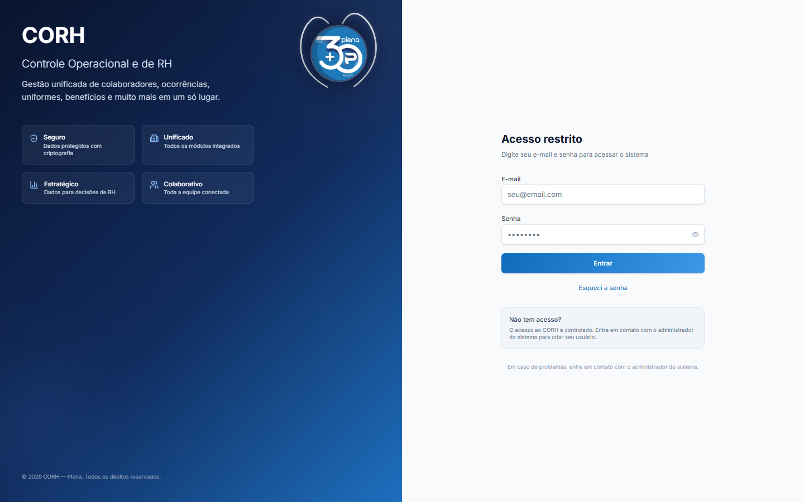
Tela: login (imagem com dados de exemplo)
Como fazer
Entrar no sistema:
Abra o endereço do CORH no seu navegador.
Digite seu e-mail cadastrado no campo E-mail.
Digite sua senha no campo Senha. Ela aparece como bolinhas (••••) para ninguém ler por cima do ombro.
Clique no botão Entrar.
Se for o seu primeiro acesso, o sistema mostra o Termo de Consentimento (veja a seção "Termo de consentimento LGPD" abaixo). Depois de aceitar, você cai no Dashboard.
💡 DICA — Se a tela parecer estranha ou desatualizada, pressione Ctrl+Shift+R no teclado para recarregar a página por completo. Isso resolve a maioria dos problemas de exibição.
Recuperar a senha:
Na tela de login, digite seu e-mail no campo E-mail (obrigatório antes de clicar no link).
Clique em Esqueci a senha.
O sistema mostra a mensagem verde "Link de redefinição enviado para o e-mail cadastrado."
Abra sua caixa de e-mail e clique no link recebido (veja a seção "Redefinir senha").
⚠️ ATENÇÃO — Se você clicar em "Esqueci a senha" sem digitar o e-mail, o sistema mostra o aviso "Digite seu e-mail no campo acima para recuperar a senha".
Campos e botões
E-mail: campo para digitar o e-mail cadastrado pela empresa.
Senha: campo para digitar a senha. O conteúdo fica oculto por padrão.
Olho (ícone ao lado do campo Senha): mostra ou esconde a senha digitada. Útil para conferir se você digitou certo.
Entrar: botão azul que confirma o acesso. Enquanto o sistema verifica seus dados, ele mostra "Entrando..." e fica desabilitado.
Esqueci a senha: link azul abaixo do botão Entrar. Envia um link de redefinição de senha para o seu e-mail. Enquanto envia, mostra "Enviando...".
Caixa "Não tem acesso?": lembra que o acesso é controlado e que o usuário é criado pelo administrador do sistema.
Redefinir senha
É a tela que aparece quando você clica no link de redefinição recebido no seu e-mail. Ela serve para escolher uma senha nova. A senha precisa ter pelo menos 6 caracteres.
Como fazer
No e-mail recebido, clique no link de redefinição. O CORH abre a tela "Redefinir senha".
Digite a senha nova no campo Nova senha (mínimo de 6 caracteres).
Digite a mesma senha de novo no campo Confirmar nova senha.
Clique em Salvar nova senha. Enquanto grava, o botão mostra "Salvando...".
Pronto: o sistema volta para a tela de login. Entre com a senha nova.
⚠️ ATENÇÃO — Se as duas senhas digitadas forem diferentes, aparece a mensagem vermelha "As senhas não conferem". Se tiver menos de 6 caracteres, aparece "A senha deve ter pelo menos 6 caracteres".
⚠️ ATENÇÃO — O link de redefinição tem prazo de validade. Se ele expirar, o sistema mostra a mensagem "Não foi possível redefinir a senha. O link pode ter expirado — peça um novo na tela de login." Nesse caso, volte à tela de login e peça outro link.
Campos e botões
Nova senha: campo para digitar a senha nova (mínimo de 6 caracteres).
Olho (ícone ao lado do campo Nova senha): mostra ou esconde o que foi digitado — vale para os dois campos de senha ao mesmo tempo.
Confirmar nova senha: campo para repetir a senha nova, garantindo que não houve erro de digitação.
Salvar nova senha: botão azul que grava a senha nova e devolve você para a tela de login.
Termo de consentimento LGPD (primeiro acesso)
No primeiro acesso, o sistema exige que você leia e aceite o Termo de Consentimento para Tratamento de Dados Pessoais. É a regra da LGPD (Lei Geral de Proteção de Dados): como o CORH guarda dados pessoais dos colaboradores, cada usuário precisa confirmar que está de acordo. Sem aceitar, não é possível usar o sistema.
Como fazer
Entre com seu e-mail e senha pela primeira vez.
O sistema abre a tela do termo, com o título, a versão e o texto completo do Termo de Consentimento.
Role o texto até o fim e leia a lista Finalidades do tratamento — ela explica para que os dados são usados.
Marque a caixa Li e concordo com o Termo de Consentimento para Tratamento de Dados Pessoais acima.
Clique em Aceito e quero continuar. Enquanto registra, o botão mostra "Registrando...".
O sistema mostra a mensagem verde "Consentimento registrado com sucesso" e abre o Dashboard.
⚠️ ATENÇÃO — O botão "Aceito e quero continuar" só fica habilitado depois de marcar a caixa de concordância.
Campos e botões
Texto do termo: o conteúdo completo do Termo de Consentimento, com rolagem. O topo mostra o título e a versão do termo.
Finalidades do tratamento: quadro cinza que lista, em tópicos, para que os dados pessoais são tratados no sistema.
Caixa de concordância: marcação "Li e concordo com o Termo de Consentimento...". Obrigatória para continuar.
Aceito e quero continuar: botão que registra seu aceite e libera o uso do sistema.
💡 DICA — Depois de aceitar, você pode reler o termo a qualquer momento: clique no seu nome no canto superior direito e escolha Termo de privacidade (LGPD).
Dashboard
É a primeira tela que você vê depois de entrar. Ela mostra um resumo do que precisa de atenção: quantidade de colaboradores ativos, ocorrências esperando análise, contratos de experiência no período de prova, aniversariantes do mês e alertas dos módulos. A maioria dos cartões é clicável e leva direto para a tela correspondente.
No topo, uma faixa azul cumprimenta você pelo primeiro nome ("Bom dia", "Boa tarde" ou "Boa noite", conforme a hora), mostra a data de hoje e, se houver pendências, avisa "X itens precisam de atenção hoje".
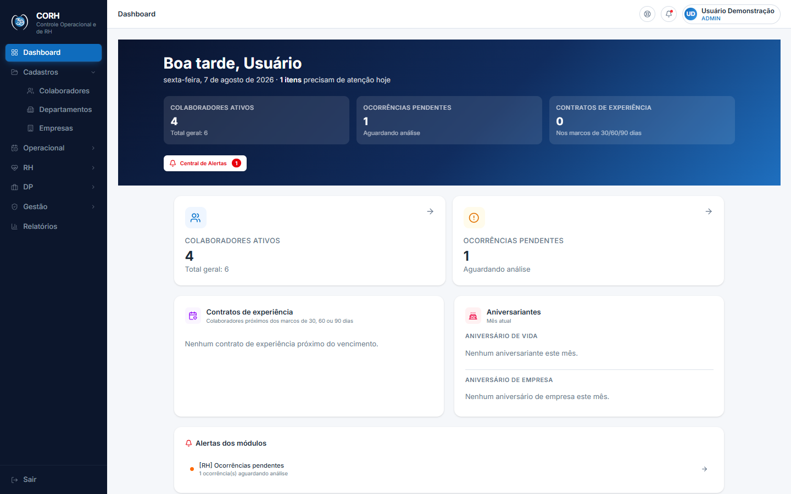
Tela: dashboard (imagem com dados de exemplo)
Como fazer
Ver os números gerais:
Logo abaixo da saudação, três cartões mostram: Colaboradores ativos (com o total geral abaixo), Ocorrências pendentes (aguardando análise) e Contratos de experiência (nos marcos de 30, 60 e 90 dias).
Ir direto para uma tela:
Clique no cartão Colaboradores Ativos para abrir a lista de colaboradores.
Clique no cartão Ocorrências Pendentes para abrir a tela de ocorrências.
Clique numa pessoa da lista de Contratos de experiência para abrir a ficha dela.
Clique num alerta da seção Alertas dos módulos para ir direto à tela onde a pendência está (por exemplo, a lista de itens com estoque baixo).
Abrir a Central de Alertas:
Clique no botão Central de Alertas (com ícone de sino) na faixa azul. Se houver alertas, o botão aparece branco com um círculo vermelho mostrando a quantidade.
Campos e botões
Cartão Colaboradores ativos (faixa azul): número de colaboradores com status Ativo, com o total geral (incluindo inativos) logo abaixo.
Cartão Ocorrências pendentes (faixa azul): quantas ocorrências estão aguardando análise.
Cartão Contratos de experiência (faixa azul): quantos colaboradores estão nos marcos de 30, 60 ou 90 dias de empresa.
Central de Alertas: botão que abre a tela de Alertas do RH. O círculo vermelho indica quantos itens precisam de atenção.
Cartão Colaboradores Ativos (grande): repete o número de ativos e leva à lista de colaboradores ao clicar.
Cartão Ocorrências Pendentes (grande): repete o número de pendentes e leva à tela de ocorrências ao clicar.
Contratos de experiência: lista os colaboradores contratados há até 90 dias. Cada linha mostra o nome, o cargo, o departamento, um círculo colorido com o marco (30, 60 ou 90), quantos dias de empresa a pessoa tem e a data de admissão. Clicar abre a ficha do colaborador. Se não houver ninguém no período, aparece "Nenhum contrato de experiência próximo do vencimento."
Aniversariantes: mostra quem faz aniversário no mês atual, em duas listas:
Aniversário de vida: aniversário de nascimento. Quem faz aniversário no dia aparece destacado em rosa com a marca "· Hoje".
Aniversário de empresa: aniversário de admissão. No dia exato, mostra também quantos anos de empresa a pessoa completa (ex.: "· 3 anos").
Alertas dos módulos: lista pendências como "Ocorrências pendentes" (RH), "Alertas críticos" (Alertas), "Estoque baixo" (CEU) e "CA próximo do vencimento" (CEU — certificados de aprovação de EPI que vencem em até 30 dias). Uma bolinha colorida indica a gravidade: vermelho (crítica), laranja (alta), amarelo (média) ou azul (baixa). Cada alerta é clicável e leva à tela correspondente. Esta seção só aparece quando existe pelo menos um alerta.
💡 DICA — O Dashboard é um painel de consulta — você não preenche nada nele. Use-o como ponto de partida: clique nos cartões e alertas para resolver as pendências do dia.
Menu lateral e cabeçalho
O menu lateral azul-escuro fica à esquerda e é o caminho para todas as telas. Ele só mostra os módulos que o seu perfil pode acessar: se você não vê uma opção, é porque seu perfil não tem permissão para ela. O cabeçalho branco fica no topo de todas as telas e mostra onde você está, além dos atalhos de ajuda e do seu usuário.
Como fazer
Navegar pelo menu lateral:
Clique em Dashboard para voltar à tela inicial.
Clique num grupo (por exemplo, Cadastros, Operacional, RH, DP ou Gestão) para abrir ou fechar a lista de telas daquele grupo. A setinha ao lado do nome indica se está aberto ou fechado. O grupo da tela em uso abre sozinho.
Clique no nome da tela desejada (por exemplo, Colaboradores). A tela em uso fica destacada em azul.
Clique em Relatórios, na parte de baixo do menu, para abrir os relatórios gerais.
Clique em Sair para encerrar sua sessão e voltar à tela de login.
💡 DICA — No computador, o menu pode ficar recolhido mostrando só os ícones. Nesse caso, clique no ícone de três tracinhos (☰) no topo do menu para expandi-lo. Passe o mouse sobre um ícone recolhido para ver o nome da tela.
Usar o cabeçalho:
Veja o caminho da tela atual no topo (por exemplo, "CEU › Movimentações") — são as migalhas de navegação, que ajudam a saber onde você está.
No celular, toque no ícone de três tracinhos (☰) no canto superior esquerdo para abrir o menu lateral.
Clique na bóia salva-vidas (ícone redondo) para abrir a Ajuda e suporte (detalhes abaixo).
Clique no seu nome (canto superior direito) para abrir o menu do usuário, com as opções Termo de privacidade (LGPD) e Ajuda e suporte.
Pedir ajuda sem sair do sistema:
Clique na bóia salva-vidas no topo da tela (ou no seu nome → Ajuda e suporte).
Na janela que abre, descreva o problema no campo de texto. Ex.: "ao exportar o relatório de extras, a tela ficou em branco...". O limite é de 2.000 caracteres, com contador no canto.
Se quiser, clique em Anexar print ou arquivo para juntar uma imagem ou PDF que ajude a explicar o problema. Você pode anexar até 3 arquivos de no máximo 5 MB cada (PNG, JPG, WebP, GIF ou PDF). Para tirar um anexo da lista, clique no X ao lado do nome dele.
Clique em Enviar mensagem. Enquanto envia, o botão mostra "Enviando...".
O sistema mostra a mensagem verde "Mensagem enviada. Obrigado pelo retorno!" e fecha a janela. A equipe de suporte recebe seu relato junto com a informação de em qual tela você estava — por isso você não precisa se preocupar em informar isso.
💡 DICA — Um print da tela com o erro ajuda muito o suporte a resolver rápido. Anexe sempre que puder.
Campos e botões
Menu lateral:
Dashboard: volta à tela inicial com o resumo do dia.
Grupo Cadastros: telas Colaboradores, Departamentos e Empresas.
Grupo Operacional: telas Escalas, Extras e Lançar Falta (atalho usado no celular).
Grupo RH: telas Férias e Ocorrências.
Grupo DP: telas Adicionais, Benefícios e CEU (crachás, equipamentos e uniformes).
Grupo Gestão: telas Auditoria, e-Contador e Permissões (visíveis só para perfis de gestão, como o Administrador).
Relatórios: abre os relatórios gerais do sistema.
Sair: encerra a sessão e volta à tela de login.
⚠️ ATENÇÃO — O menu muda conforme o seu perfil. O Administrador vê tudo; os demais perfis (Gestor, RH, DP1, DP2, Mesa, Inspetoria, Financeiro e Visualizador) veem apenas os módulos do seu trabalho. Se faltar uma opção que você precisa, fale com o administrador.
Cabeçalho:
Migalhas de navegação: caminho da tela atual (ex.: "Adicionais › Importar ponto"), à esquerda do topo.
Bóia salva-vidas (ícone redondo): abre a janela Ajuda e suporte.
Sino: ícone de notificações com uma bolinha vermelha.
Seu nome e perfil: botão com suas iniciais, seu nome e seu perfil de acesso. Ao clicar, abre um menu com:
Termo de privacidade (LGPD): relê o termo aceito no primeiro acesso.
Ajuda e suporte: abre a mesma janela de suporte da bóia salva-vidas.
Janela Ajuda e suporte:
Campo de mensagem: onde você descreve o problema (obrigatório, até 2.000 caracteres). Logo abaixo, o sistema mostra "Enviando como" com o seu nome e o contador de caracteres.
Anexar print ou arquivo: botão para juntar imagens ou PDF ao relato (até 3 arquivos de 5 MB). Depois do primeiro anexo, o botão mostra "Anexar mais (1/3)".
X (ao lado de cada anexo): remove o arquivo da lista antes de enviar.
Enviar mensagem: botão que manda o relato para a equipe de suporte. Só fica habilitado quando há texto na mensagem.
Dúvidas frequentes
Não lembro minha senha. E agora?
Na tela de login, digite seu e-mail e clique em "Esqueci a senha". Você recebe um link no e-mail para criar uma senha nova. Se o link expirar, peça outro.
Posso criar meu próprio usuário?
Não. O acesso é controlado: só o administrador do sistema cria usuários. Fale com ele.
Por que meu menu é diferente do do meu colega?
Cada perfil de acesso vê só os módulos do seu trabalho. O Administrador vê tudo; os outros perfis têm visões menores. Se você precisa de um módulo que não aparece, peça ao administrador.
Uma tela ficou estranha ou parece desatualizada. O que faço?
Pressione Ctrl+Shift+R para recarregar a página por completo. Se continuar, use a bóia salva-vidas no topo para avisar o suporte, anexando um print.
Preciso aceitar o termo LGPD toda vez que entrar?
Não. O aceite é pedido uma única vez, no primeiro acesso. Depois, você pode relê-lo quando quiser pelo menu do seu nome no topo, em "Termo de privacidade (LGPD)".
Capítulo 2 — Cadastros (Colaboradores, Departamentos e Empresas)
Este módulo guarda os cadastros básicos do sistema: as pessoas que trabalham na empresa (colaboradores), os postos de trabalho e clientes onde elas atuam (departamentos) e os CNPJs do grupo (empresas). Quase todos os outros módulos usam esses dados, então é aqui que tudo começa. Os dados dos colaboradores chegam principalmente pela importação do e-Contador ou por planilha, mas dá para consultar e corrigir pela tela sempre que preciso.
Lista de Colaboradores
É a tela principal do cadastro de pessoas. Ela mostra a lista de colaboradores com nome, função, departamento, telefone e status (Ativo, Inativo ou Afastado). A partir dela você localiza uma pessoa, vê um resumo dos dados dela e faz correções rápidas, como telefone ou cargo.
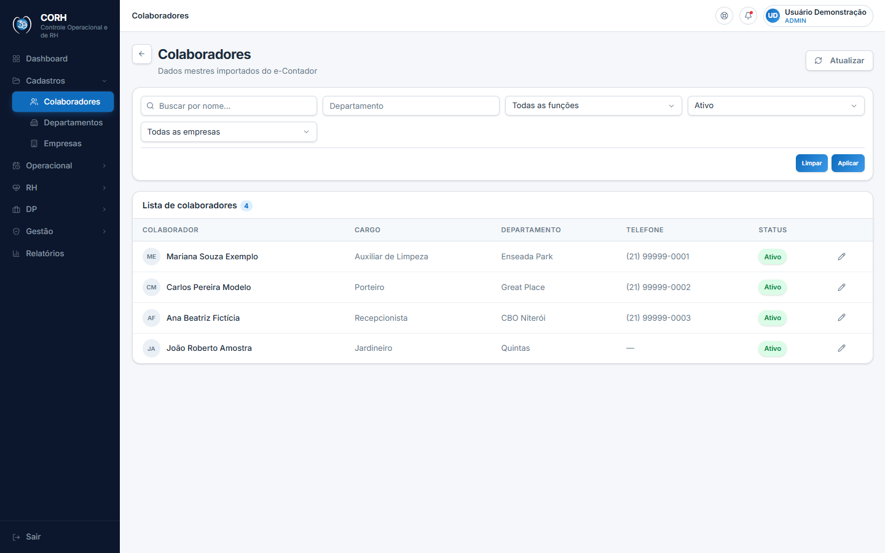
Tela: colaboradores (imagem com dados de exemplo)
A tela abre mostrando apenas os colaboradores Ativos. Para ver demitidos ou afastados, mude o filtro de Status.
💡 DICA — o CPF aparece completo apenas para os perfis Administrador, Gestor, RH, DP1, DP2 e Financeiro. Para os demais perfis, ele sai mascarado (por exemplo, *.456.789-). Isso vale na lista, na ficha e em qualquer tela do sistema.
Como fazer
Localizar um colaborador:
No campo de busca, digite parte do nome da pessoa. Você também pode escolher um Departamento, uma Função, um Status ou uma Empresa nas caixas de seleção ao lado.
Clique em Aplicar. A lista mostra só quem combina com o que você pediu.
Para voltar à lista padrão (só os Ativos, sem busca), clique em Limpar.
💡 DICA — dentro do campo de busca, você pode apertar a tecla Enter em vez de clicar em Aplicar — o resultado é o mesmo.
Ver os dados de um colaborador:
Clique em qualquer lugar da linha da pessoa na lista.
Abre-se a janela Detalhes, com o nome, a matrícula, o status e cartões com Cargo, Departamento, Admissão, Demissão, Telefone, E-mail, Endereço e Documentos (CPF e RG).
Para fechar, clique no X no canto superior direito da janela.
Corrigir dados básicos (telefone, cargo, e-mail etc.):
Clique no ícone de lápis na linha da pessoa (ou abra os Detalhes e clique no botão Editar). A janela vira o modo Editar colaborador.
Altere o que precisar: nome completo, cargo, departamento, telefone, celular, e-mail ou status.
Clique em Salvar. O sistema mostra a mensagem verde "Colaborador atualizado" e a lista já volta com o dado novo.
Se desistir, clique em Cancelar — nada é alterado.
⚠️ ATENÇÃO — o botão Editar e o lápis só aparecem para os perfis Administrador, Gestor, RH, DP1, DP2 e Mesa. O Visualizador, a Inspetoria e o Financeiro só consultam.
Atualizar a lista:
Clique no botão Atualizar, no canto superior direito da tela. O sistema busca os dados mais recentes (útil quando outra pessoa acabou de importar ou editar cadastros).
Campos e botões
Buscar por nome: campo de texto que localiza o colaborador pelo nome.
Departamento: caixa de seleção com busca — comece a digitar o nome do posto e escolha na lista. Filtra quem trabalha naquele local.
Função: caixa de seleção com todas as funções cadastradas. "Todas as funções" não filtra nada.
Status: caixa de seleção com Todos, Ativo, Inativo e Afastado. O padrão ao abrir a tela é Ativo.
Empresa: caixa de seleção com as empresas do grupo. "Todas as empresas" não filtra nada.
Aplicar: botão que executa a busca com os filtros escolhidos.
Limpar: botão que apaga a busca e volta os filtros ao padrão (Status = Ativo).
Atualizar: botão no topo que recarrega a lista com os dados mais recentes.
Colaborador (coluna): foto ou iniciais da pessoa, seguidas do nome completo. Clicar na linha abre os Detalhes.
Cargo (coluna): função da pessoa. Mostra um traço (—) quando não há cargo cadastrado.
Departamento (coluna): nome curto do posto onde a pessoa trabalha.
Telefone (coluna): telefone fixo ou, se não houver, o celular.
Status (coluna): etiqueta colorida com a situação (Ativo, Inativo ou Afastado).
Lápis (ícone na linha): abre a janela já no modo de edição. Só aparece para quem tem permissão de edição.
Paginação: no rodapé da lista, mostra "Mostrando X a Y de Z resultados" e os botões Anterior e Próxima. A lista mostra 50 colaboradores por página.
Editar (na janela de Detalhes): transforma a janela em formulário de edição.
Salvar (no modo de edição): grava as alterações. Fica desativado enquanto o nome estiver vazio ou enquanto o sistema estiver salvando.
Cancelar (no modo de edição): sai do modo de edição sem gravar.
Ficha do colaborador
É a página completa de uma pessoa: além dos dados cadastrais, mostra todas as ocorrências registradas para ela e permite imprimir a ficha em PDF. Você chega a ela, por exemplo, clicando no nome do colaborador em um alerta do módulo RH.
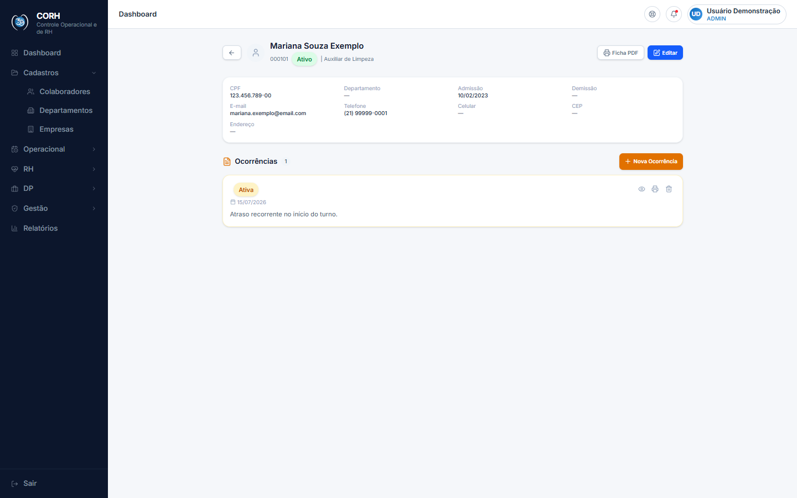
Tela: colaborador-detalhe (imagem com dados de exemplo)
No topo aparecem o nome, a matrícula, o status e o cargo. Logo abaixo, um cartão reúne CPF, departamento, datas de admissão e demissão, e-mail, telefones, CEP e endereço. Se a pessoa estiver afastada, aparece um aviso laranja com o motivo e o período do afastamento.
Como fazer
Imprimir a ficha em PDF:
Clique no botão Ficha PDF, no canto superior direito.
O sistema gera e baixa um arquivo PDF com os dados da pessoa e a lista das ocorrências dela, com a data de emissão no topo.
Registrar uma ocorrência para a pessoa:
Clique no botão Nova Ocorrência (laranja), acima da lista de ocorrências.
O sistema abre a tela de registro de ocorrência já com o colaborador preenchido (detalhes no capítulo de Ocorrências).
⚠️ ATENÇÃO — o botão Nova Ocorrência aparece para Administrador, Gestor, RH, DP1, DP2, Mesa e Financeiro.
Abrir uma ocorrência da lista:
Na seção Ocorrências, cada cartão mostra o tipo, a data, a descrição e o status (Pendente, Ativa, Resolvida ou Cancelada). Ocorrências pendentes ficam com fundo alaranjado.
Clique no ícone de olho para abrir a tela de detalhes da ocorrência, ou no ícone de impressora para baixar o PDF daquela ocorrência.
Cancelar/excluir uma ocorrência pela ficha:
Clique no ícone de lixeira no cartão da ocorrência (não aparece em ocorrências já canceladas).
O sistema pergunta "Remover ocorrência?". Clique em Excluir para confirmar ou em Cancelar para desistir.
Confirmando, o sistema mostra a mensagem verde "Ocorrência removida" e a lista é atualizada.
⚠️ ATENÇÃO — a lixeira de ocorrência só aparece para Administrador, Gestor, RH, DP1 e Mesa, e a exclusão é definitiva.
Editar o cadastro completo:
Clique no botão azul Editar, no topo. O sistema abre a tela Editar Colaborador (próxima seção).
Voltar:
Clique no botão com a seta para a esquerda, no topo da página, para voltar à lista de colaboradores.
Campos e botões
Seta para a esquerda: volta para a lista de colaboradores.
Ficha PDF: gera o PDF da ficha com dados cadastrais e ocorrências.
Editar (botão azul): abre a tela de edição completa do cadastro. Só aparece para Administrador, Gestor, RH, DP1, DP2 e Mesa.
CPF: número do CPF. Completo só para Administrador, Gestor, RH, DP1, DP2 e Financeiro; mascarado para os demais.
Departamento: posto/local de trabalho da pessoa.
Admissão / Demissão: datas de entrada e de saída da empresa.
E-mail, Telefone, Celular, CEP, Endereço: dados de contato e endereço cadastrados.
Aviso de afastamento (faixa laranja): aparece só quando há afastamento registrado, com motivo e período.
Ocorrências (seção): lista das ocorrências da pessoa, com contador total e, quando houver, um selo com a quantidade de pendentes.
Olho (ícone): abre os detalhes da ocorrência.
Impressora (ícone): baixa o PDF da ocorrência.
Lixeira (ícone): exclui a ocorrência, após confirmação. Só para perfis com permissão de cancelamento.
Editar Colaborador
É o formulário completo do cadastro, aberto pelo botão Editar da ficha. Aqui você corrige qualquer dado da pessoa — inclusive documentos e datas — e registra a demissão.
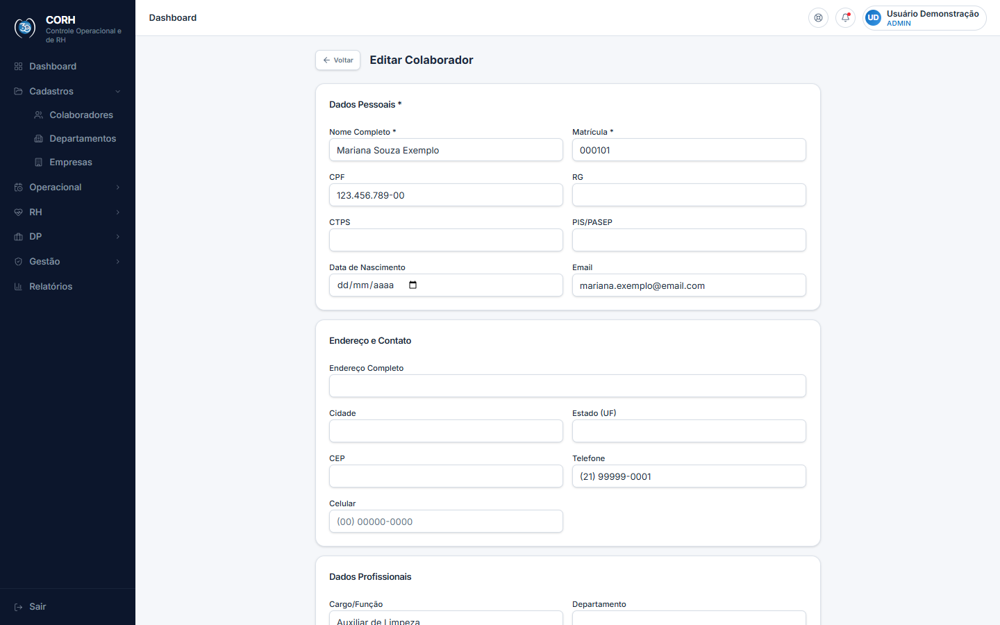
Tela: colaborador-form (imagem com dados de exemplo)
O formulário é dividido em três blocos: Dados Pessoais, Endereço e Contato e Dados Profissionais. Os únicos campos obrigatórios são Nome Completo e Matrícula.
Como fazer
Corrigir o cadastro:
Altere os campos que precisar, em qualquer um dos três blocos.
Clique em Salvar Colaborador.
O sistema mostra a mensagem verde "Colaborador atualizado com sucesso" e volta sozinho para a lista de colaboradores.
Se desistir, clique em Cancelar ou em Voltar — nada é gravado.
Registrar uma demissão:
No bloco Dados Profissionais, preencha o campo Data de Demissão.
Clique em Salvar Colaborador.
Ao salvar, o sistema muda o status da pessoa para Inativo automaticamente — não é preciso mexer no campo Status.
💡 DICA — se a pessoa foi reintegrada, apague a Data de Demissão e salve de novo, ajustando o Status para Ativo.
Campos e botões
Voltar: retorna à lista de colaboradores sem salvar.
Nome Completo *: nome da pessoa (obrigatório).
Matrícula *: número de matrícula (obrigatório). Cada matrícula é única no sistema — se você tentar salvar uma matrícula que já existe, aparece a mensagem de erro "Matrícula já existe no sistema".
CPF: número do CPF. O sistema confere os dígitos: se o CPF for inválido, o salvamento é bloqueado com o aviso "CPF inválido. Verifique os dígitos."
RG: número da identidade.
CTPS: número da carteira de trabalho.
PIS/PASEP: número do PIS/PASEP.
Data de Nascimento: selecione no calendário.
Email: e-mail da pessoa.
Endereço Completo, Cidade, Estado (UF), CEP: endereço. O campo Estado aceita no máximo 2 letras.
Telefone / Celular: o próprio campo coloca a máscara (00) 00000-0000 enquanto você digita.
Cargo/Função: função da pessoa.
Departamento: posto/local de trabalho.
Tipo de Contrato: caixa de seleção com CLT, PJ, Estágio e Temporário.
Data de Admissão: data de entrada na empresa.
Data de Demissão: data de saída. Ao preenchê-la e salvar, o status vira Inativo sozinho.
Status: caixa de seleção com Ativo, Inativo e Afastado.
Cancelar: sai sem salvar.
Salvar Colaborador: grava as alterações e volta para a lista. Enquanto grava, o botão mostra "Salvando...".
Importar colaboradores por planilha (Importar RH)
É a tela para cadastrar ou atualizar colaboradores em lote, a partir de uma planilha Excel. Em vez de digitar pessoa por pessoa, você envia um arquivo e o sistema grava tudo de uma vez. Quem já existe no sistema (mesma matrícula) tem o cadastro atualizado; quem não existe é cadastrado.
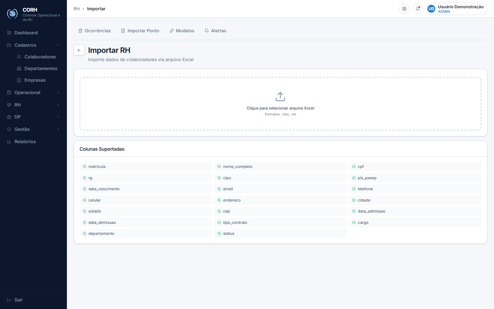
Tela: importar-rh (imagem com dados de exemplo)
⚠️ ATENÇÃO — a importação é liberada apenas para os perfis Administrador, DP1 e DP2. Se outro perfil tentar abrir a tela, o sistema avisa que não há permissão e volta para a lista de colaboradores.
⚠️ ATENÇÃO — células vazias na planilha não apagam o que já está cadastrado — o sistema só substitui os campos que vierem preenchidos. Linhas sem matrícula ou sem nome são ignoradas.
Como fazer
Importar a planilha:
Clique na área tracejada "Clique para selecionar arquivo Excel" e escolha o arquivo no seu computador. Só valem arquivos .xlsx ou .xls — outro formato mostra o aviso "Formato inválido".
O sistema lê o arquivo e mostra a mensagem verde com a quantidade de registros encontrados, o nome e o tamanho do arquivo, e uma pré-visualização com os 10 primeiros registros (Matrícula, Nome, CPF, Cargo e Status). Confira se as colunas caíram nos lugares certos.
Se o arquivo estiver errado, clique no X vermelho ao lado do nome do arquivo para descartá-lo e escolher outro.
Clique em Iniciar Importação. A tela mostra o progresso ("Importando... N registros").
Ao terminar, o sistema mostra a mensagem verde "N colaboradores importados com sucesso!" e limpa a tela para uma nova importação.
Entender os avisos durante a importação:
"N linha(s) ignorada(s) por falta de matrícula ou nome": essas linhas não entraram. Corrija a planilha e importe de novo se precisar delas.
"N CPF(s) inválido(s) não foram salvos (demais dados importados)": a pessoa foi importada, mas o CPF ficou de fora porque os dígitos não conferem. Corrija depois pela ficha.
"Erro no lote N": parte do arquivo falhou. O sistema informa qual trecho deu problema; os demais lotes continuam.
Preparar a planilha:
A tela mostra o quadro Colunas Suportadas. Você pode usar os nomes técnicos (ex.: matricula, nome_completo, cpf) ou os nomes amigáveis mais comuns — o sistema reconhece variações como "Matricula", "Nome Completo", "CPF", "Data Admissão", "Data Demissão", "Cargo", "Função", "Celular" etc. As datas podem estar em formato de data do Excel ou texto. Se a coluna Data Demissão vier preenchida, a pessoa entra como Inativa; caso contrário, como Ativa.
Campos e botões
Área de seleção de arquivo: clique para escolher a planilha (.xlsx ou .xls) no computador.
Nome e tamanho do arquivo: confirmação visual do arquivo escolhido.
X vermelho: descarta o arquivo escolhido e limpa a pré-visualização.
Pré-visualização: tabela com os 10 primeiros registros lidos, para conferência antes de gravar.
Iniciar Importação: botão que grava os dados no sistema.
Colunas Suportadas (quadro): lista das colunas que a planilha pode ter: matricula, nome_completo, cpf, rg, ctps, pis_pasep, data_nascimento, email, telefone, celular, endereco, cidade, estado, cep, data_admissao, data_demissao, tipo_contrato, cargo, departamento e status.
Abas do módulo (no topo): Ocorrências, Importar Ponto, Modelos e Alertas — atalhos para as outras telas do módulo RH.
Departamentos / Postos
Departamentos são os postos de trabalho e clientes onde os colaboradores atuam — condomínios, empresas e hospitais atendidos pela Plena. Nesta tela você cadastra cada local com endereço, contatos da portaria e do síndico/administrador e a data de início do contrato.
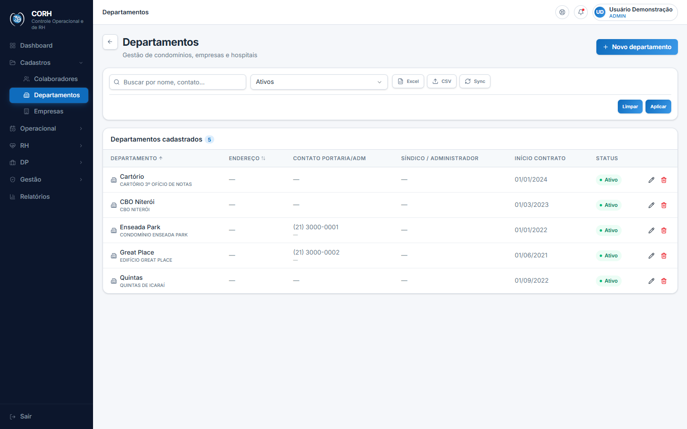
Tela: departamentos (imagem com dados de exemplo)
A tela abre mostrando só os departamentos Ativos. A busca filtra a lista na hora, conforme você digita — não é preciso clicar em Aplicar.
Como fazer
Localizar um departamento:
Digite no campo de busca parte do nome (completo ou curto) ou do nome de um contato. A lista se filtra sozinha.
Use a caixa Status para alternar entre Ativos, Inativos e Todos.
Para voltar ao padrão, clique em Limpar.
Ordenar a lista:
Clique no título da coluna Departamento ou Endereço para ordenar de A a Z. Clique de novo para inverter a ordem (a setinha ao lado do título indica a direção).
Cadastrar um departamento:
Clique em Novo departamento, no canto superior direito.
Preencha pelo menos Nome e Nome curto (obrigatórios). Os demais campos são opcionais.
Clique em Salvar. O sistema mostra a mensagem verde "Departamento criado" e o novo local já aparece na lista.
Se faltar o nome ou o nome curto, o sistema avisa o que está faltando e não salva.
⚠️ ATENÇÃO — o botão Novo departamento só aparece para Administrador, Gestor, DP1, DP2, Mesa e Financeiro.
Editar um departamento:
Clique no ícone de lápis na linha do departamento.
A janela abre com os dados atuais. Altere o que precisar — por exemplo, marcar o Status como Inativo quando o contrato terminar.
Clique em Atualizar. O sistema mostra a mensagem verde "Departamento atualizado".
Excluir um departamento:
Clique no ícone de lixeira vermelha na linha.
O sistema pergunta "Excluir departamento?" e avisa que a ação não pode ser desfeita.
Clique em Excluir para confirmar ou em Cancelar para desistir. Confirmando, aparece a mensagem verde "Departamento removido".
⚠️ ATENÇÃO — a lixeira só aparece para Administrador, Gestor e Financeiro. Na dúvida, prefira marcar o departamento como Inativo em vez de excluir.
Exportar para Excel:
Clique no botão Excel (na área de filtros). O sistema baixa o arquivo departamentos.xlsx com todos os campos dos departamentos que estão na tela — os filtros aplicados valem para a exportação.
Importar por CSV:
Clique no botão CSV e escolha o arquivo no computador.
O sistema cadastra os departamentos do arquivo e mostra a mensagem verde "N departamento(s) importado(s)". Linhas sem nome são ignoradas.
O arquivo CSV deve ter os mesmos cabeçalhos da planilha exportada pelo botão Excel (Nome, Nome curto, Contato portaria/adm, Endereço, Bairro, Cidade, Estado, CEP, Nome do contato, Telefone do contato, E-mail do contato, Nome do contato 2, Telefone do contato 2, E-mail do contato 2, Data início contrato, Status).
⚠️ ATENÇÃO — os botões CSV e Sync só aparecem para Administrador, Gestor, RH, DP1, DP2 e Mesa. O botão Sync é de uso interno — no uso normal do sistema, clicar nele apenas mostra um aviso de que a sincronização não está disponível.
Campos e botões
Na tela principal:
Buscar por nome, contato...: campo de texto que filtra a lista na hora por nome, nome curto, contato da portaria ou nome do síndico.
Status: caixa de seleção com Ativos, Inativos e Todos.
Aplicar / Limpar: botões de filtro. Como a busca já filtra sozinha, o uso prático é o Limpar, que zera a busca e volta ao filtro Ativos.
Excel: exporta a lista exibida para uma planilha.
CSV: importa departamentos de um arquivo CSV. Restrito por perfil.
Sync: botão de uso interno; sem efeito no uso normal. Restrito por perfil.
Novo departamento: abre a janela de cadastro. Restrito por perfil.
Departamento (coluna): nome curto em destaque, com o nome completo em letras menores embaixo. Clicável para ordenar.
Endereço (coluna): endereço com bairro e cidade embaixo. Clicável para ordenar.
Contato portaria/adm (coluna): nome do contato da portaria e telefone.
Síndico / Administrador (coluna): nome do contato principal e telefone.
Início contrato (coluna): data de início do contrato com o local.
Status (coluna): etiqueta Ativo (verde) ou Inativo (cinza).
Lápis / Lixeira (ícones): editar e excluir o departamento, conforme o perfil.
Na janela de cadastro/edição:
Nome *: nome completo do local (ex.: Condomínio Solar da Praia).
Nome curto *: apelido usado nas listas e filtros do sistema (ex.: Solar).
Contato portaria/adm: nome de quem atende na portaria ou administração.
Endereço, Bairro, Cidade, Estado, CEP: endereço do local. Estado com 2 letras; o CEP recebe a máscara sozinho.
Nome do síndico/administrador, Telefone, E-mail: primeiro contato do cliente.
Nome do 2º contato, Telefone 2, E-mail 2: segundo contato, opcional.
Status: Ativo ou Inativo.
Data de início do contrato: data de início do contrato com o local.
Cancelar: fecha a janela sem salvar.
Salvar / Atualizar: grava o cadastro (Salvar no cadastro novo, Atualizar na edição).
Empresas
É o cadastro das empresas do grupo — um registro para cada CNPJ. Esses dados aparecem nos filtros de outras telas e são usados na emissão de recibos e relatórios.
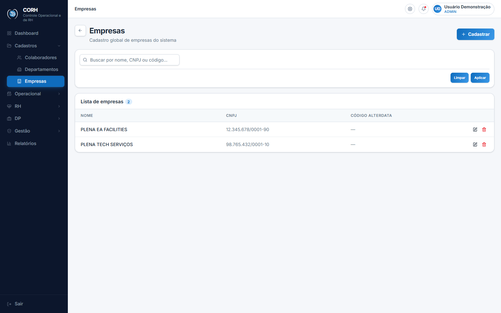
Tela: empresas (imagem com dados de exemplo)
A busca filtra a lista na hora, conforme você digita.
Como fazer
Cadastrar uma empresa:
Clique no botão Cadastrar, no canto superior direito.
Preencha a Razão social / Nome (obrigatório). O CNPJ recebe a máscara 00.000.000/0000-00 enquanto você digita; o sistema confere os dígitos e bloqueia o salvamento se o CNPJ for inválido.
Se a empresa tiver código no sistema de folha (Alterdata), preencha o Código Alterdata.
Clique em Cadastrar (na janela). O sistema mostra a mensagem verde "Empresa criada com sucesso" e a empresa aparece na lista.
⚠️ ATENÇÃO — o botão Cadastrar e a edição só aparecem para Administrador, Gestor, DP1, DP2 e Financeiro.
Editar uma empresa:
Clique no ícone de lápis na linha da empresa.
Altere os dados e clique em Atualizar. O sistema mostra a mensagem verde "Empresa atualizada".
Excluir uma empresa:
Clique no ícone de lixeira vermelha na linha.
O sistema pergunta "Remover empresa?" e avisa que a ação não pode ser desfeita.
Clique em Excluir para confirmar. Aparece a mensagem verde "Empresa removida".
⚠️ ATENÇÃO — a lixeira só aparece para o Administrador.
Campos e botões
Na tela principal:
Buscar por nome, CNPJ ou código...: campo de texto que filtra a lista na hora por qualquer um desses dados.
Aplicar / Limpar: botões de filtro. O uso prático é o Limpar, que zera a busca.
Cadastrar: abre a janela de nova empresa. Restrito por perfil.
Nome (coluna): razão social da empresa.
CNPJ (coluna): CNPJ formatado; mostra um traço (—) quando não informado.
Código Alterdata (coluna): código da empresa no sistema de folha; traço quando não informado.
Lápis / Lixeira (ícones): editar e excluir, conforme o perfil.
Na janela de cadastro/edição:
Razão social / Nome *: nome da empresa (obrigatório).
CNPJ: número do CNPJ, com máscara e conferência automática dos dígitos.
Código Alterdata: código usado na integração com a folha de pagamento.
Cancelar: fecha sem salvar.
Cadastrar / Atualizar: grava os dados (Cadastrar na empresa nova, Atualizar na edição).
Dúvidas frequentes
Demiti uma pessoa. Preciso apagar o cadastro dela?
Não — e o sistema nem oferece exclusão de colaborador pelas telas comuns. Basta preencher a Data de Demissão na ficha de edição: o status vira Inativo sozinho e a pessoa sai das listas de ativos, mas o histórico (ocorrências, entregas, recibos) fica preservado.
Importei a planilha e um colaborador sumiu dos dados. O que houve?
Provavelmente a linha estava sem matrícula ou sem nome — o sistema ignora essas linhas e avisa na mensagem amarela. CPF errado não apaga o cadastro: a pessoa entra, só o CPF fica de fora. Corrija a planilha ou a ficha e repita.
Importei de novo uma planilha antiga. Vai duplicar as pessoas?
Não. O sistema usa a matrícula como chave: quem já existe é atualizado, quem não existe é cadastrado. Por isso a matrícula precisa estar sempre certa na planilha.
Por que o CPF de algumas pessoas aparece com asteriscos para mim?
É uma proteção de dado pessoal. O CPF completo só aparece para Administrador, Gestor, RH, DP1, DP2 e Financeiro. Se você precisa do número para um trabalho legítimo e não tem acesso, peça a um desses perfis.
O contrato com um posto acabou. Excluo o departamento?
Prefira editar e mudar o Status para Inativo: o posto sai das listas do dia a dia, mas o histórico ligado a ele (escalas, entregas, ocorrências) continua consultável. A exclusão é definitiva e restrita a poucos perfis.
Capítulo 3 — RH: Ocorrências
O módulo de Ocorrências é onde você registra e acompanha tudo o que acontece com os colaboradores: atrasos, faltas, advertências, suspensões, licenças médicas e muito mais. Cada ocorrência guarda a descrição do fato, os documentos que comprovam o motivo e as testemunhas. O sistema também avisa quando algo precisa da sua atenção, por meio dos Alertas. Você acessa essas telas pelo menu lateral, na área de RH, usando as abas no topo da tela: Ocorrências, Importar Ponto, Modelos e Alertas.
Lista de Ocorrências
É a tela principal do módulo. Ela mostra todas as ocorrências registradas, com a data, o colaborador, o grupo, o tipo, o título e a situação de cada uma. No topo, o sistema mostra o total de registros e quantos estão pendentes.
Cada ocorrência tem uma situação (status), indicada por uma etiqueta colorida:
Pendente (amarela): a ocorrência foi registrada, mas ainda faltam os documentos exigidos. Essas linhas aparecem com fundo cinza claro na lista.
Ativa (azul): a ocorrência está valendo, com todos os documentos anexados.
Resolvida (verde): o caso foi encerrado.
Cancelada (cinza): a ocorrência foi anulada e ficou guardada só no histórico.
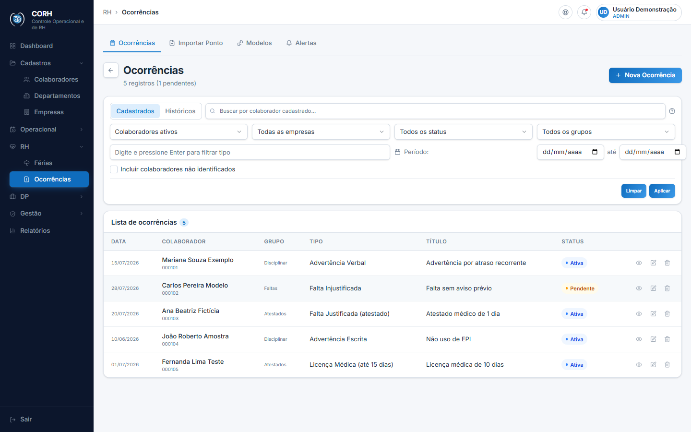
Tela: ocorrencias (imagem com dados de exemplo)
Como fazer
Encontrar uma ocorrência:
Escolha primeiro a aba de busca: Cadastrados (para procurar por um colaborador que existe no sistema) ou Históricos (para procurar ocorrências de colaboradores que não estão mais cadastrados, pelo nome original ou pelo texto da descrição).
Na aba Cadastrados, comece a digitar o nome no campo de busca e escolha a pessoa na lista que aparece. Na aba Históricos, digite o nome ou parte da descrição e pressione Enter.
Se quiser, refine com os demais filtros: colaborador ativo ou inativo, empresa, status, grupo, tipo e período.
Clique em Aplicar para atualizar a lista. A lista também se atualiza sozinha quando você muda um filtro.
Para começar uma busca do zero, clique em Limpar: todos os filtros voltam ao padrão.
💡 DICA — no filtro de Tipo, digite o nome do tipo e pressione Enter. Você pode filtrar vários tipos ao mesmo tempo — cada um vira uma etiqueta abaixo do campo, e você remove clicando no X da etiqueta.
Abrir uma ocorrência:
Na linha da ocorrência, clique no ícone de olho (Ver detalhes). O sistema abre a tela de detalhe.
Se preferir corrigir algo, clique no ícone de lápis (Editar) — ele aparece para quem tem permissão e não aparece em ocorrências canceladas.
Excluir uma ocorrência:
Na linha da ocorrência, clique no ícone de lixeira.
O sistema pergunta "Remover ocorrência?" e avisa que a exclusão é permanente.
Clique em Sim, excluir para confirmar ou em Cancelar para desistir.
⚠️ ATENÇÃO — excluir uma ocorrência é definitivo — não dá para desfazer. Essa exclusão é reservada ao Administrador. Se você só quer anular uma ocorrência sem apagar, use o botão Cancelar dentro da tela de detalhe: ela fica guardada no histórico com a situação "Cancelada".
Cadastrar uma nova ocorrência:
Clique no botão azul Nova Ocorrência, no canto superior direito. O sistema abre o formulário de cadastro (veja a próxima seção). O botão aparece para os perfis Administrador, Gestor, RH, DP1, DP2, Mesa e Financeiro.
Campos e botões
Abas Cadastrados / Históricos: trocam o modo de busca. Cadastrados procura por colaboradores que existem no sistema; Históricos procura em ocorrências de colaboradores não cadastrados, pelo nome original ou pela descrição.
Campo de busca: na aba Cadastrados, busca o colaborador pelo nome ou matrícula; na aba Históricos, busca por nome original ou texto da descrição.
Colaborador: filtra por colaboradores ativos, inativos ou todos. O padrão é mostrar só os ativos.
Empresa: mostra ocorrências de uma empresa específica ou de todas.
Status: filtra pela situação (Pendente, Ativa, Resolvida ou Cancelada).
Macro grupo: filtra pela família da ocorrência (Jornada e Ponto, Conduta e Disciplina, Saúde e Segurança, Afastamentos e Licenças, Desempenho e Produtividade, Relacionamento Interpessoal, Patrimonial, Administrativas ou Registro do RH).
Tipo: filtra por um ou mais tipos de ocorrência (digite e pressione Enter).
Período: duas datas ("de" e "até") para ver só ocorrências daquele intervalo.
Incluir colaboradores não identificados: marca essa caixa para a lista incluir também ocorrências antigas cujo colaborador não foi identificado no sistema.
Aplicar: atualiza a lista com os filtros escolhidos.
Limpar: apaga todos os filtros e volta à lista completa.
Nova Ocorrência: abre o formulário de cadastro.
Olho (Ver detalhes): abre a tela de detalhe da ocorrência.
Lápis (Editar): abre o formulário para corrigir os dados. Não aparece em ocorrências canceladas.
Lixeira: exclui a ocorrência de forma permanente, após confirmação (reservada ao Administrador).
Paginação: a lista mostra 50 registros por página. Use os botões de página anterior e próxima no rodapé para navegar.
Nova Ocorrência
É o formulário usado para registrar uma ocorrência. Ele é dividido em oito partes numeradas, de cima para baixo. A mesma tela serve para editar uma ocorrência já registrada — nesse caso, o título muda para "Editar Ocorrência" e os campos vêm preenchidos.
Uma facilidade importante: quando você escolhe o tipo de ocorrência, o sistema preenche sozinho a descrição com um texto padrão, já com o nome e o CNPJ da empresa do colaborador. Você só precisa completar os trechos marcados com [___] (como datas e horários).
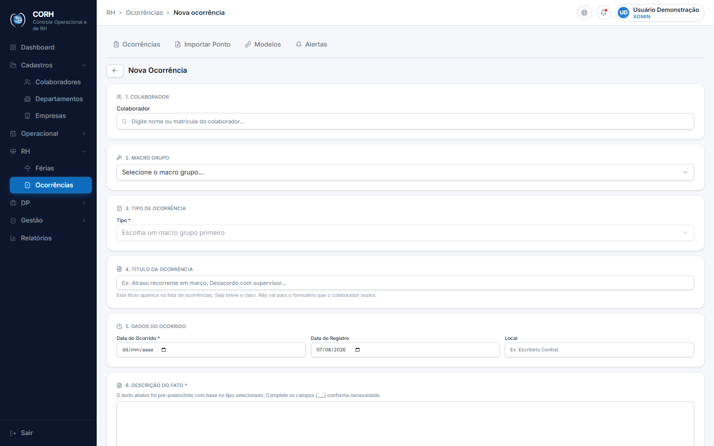
Tela: ocorrencia-nova (imagem com dados de exemplo)
Como fazer
Registrar uma nova ocorrência:
Na lista de ocorrências, clique em Nova Ocorrência.
Na parte 1. Colaborador, digite o nome ou a matrícula e escolha a pessoa na lista. O sistema mostra um cartão azul com nome, matrícula, cargo e empresa.
Na parte 2. Macro Grupo, escolha a família da ocorrência (por exemplo, "1. Jornada e Ponto").
Na parte 3. Tipo de Ocorrência, escolha o tipo. A lista só mostra os tipos do grupo escolhido, e avisa quais "(exige anexo)". Ao escolher, o sistema preenche automaticamente a Gravidade, a Base Legal e o texto da Descrição.
Na parte 4. Título da Ocorrência, escreva um título curto e claro. Ele aparece na lista, mas não sai no documento que o colaborador assina.
Na parte 5. Dados do Ocorrido, informe a data em que o fato aconteceu, a data do registro (já vem com o dia de hoje) e, se quiser, o local.
Na parte 6. Descrição do Fato, revise o texto preenchido automaticamente e complete os trechos [___].
Na parte 7. Defesa e Medidas Corretivas, escreva a defesa do funcionário — esse campo é obrigatório. Registre se ele aceitou a notificação, recusou assinar ou apresentou defesa. Se houver, informe a medida corretiva e o prazo de acompanhamento.
Na parte 8. Testemunhas, se houver, informe nome e cargo de até duas testemunhas.
Clique em Salvar.
Depois de salvar, acontece o seguinte:
Se o tipo exige documentos, o sistema grava a ocorrência como Pendente e mostra o aviso: "Ocorrência registrada como PENDENTE. Anexe documentos comprobatórios para ativar."
Se o tipo não exige documentos, ela já nasce Ativa, com o aviso "Ocorrência registrada como ATIVA."
O sistema tenta gerar automaticamente o PDF da ocorrência (o documento para o colaborador assinar) e abre a tela de detalhe. Se o PDF não puder ser gerado na hora, aparece um aviso amarelo dizendo que você pode gerá-lo depois na tela de detalhes — a ocorrência já está salva.
💡 DICA — se a ocorrência veio de uma falta ou atestado registrado no ponto, ela pode já existir no sistema. A importação de ponto (módulo Adicionais → Importar Ponto) cria ocorrências automaticamente — verifique a lista antes de cadastrar para não duplicar.
⚠️ ATENÇÃO — se faltar informação obrigatória ao salvar, o sistema avisa o que falta: selecionar o colaborador, informar o título, selecionar o tipo, preencher a descrição ou preencher a defesa do funcionário.
Editar uma ocorrência:
Na lista, clique no lápis da ocorrência (ou no botão Editar da tela de detalhe).
Corrija os campos necessários e clique em Salvar. O sistema mostra a mensagem verde "Ocorrência atualizada com sucesso." e volta para a tela de detalhe.
Para sair sem salvar, clique em Cancelar ou na seta de voltar.
⚠️ ATENÇÃO — ao editar, o sistema mantém a situação atual da ocorrência — editar não ativa uma ocorrência pendente. Para ativar, anexe os documentos na tela de detalhe.
Campos e botões
Seta de voltar: retorna à lista de ocorrências.
1. Colaborador: campo de busca por nome ou matrícula. Obrigatório. Depois de escolhido, vira um cartão azul com os dados da pessoa.
2. Macro Grupo: família da ocorrência. Trocar o grupo limpa o tipo, a gravidade, a base legal e a descrição já preenchidos.
3. Tipo: tipo da ocorrência, filtrado pelo grupo. Obrigatório. Tipos marcados com "(exige anexo)" precisam de documentos para ficarem ativos.
Gravidade: mostrada automaticamente (Leve, Moderada, Grave ou Gravíssima), com cor conforme a seriedade.
Base Legal: o artigo da CLT ou norma que fundamenta o tipo. Preenchida automaticamente.
4. Título: resumo curto da ocorrência. Obrigatório. Aparece na lista; não sai no documento de assinatura.
5. Data do Ocorrido: dia em que o fato aconteceu. Obrigatório.
Data do Registro: dia do registro no sistema (vem com a data de hoje).
Local: onde aconteceu (opcional).
6. Descrição do Fato: texto completo da ocorrência. Obrigatório. Vem pré-preenchido pelo tipo — complete os trechos [___].
7. Defesa do Funcionário: registro do posicionamento do colaborador (aceitou, recusou assinar, apresentou defesa). Obrigatório.
Medida Corretiva Tomada: o que foi decidido (advertência, treinamento etc.). Opcional.
Prazo de Acompanhamento: data limite para acompanhar o caso. Opcional.
8. Testemunhas: nome e cargo de até duas testemunhas. Opcional — você também pode cadastrar testemunhas depois, na tela de detalhe.
Cancelar: sai sem salvar e volta para a lista.
Salvar: grava a ocorrência. Durante a gravação, o botão mostra "Salvando...".
Detalhe da Ocorrência
É a ficha completa de uma ocorrência. Aqui você vê todos os dados, anexa os documentos, cadastra testemunhas, gera o PDF para assinatura, ativa ou cancela a ocorrência. No topo aparecem o título, o número da ocorrência, o tipo, a data e a etiqueta de situação.
Abaixo do topo, um quadro colorido resume a situação:
Laranja (Pendente): avisa quais documentos ainda faltam para ativar e quantos anexos já existem. Esse quadro explica que "Pendente" é só um controle interno do RH — o status não aparece no PDF que o colaborador assina.
Verde (Ativa): confirma que a ocorrência está ativa e informa quantos documentos estão anexados.
Na coluna da esquerda ficam dois cartões: Colaborador (nome, matrícula, CPF, cargo e departamento) e Dados da Ocorrência (empresa, título, tipo, data, status, forma de assinatura, data de registro, descrição, defesa, medida corretiva e prazo de acompanhamento). Na coluna da direita ficam as abas Documentos, Testemunhas e Auditoria.
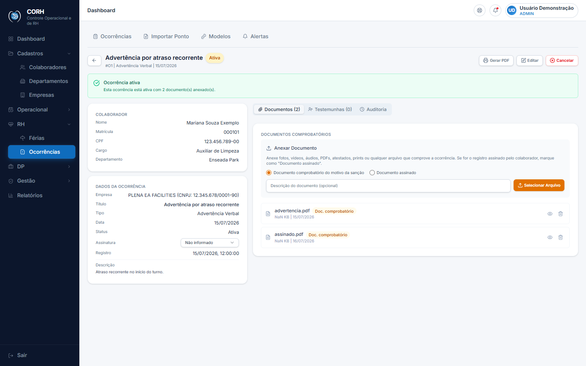
Tela: ocorrencia-detalhe (imagem com dados de exemplo)
Como fazer
Anexar um documento:
Abra a aba Documentos.
Em "Anexar Documento", marque o tipo: Documento comprobatório do motivo da sanção (atestado, foto, print, e-mail etc.) ou Documento assinado (o registro assinado pelo colaborador).
Se quiser, escreva uma descrição do documento.
Clique em Selecionar Arquivo e escolha o arquivo no seu computador. O envio começa na hora.
O documento aparece na lista com nome, etiqueta ("Doc. comprobatório" ou "Assinado"), tamanho e data. Vídeos e áudios podem ser reproduzidos direto na tela.
💡 DICA — são aceitos PDF, Word, Excel, TXT, imagens (JPG, PNG, GIF, WEBP), vídeos (MP4, MOV e outros) e áudios (MP3, WAV, OGG, AAC e outros). Limites: 10 MB para documentos e imagens, 100 MB para vídeos e 20 MB para áudios. Se o arquivo passar do limite ou for de um tipo não aceito, o sistema mostra um aviso vermelho.
Ativar uma ocorrência pendente:
Anexe os documentos exigidos (veja o quadro laranja para saber o que falta).
Clique no botão verde Ativar, no topo. Se ainda faltar documento, o botão fica desativado — passe o mouse sobre ele para ver o que falta.
O sistema mostra a mensagem verde "Ocorrência ativada com sucesso" e o quadro muda para verde.
⚠️ ATENÇÃO — regra de documentos para ativar — a maioria dos tipos que exigem anexo precisa de dois documentos: o comprobatório do motivo e o documento assinado pelo colaborador. A exceção são as ocorrências de atestado médico — Falta Justificada (atestado), Licença Médica (até 15 dias) e Licença Médica (acima 15 dias — INSS) — que precisam apenas do atestado anexado como documento comprobatório. O botão Ativar aparece para os perfis Administrador, Gestor, RH, DP1 e DP2.
Gerar o PDF da ocorrência:
Clique no botão Gerar PDF, no topo.
O sistema monta o documento com os dados da ocorrência, da empresa, dos anexos e das testemunhas, e baixa o arquivo no seu navegador.
Imprima para o colaborador assinar ou envie para assinatura eletrônica. Depois, anexe o documento assinado na aba Documentos.
💡 DICA — no cartão "Dados da Ocorrência", o campo Assinatura registra como o documento foi assinado: "Não informado", "Assinou em papel" ou "Enviado via Youk". Ao escolher, o sistema salva na hora e mostra "Forma de assinatura registrada".
Cadastrar uma testemunha:
Abra a aba Testemunhas e clique em Adicionar.
Preencha o nome (obrigatório) e, se souber, CPF, cargo e departamento.
Clique em Salvar Testemunha. Ela aparece na lista numerada.
Para remover, clique na lixeira ao lado do nome e confirme em Sim, excluir.
Consultar a auditoria:
Abra a aba Auditoria (aparece apenas para o perfil Gestor e o Administrador).
Veja o histórico de tudo o que aconteceu com a ocorrência: quando foi criada e cada mudança de status, com data e hora.
Cancelar uma ocorrência:
Clique no botão Cancelar, no topo (aparece enquanto a ocorrência está Pendente ou Ativa).
O sistema pergunta "Cancelar ocorrência?" e avisa que ela ficará no histórico como "Cancelada".
Clique em Confirmar cancelamento ou em Voltar para desistir. O sistema mostra "Ocorrência cancelada".
⚠️ ATENÇÃO — cancelar não apaga a ocorrência — ela continua no histórico. Em uma ocorrência cancelada, não é mais possível editar, anexar documentos nem cadastrar testemunhas.
Campos e botões
Seta de voltar: retorna à lista de ocorrências.
Gerar PDF: baixa o documento da ocorrência pronto para impressão e assinatura.
Editar: abre o formulário para corrigir os dados. Não aparece em ocorrências canceladas.
Ativar: transforma a ocorrência pendente em ativa, depois que os documentos exigidos foram anexados.
Cancelar: anula a ocorrência, que fica no histórico como "Cancelada".
Assinatura: campo no cartão de dados para registrar se o colaborador assinou em papel ou se o documento foi enviado via Youk.
Aba Documentos (N): lista os anexos, com o total entre parênteses. Cada anexo mostra nome, etiqueta de tipo, descrição, tamanho e data.
Olho (Abrir arquivo): abre o anexo em uma nova aba do navegador.
Lixeira do anexo: remove o arquivo de forma permanente, após confirmação.
Aba Testemunhas (N): lista as testemunhas numeradas, com cargo, departamento e CPF.
Adicionar: abre o formulário de nova testemunha.
Aba Auditoria: histórico de criação e mudanças de status da ocorrência (visível para Gestor e Administrador).
Modelos de Ocorrência
É a tela onde ficam os modelos de documento usados no cadastro de ocorrências. Cada modelo tem um nome, um tipo e um texto padrão. A lista aparece agrupada por tipo (Advertência Verbal, Advertência Escrita, Suspensão, Falta, Afastamento, Férias, e assim por diante), com a quantidade de modelos de cada grupo.
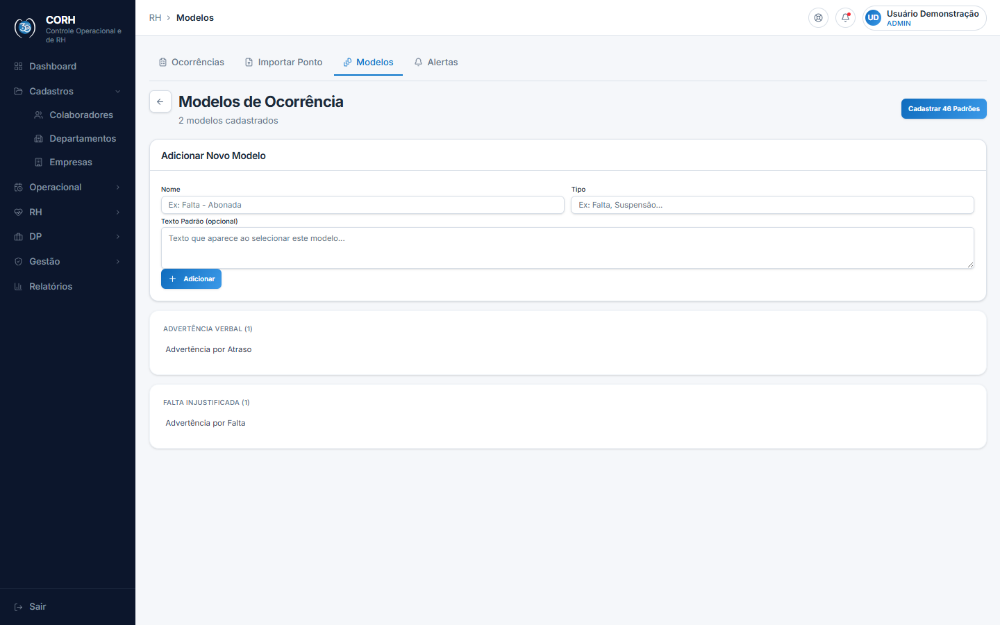
Tela: modelos (imagem com dados de exemplo)
Como fazer
Cadastrar os modelos padrão de uma vez:
Clique no botão Cadastrar 46 Padrões, no topo.
O sistema cadastra os 46 modelos padrão que ainda não existirem (atraso, advertência, suspensão, faltas de todos os tipos, afastamentos, férias, desligamento etc.) e mostra quantos foram cadastrados. Se já estiverem todos lá, ele avisa "Todos os modelos já estão cadastrados".
Adicionar um modelo personalizado:
No cartão "Adicionar Novo Modelo", preencha o Nome (ex.: "Falta - Abonada") e o Tipo (ex.: "Falta"). Os dois são obrigatórios.
Se quiser, escreva um Texto Padrão — o texto que aparece quando o modelo é usado. Se deixar em branco, o sistema usa um texto genérico com a data.
Clique em Adicionar. O sistema mostra a mensagem verde "Modelo adicionado" e o modelo entra na lista.
Excluir um modelo:
Passe o mouse sobre o modelo na lista e clique na lixeira que aparece à direita.
O sistema pergunta "Excluir modelo?" e avisa que a ação não pode ser desfeita.
Clique em Excluir para confirmar ou em Cancelar para desistir.
⚠️ ATENÇÃO — cadastrar, excluir e usar o botão de padrões só é possível para os perfis Administrador, Gestor, RH, DP1 e DP2. Os demais perfis apenas visualizam a lista.
Campos e botões
Cadastrar 46 Padrões: cria de uma vez todos os modelos padrão do sistema, sem duplicar os que já existem.
Nome: nome do modelo, como aparece na lista. Obrigatório.
Tipo: grupo do modelo (Falta, Suspensão, Afastamento etc.). Obrigatório — é o tipo que organiza os cartões da tela.
Texto Padrão (opcional): texto sugerido quando o modelo é usado.
Adicionar: salva o novo modelo.
Lixeira: exclui o modelo, após confirmação. Aparece ao passar o mouse sobre a linha.
Alertas
É a tela de avisos automáticos do RH. O sistema analisa as ocorrências e aponta situações que pedem atenção, sempre com base na legislação trabalhista: limite de suspensões, estabilidade do colaborador, faltas excessivas, prazo de defesa, ocorrências paradas como pendentes, progressão disciplinar e homologação necessária.
No topo, quatro cartões resumem a situação: Total de alertas, Críticos, Altos e Médios. Cada alerta da lista tem uma cor conforme a gravidade: vermelho (crítica), laranja (alta), âmbar (média) e azul (baixa).
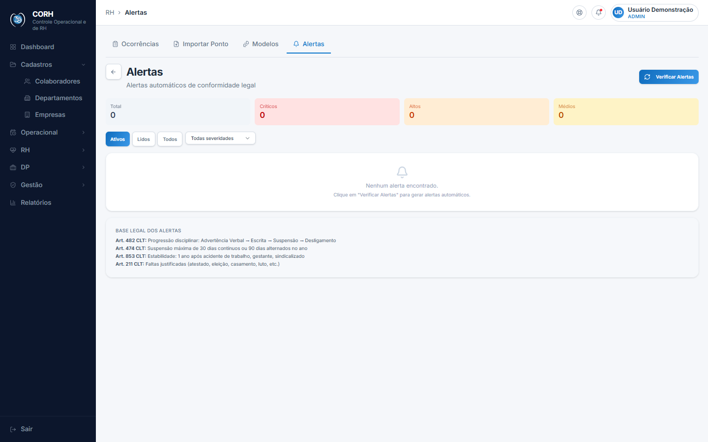
Tela: alertas (imagem com dados de exemplo)
Como fazer
Gerar os alertas:
Clique no botão Verificar Alertas, no topo. Enquanto o sistema analisa, o botão mostra "Analisando...".
Ao terminar, o sistema mostra quantos alertas novos foram gerados — ou avisa que não encontrou nenhum alerta novo.
Filtrar os alertas:
Use os botões Ativos, Lidos e Todos para escolher quais alertas ver. A tela abre mostrando os ativos.
Se quiser, refine pela gravidade na lista "Todas severidades" (Crítica, Alta, Média ou Baixa). O filtro vale na hora.
Tratar um alerta:
Leia o título e a descrição do alerta. Se houver data limite, ela aparece em "Vence:".
Se o alerta for sobre um colaborador, clique no link Ver colaborador para abrir a ficha dele.
Quando o alerta estiver resolvido ou apenas conferido, clique no ícone de check (Marcar como lido): ele sai da lista de ativos e passa para a aba Lidos.
Se o alerta não se aplica mais, clique no ícone de caixa (Arquivar): ele some da lista.
⚠️ ATENÇÃO — o botão Verificar Alertas, o "marcar como lido" e o "arquivar" aparecem para o Administrador e para o perfil DP1. Os demais perfis apenas visualizam os alertas.
Campos e botões
Verificar Alertas: faz o sistema analisar as ocorrências e gerar os alertas automáticos.
Selo vermelho no topo: mostra a quantidade de alertas críticos ativos, quando existe algum.
Cartões Total / Críticos / Altos / Médios: resumo numérico dos alertas.
Ativos / Lidos / Todos: filtra os alertas pela situação.
Todas severidades: filtra pela gravidade (Crítica, Alta, Média ou Baixa).
Cartão de alerta: mostra a gravidade, o tipo de alerta, a data de vencimento (quando houver), o título, a descrição e o link para o colaborador.
Check (Marcar como lido): move o alerta para a lista de lidos.
Caixa (Arquivar): arquiva o alerta, tirando-o da lista.
Base Legal dos Alertas: quadro no rodapé com os artigos da CLT usados nas análises (Art. 482 — progressão disciplinar; Art. 474 — limite de suspensão; Art. 853 — estabilidade; Art. 211 — faltas justificadas).
Dúvidas frequentes
Por que minha ocorrência ficou "Pendente"?
Porque o tipo escolhido exige documentos. Abra a ocorrência, anexe os documentos exigidos na aba Documentos e clique em Ativar. O quadro laranja sempre diz exatamente o que falta.
Quais documentos preciso anexar para ativar?
Em geral, dois: o documento comprobatório do motivo (atestado, foto, print etc.) e o documento assinado pelo colaborador. Exceção: as ocorrências de atestado médico (Falta Justificada, Licença Médica até 15 dias e Licença Médica acima de 15 dias — INSS) precisam só do atestado anexado.
O colaborador vê que a ocorrência está "Pendente"?
Não. "Pendente" é um controle interno do RH. O PDF gerado para assinatura não mostra essa situação.
Apaguei uma ocorrência por engano. Tem como recuperar?
Não — a exclusão é permanente e reservada ao Administrador. Se a ideia é só anular, prefira o botão Cancelar da tela de detalhe: a ocorrência fica guardada no histórico como "Cancelada".
Encontrei uma ocorrência que eu não cadastrei. De onde veio?
Provavelmente da importação de ponto: ao importar o espelho de ponto no módulo Adicionais, o sistema cria ocorrências automaticamente para faltas, atestados e afastamentos encontrados.
Capítulo 4 — CEU (Crachá, Equipamento e Uniforme)
O módulo CEU é onde você controla tudo o que a empresa entrega aos colaboradores: crachás, uniformes, equipamentos e EPIs (equipamentos de proteção individual). Com ele você registra entregas e devoluções, emite recibos para assinatura, acompanha o estoque e sabe exatamente o que está com cada pessoa. O módulo tem oito abas no topo da tela: Movimentações, Itens, Lançamento Rápido, Tamanhos, Relatórios, Fornecedores e Importar. Este capítulo explica cada uma delas.
---
Movimentações
É a tela principal do módulo. Ela mostra a lista de todas as entregas e devoluções registradas, agrupadas por colaborador e por data. Daqui você registra devoluções, emite recibos (um por um ou em lote) e exclui entregas lançadas por engano.
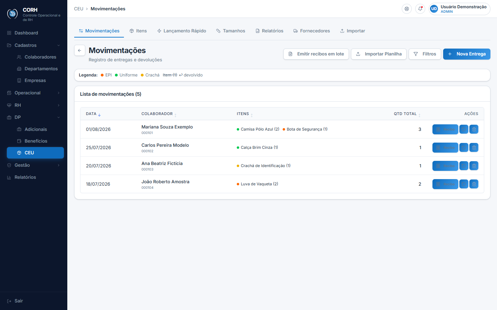
Tela: ceu-movimentacoes (imagem com dados de exemplo)
Acima da tabela há uma legenda de cores: laranja para EPI, verde para Uniforme, amarelo para Crachá, azul para Equipamento e cinza para outros tipos. Um item devolvido aparece riscado, com a data da devolução ao lado.
Como fazer
Filtrar a lista
Clique no botão Filtros, no topo da tela. O painel de filtros se abre.
Preencha o que quiser: nome ou matrícula do colaborador, período (data inicial e final), item, departamento ou status.
Clique em Aplicar. Nada muda na lista enquanto você não clicar em Aplicar (ou apertar Enter no campo de busca).
Para voltar a ver tudo, clique em Limpar.
💡 DICA — Se você mudou algum campo e esqueceu de aplicar, a tela mostra o aviso amarelo "Alterações não aplicadas". Enquanto houver filtros valendo, o botão Filtros mostra um selo azul com a quantidade de filtros ativos — assim você sabe que a lista está "cortada", mesmo com o painel fechado.
Registrar uma devolução
Na linha da entrega, clique no ícone de seta circular (a dica "Registrar devolução" aparece ao passar o mouse).
Na janela que abre, marque os itens que foram devolvidos.
Confira ou ajuste a data da devolução (ela já vem preenchida com o dia de hoje).
Clique em Confirmar. O sistema mostra a mensagem verde "Devolução registrada com sucesso" e o item passa a aparecer riscado na lista.
Emitir o recibo de uma entrega
Na linha da entrega, clique no botão Recibo.
O sistema gera o recibo e abre uma janela de visualização, já com o número do documento (ex.: REC-2026-00042).
Escolha a versão Colorido (Digital) ou P&B (Impressão) nas abas.
Clique em Baixar Colorido ou Baixar P&B. Um arquivo é baixado para o seu computador; abra-o no navegador e imprima para o colaborador assinar.
⚠️ ATENÇÃO — Depois que o recibo é emitido, a entrega não pode mais ser excluída — a lixeira fica desabilitada com a dica "Exclusão bloqueada: recibo já emitido". Recibo emitido é um documento definitivo.
💡 DICA — Se a entrega misturar EPI com uniforme/crachá, o sistema gera dois recibos separados, um para cada grupo, e mostra as abas "EPI" e "Uniforme/Crachá" na mesma janela. O CPF sai sempre no formato 000.000.000-00, e o recibo cabe sempre em uma única página A4.
Emitir recibos em lote
Clique em Emitir recibos em lote, no topo da tela.
Informe a Data início e a Data fim do período.
Clique em Gerar recibos. O sistema mostra a mensagem verde com a quantidade de recibos gerados e baixa um único arquivo com todos os recibos do período, agrupados por colaborador. Abra o arquivo no navegador e imprima de uma vez.
Se não houver nenhuma entrega no período, o sistema avisa: "Nenhuma entrega no período selecionado".
Excluir uma entrega lançada por engano
Na linha da entrega, clique no ícone de lixeira.
A janela "Remover entrega?" avisa que a ação não pode ser desfeita.
Clique em Excluir (botão vermelho). O sistema mostra a mensagem verde "Entrega removida com sucesso".
⚠️ ATENÇÃO — Só é possível excluir entregas que ainda não tiveram recibo emitido. Se o recibo já foi gerado, corrija o cadastro com o Administrador.
Campos e botões
Nova Entrega (botão azul): abre a tela de registro de entrega passo a passo. Aparece para Gestor, DP1, DP2, Mesa e Inspetoria, além do Administrador.
Emitir recibos em lote: gera todos os recibos de um período de uma só vez.
Importar Planilha: leva para a aba Importar. Aparece para Gestor, DP1 e DP2, além do Administrador.
Filtros: abre ou fecha o painel de filtros.
Busca (dentro dos filtros): procura por nome do colaborador ou matrícula.
Data inicial / Data final: limitam o período exibido.
Item: mostra só as entregas de um item específico.
Departamento: digite e escolha o departamento na lista de sugestões.
Status: opções Todos, Em aberto (ainda não devolvido) e Devolvido.
Aplicar: aplica os filtros escolhidos.
Limpar: zera todos os filtros.
Colunas da tabela: Data, Colaborador (com a matrícula embaixo), Itens (com a quantidade entre parênteses), Qtd Total e Ações. Clique no título de uma coluna para ordenar a lista por ela.
Recibo (por linha): gera e mostra o recibo da entrega.
Seta circular (por linha): registra devolução. Só aparece quando há item em aberto.
Lixeira (por linha): exclui a entrega. Aparece para Gestor, DP1 e DP2, além do Administrador — Mesa e Inspetoria não veem este botão.
Anterior / Próxima (no rodapé): navegam entre as páginas da lista, que mostra 50 entregas por vez e informa "Mostrando X a Y de N resultados".
💡 DICA — Quando a lista está vazia, a tela mostra "Nenhuma movimentação encontrada." — verifique se há algum filtro ativo esquecido.
---
Nova Entrega
É a tela de registro de entrega, organizada em três passos guiados: escolher o colaborador, escolher os itens e confirmar. Use-a quando quiser registrar a entrega de uma pessoa com calma, vendo o histórico dela na tela. Para lançar várias entregas de uma vez, prefira o Lançamento Rápido.
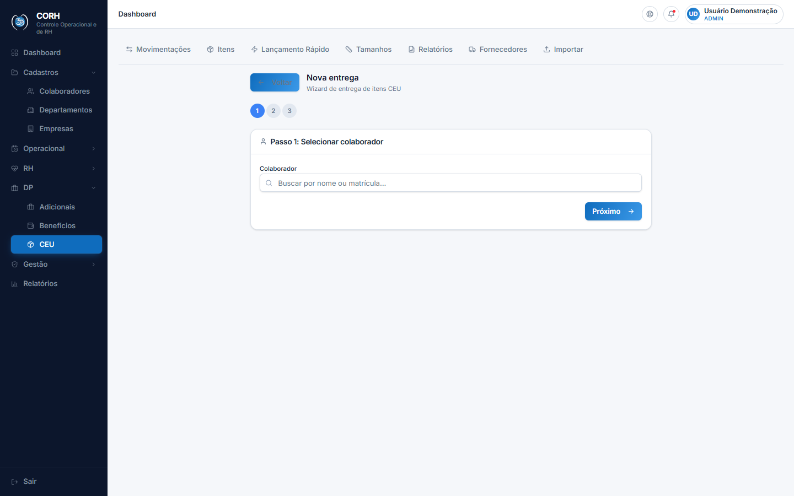
Tela: ceu-entrega-nova (imagem com dados de exemplo)
Como fazer
Na tela Movimentações, clique em Nova Entrega.
Passo 1 — Selecionar colaborador: digite o nome ou a matrícula no campo e escolha a pessoa na lista de sugestões. A tela mostra um cartão com os dados dela (matrícula, departamento, status, cargo e e-mail) e, embaixo, o histórico de tudo o que ela já recebeu. Clique em Próximo.
Passo 2 — Selecionar itens: marque a caixinha de cada item que será entregue. Se precisar, use a busca "Nome, código ou CA..." e os seletores de Tipo e Subgrupo para achar o item. Para cada item marcado, ajuste a Quantidade e a Situação. Clique em Próximo.
Passo 3 — Confirmar entrega: confira a Data da entrega (já vem com o dia de hoje, mas pode ser alterada) e escreva uma observação se quiser. Clique em Confirmar entrega.
O sistema mostra a mensagem verde "entrega(s) registrada(s) com sucesso" e abre a tela final de confirmação.
Na tela final, clique em Visualizar recibo para gerar o recibo na hora, ou em Ver entregas para voltar à lista de Movimentações.
💡 DICA — É prática operacional da empresa datar os recibos no dia 1º do mês, mesmo quando o documento é preparado antes. A própria tela lembra disso abaixo do campo de data: "Pode ser usada a data de 1º do mês, mesmo que o recibo seja preparado antes."
⚠️ ATENÇÃO — A Situação de cada item já vem preenchida como Troca, porque a maioria das entregas é de reposição. Mude para Novo apenas quando for o kit de admissão do colaborador. Essa escolha sai impressa no recibo.
⚠️ ATENÇÃO — Uma entrega registrada não pode ser editada. Se algo saiu errado, exclua a entrega na tela Movimentações e registre de novo (vale apenas antes de emitir o recibo).
Campos e botões
Voltar (seta no topo): retorna à tela Movimentações.
Colaborador (Passo 1): busca por nome ou matrícula; obrigatório. Só aparecem colaboradores ativos.
Buscar item (Passo 2): procura o item por nome, código ou número do CA.
Tipo (Grupo): filtra a lista por tipo de item (EPI, Uniforme, Crachá etc.).
Subgrupo: filtra dentro do tipo escolhido (as opções mudam conforme o Tipo).
Caixinha de seleção (por item): marca o item para a entrega. Desmarcar remove o item da seleção.
Quantidade (por item): quantas unidades serão entregues; começa em 1 e só fica editável depois de marcar o item.
Limpar filtros (Passo 2): zera a busca e os seletores de tipo e subgrupo.
Data da entrega (Passo 3): obrigatória; aceita qualquer data, inclusive 1º do mês.
Observação (Passo 3): campo livre, opcional (ex.: "Tamanho M, substituição..."). Vale para todos os itens do lote.
Próximo: avança de passo. Se faltar algo, o sistema avisa em vermelho: "Selecione um colaborador para continuar" ou "Selecione pelo menos um item".
Confirmar entrega: grava a entrega. Se algo falhar, o sistema avisa "Não foi possível registrar as entregas. Nada foi salvo — verifique e tente novamente." — nesse caso nada é gravado pela metade.
Ver entregas / Visualizar recibo (tela final): voltam à lista ou abrem o recibo para impressão.
💡 DICA — O alerta de estoque não impede a entrega. Se o item estiver zerado ou abaixo do estoque mínimo, a tela mostra avisos em vermelho ou laranja ("Sem estoque", "mín: N"), mas você pode seguir normalmente — é só uma informação.
---
Lançamento Rápido
É uma planilha de lançamento em massa, feita para registrar muitas entregas de uma vez — por exemplo, o dia de distribuição de uniformes para uma equipe inteira. Você preenche linha por linha e salva tudo com um único clique.
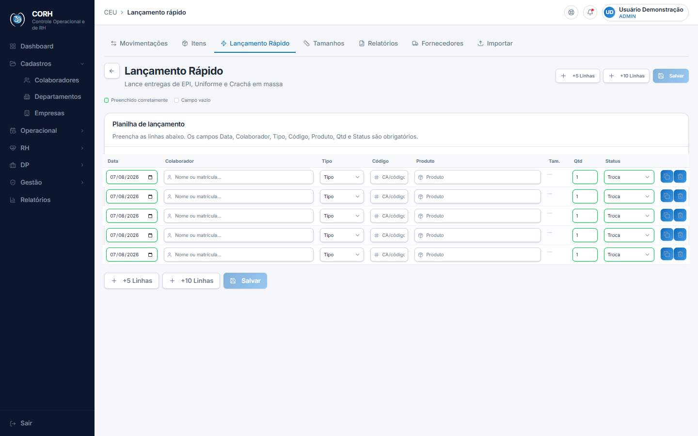
Tela: ceu-lancamento-rapido (imagem com dados de exemplo)
A grade já abre com 5 linhas em branco, com a data de hoje, quantidade 1 e Status "Troca" preenchidos. Uma legenda no topo explica as cores: verde significa campo preenchido corretamente e cinza, campo vazio.
Como fazer
Lançar várias entregas de uma vez
Na primeira linha, confira a Data e escolha o Colaborador: digite o nome ou a matrícula e selecione a pessoa na lista de sugestões (é preciso escolher da lista; texto digitado sem selecionar não vale).
Escolha o Tipo (EPI, Uniforme ou Crachá).
Informe o produto por um dos dois caminhos:
digite o código ou o número do CA no campo Código — o sistema localiza o item e preenche o Produto sozinho; ou
digite parte do nome no campo Produto e escolha o item na lista de sugestões.
Ajuste a Qtd e o Status, se preciso.
Aperte Enter no campo Qtd (ou clique no ícone de copiar da linha): uma nova linha é criada logo abaixo, já com a mesma data e o mesmo colaborador — basta informar o próximo item. Os campos repetidos ficam em azul para indicar que vieram da linha de cima.
Repita até lançar tudo. Se faltar linha, clique em +5 Linhas ou +10 Linhas.
Clique em Salvar. O sistema mostra a mensagem verde com a quantidade de entregas registradas e leva você de volta à tela Movimentações.
💡 DICA — Se alguma linha ficou incompleta, ela não é perdida: o sistema avisa "N linha(s) ficaram de fora (campos incompletos) — elas permanecem na tela" e mantém essas linhas na grade para você corrigir e salvar de novo.
💡 DICA — Tudo o que você digita fica guardado automaticamente no navegador. Se fechar a tela sem salvar, as linhas continuam lá quando você voltar. O rascunho só é apagado depois de um salvamento completo.
Sobre os tamanhos (coluna Tam.)
Quando você escolhe o colaborador e ele tem medidas cadastradas na aba Tamanhos, aparece abaixo do nome dele uma linha cinza com o resumo, por exemplo: "📏 Camisa M · Calça 42 · Calçado 40 · Luva G". Na coluna Tam., o sistema mostra a medida de referência daquele item:
Selo azul: o tamanho do item escolhido confere com o cadastro.
Selo vermelho em negrito: o item escolhido tem tamanho diferente do cadastro (ex.: o cadastro indica luva M, mas você escolheu o item "LUVA LATEX G"). Passe o mouse para ver o aviso completo.
⚠️ ATENÇÃO — O selo vermelho é só um alerta para você conferir antes de salvar — ele não bloqueia o lançamento. O tamanho é apenas uma referência visual e não é gravado na entrega nem impresso no recibo.
Campos e botões
Data (por linha): data da entrega; obrigatória. Já vem com o dia de hoje.
Colaborador (por linha): busca por nome ou matrícula; obrigatório; só sugere colaboradores ativos.
Tipo (por linha): EPI, Uniforme ou Crachá; obrigatório.
Código (por linha): aceita o código do item, o número do CA ou o código interno. Se não encontrar, o campo fica vermelho com o aviso "Código não encontrado no cadastro".
Produto (por linha): busca o item pelo nome, respeitando o Tipo escolhido; é preciso escolher da lista de sugestões.
Tam. (por linha): selo de referência com o tamanho do cadastro do colaborador (somente leitura).
Qtd (por linha): quantidade entregue; começa em 1.
Status (por linha): opções Troca, Novo, Substituição e Devolução. Padrão: Troca.
Ícone de copiar (por linha): cria uma nova linha abaixo repetindo data e colaborador (dica: "Repetir data e colaborador numa nova linha").
Ícone de lixeira (por linha): apaga a linha da grade, sem pedir confirmação.
+5 Linhas / +10 Linhas: acrescentam linhas em branco no fim da grade, repetindo a data e o status da última linha.
Salvar: grava todas as linhas completas. Fica desabilitado até existir pelo menos uma linha completa; se você tentar salvar sem nenhuma, o sistema avisa "Preencha pelo menos uma linha corretamente". Os mesmos botões aparecem no topo e no fim da página.
---
Itens
É o cadastro de tudo o que a empresa entrega: crachás, uniformes, EPIs e equipamentos. Aqui você vê a lista completa, com código, CA, validade, estoque e valor de cada item, e acessa o formulário de cadastro e edição.
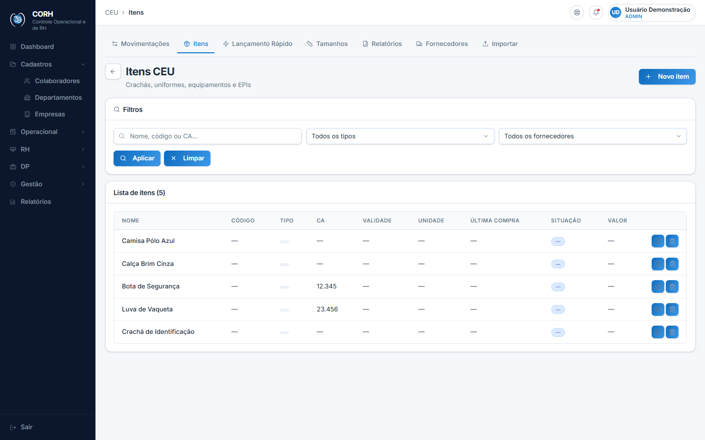
Tela: ceu-itens (imagem com dados de exemplo)
Como fazer
Encontrar um item
Use o campo de busca "Nome, código ou CA..." ou os seletores Tipo e Fornecedor.
Clique em Aplicar. Para recomeçar, clique em Limpar.
Cadastrar um item
Clique em Novo item, no canto superior direito.
Preencha o formulário (detalhado na próxima seção) e clique em Salvar item.
O sistema mostra a mensagem verde "Item criado com sucesso" e volta para a lista.
Editar um item
Na linha do item, clique no ícone de lápis.
Altere o que precisar e clique em Salvar item.
O sistema mostra a mensagem verde "Item atualizado com sucesso" e volta para a lista.
Excluir um item
Na linha do item, clique no ícone de lixeira.
A janela "Remover item?" avisa que a ação não pode ser desfeita.
Clique em Excluir. O sistema mostra a mensagem verde "Item removido com sucesso".
⚠️ ATENÇÃO — A exclusão é definitiva. Se o item apenas saiu de uso (parou de ser comprado, por exemplo), o mais seguro é editá-lo e mudar a Situação para Inativo — assim ele sai das telas de entrega, mas o histórico das entregas antigas continua intacto.
Campos e botões
Novo item: abre o formulário de cadastro. Aparece para Gestor, DP1 e DP2, além do Administrador.
Busca: procura por nome, código ou número do CA.
Tipo: filtra por Crachá, Uniforme ou EPI (opção padrão: Todos os tipos).
Fornecedor: filtra por um fornecedor cadastrado (opção padrão: Todos os fornecedores).
Aplicar / Limpar: aplicam ou zeram os filtros.
Colunas da tabela: Nome, Código, Tipo (selo colorido: amarelo para Crachá, verde para Uniforme, laranja para EPI), CA, Validade, Unidade, Última compra, Situação (selo azul "Ativo" ou vermelho "Inativo") e Valor.
Lápis (por linha): abre o item para edição.
Lixeira (por linha): exclui o item, com confirmação.
Quando a busca não encontra nada, a tela mostra "Nenhum item encontrado."
---
Novo item / Editar item
É o formulário de cadastro do item, usado tanto para criar quanto para editar. Os campos de CA (Certificado de Aprovação) só aparecem quando o tipo do item é EPI.
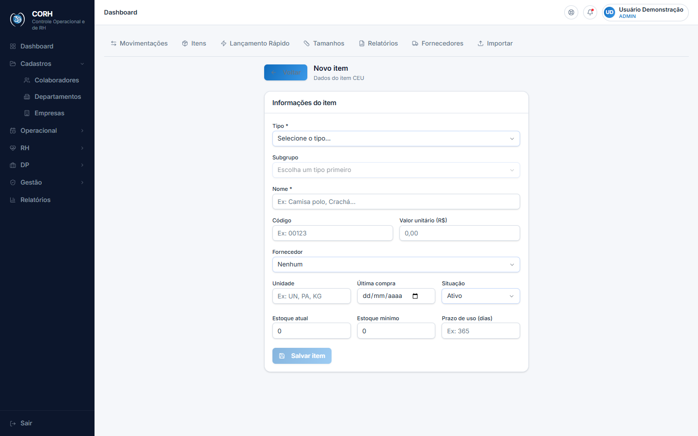
Tela: ceu-item-novo (imagem com dados de exemplo)
Como fazer
Na tela Itens, clique em Novo item (ou no lápis de um item existente).
Escolha o Tipo (obrigatório). Se quiser, escolha também o Subgrupo — as opções mudam conforme o tipo.
Preencha o Nome (obrigatório) e os demais campos que fizerem sentido.
Se o item for EPI, informe o Certificado de Aprovação (CA) e a Validade do CA.
Clique em Salvar item. O botão fica desabilitado enquanto Nome ou Tipo estiverem vazios; se tentar salvar sem eles, o sistema avisa "Preencha nome e tipo do item".
O sistema mostra a mensagem verde "Item criado com sucesso" (ou "Item atualizado com sucesso", na edição) e volta para a lista.
⚠️ ATENÇÃO — O CA e a validade só valem para EPI. Se você mudar o tipo de um item para algo diferente de EPI, esses dois campos são apagados ao salvar.
💡 DICA — O cadastro do item pode ser atualizado livremente — por exemplo, quando o fabricante troca o CA. Recibos já emitidos não mudam: cada recibo guarda o CA que o item tinha na data da entrega, mesmo que o cadastro mude depois. Isso vale para entregas futuras e passadas, sem que você precise fazer nada.
Campos e botões
Voltar: retorna à lista de itens (não há botão "Cancelar" — use o Voltar para sair sem gravar).
Tipo (obrigatório): Crachá, Uniforme ou EPI.
Subgrupo: opcional; fica travado até você escolher o tipo. Para EPI: Cabeça, Ocular, Auricular, Respiratória, Mãos, Pés, Vestimenta ou Facial. Para Uniforme: Vestuário Superior, Vestuário Inferior ou Acessórios. Para Crachá: Crachá.
Nome (obrigatório): como o item será chamado nas telas de entrega e nos recibos.
Código: código interno do item; usado na busca e no Lançamento Rápido.
Valor unitário (R$): valor de compra, digitado já no formato de moeda.
Fornecedor: escolha um fornecedor cadastrado na aba Fornecedores, ou deixe "Nenhum".
Unidade: unidade de medida livre (ex.: UN, PA, KG).
Última compra: data da última compra do item.
Situação: Ativo (padrão) ou Inativo. Itens inativos somem das telas de entrega.
Estoque atual: quantidade em estoque; alimenta o relatório de controle de estoque.
Estoque mínimo: limite de alerta; quando o estoque atual chega nele ou abaixo, o item aparece no relatório de estoque e nos avisos da tela de entrega.
Prazo de uso (dias): tempo de vida do item após a entrega; alimenta o alerta de "prazo de troca" nos relatórios.
Certificado de Aprovação (CA) (só para EPI): número do CA impresso no recibo.
Validade do CA (só para EPI): data de vencimento do certificado; alimenta o alerta de vencimento nos relatórios.
Salvar item: grava o cadastro e volta para a lista.
Não existe campo de tamanho no item: as medidas são de cada colaborador e ficam na aba Tamanhos.
---
Tamanhos
É o cadastro das medidas de uniforme e EPI de cada colaborador: camisa, calça, calçado e luva. O que você registra aqui aparece como referência no Lançamento Rápido, ajudando a escolher o item certo na hora da entrega.
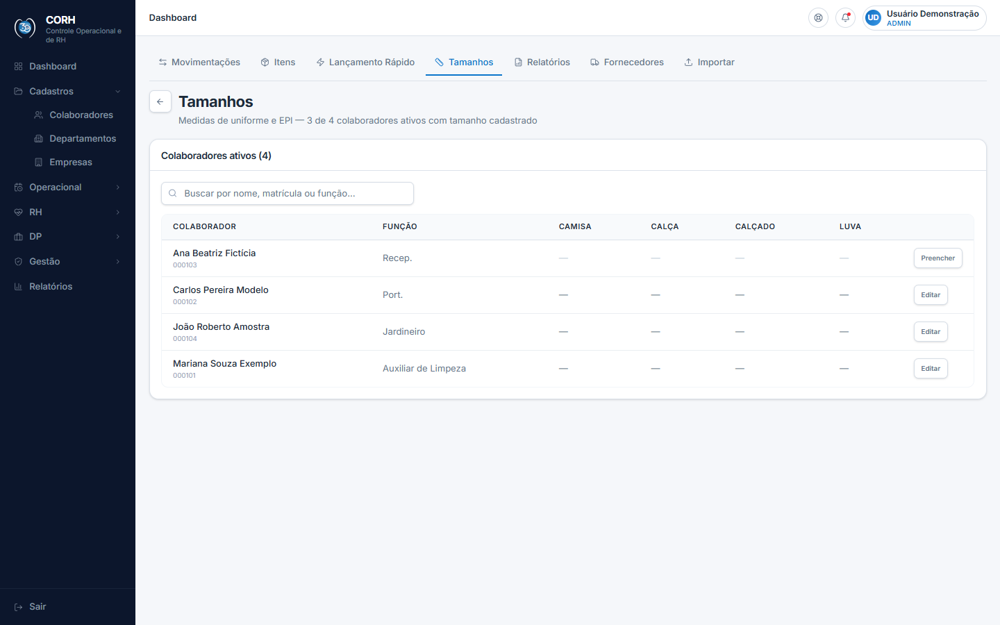
Tela: ceu-tamanhos (imagem com dados de exemplo)
A tela lista todos os colaboradores ativos em ordem alfabética — inclusive os que ainda não têm nenhuma medida, justamente para você completar o cadastro. A descrição no topo mostra quantos já têm tamanho cadastrado (ex.: "Medidas de uniforme e EPI — 162 de 314 colaboradores ativos com tamanho cadastrado").
Como fazer
Cadastrar ou corrigir as medidas de um colaborador
Se precisar, localize a pessoa no campo de busca "Buscar por nome, matrícula ou função...".
Na linha do colaborador, clique em Preencher (quando ainda não há medida) ou Editar (quando já existe).
Um cartão de edição abre no topo da página, com o título "Tamanhos de <nome do colaborador>".
Preencha os campos Camisa, Calça, Calçado e Luva. Deixar um campo em branco apaga aquela medida.
Clique em Salvar tamanhos. O sistema mostra a mensagem verde "Tamanhos de <nome> salvos" e o cartão se fecha.
Para sair sem gravar, clique em Cancelar.
Campos e botões
Busca: filtra por nome, matrícula, cargo completo ou abreviação da função (buscar "ASG", por exemplo, encontra os auxiliares de serviços gerais). A busca fica guardada quando você sai da tela; para zerá-la, clique em Limpar no selo "1 filtro ativo".
Colunas da tabela: Colaborador (com a matrícula embaixo), Função (abreviada — passe o mouse para ver o cargo completo), Camisa, Calça, Calçado e Luva. Campos sem cadastro mostram "—".
Preencher / Editar (por linha): abrem o cartão de edição das medidas.
Camisa / Calça / Calçado / Luva (no cartão de edição): campos livres, com exemplos no próprio campo ("Ex.: M, G, GG"; "Ex.: 40, 42"; "Ex.: P, M, G, XG").
Salvar tamanhos: grava as medidas.
Cancelar: fecha o cartão sem gravar.
Os botões de edição aparecem para Gestor, DP1, DP2, Mesa e Inspetoria, além do Administrador. Os demais perfis veem a lista, mas não podem alterar.
💡 DICA — As medidas são apenas uma referência visual. Elas não são gravadas nas entregas nem impressas nos recibos — servem para orientar quem lança e acender o alerta vermelho de divergência no Lançamento Rápido.
---
Fornecedores
É o cadastro dos fornecedores dos itens de CEU. Tudo acontece na mesma tela: o formulário fica no topo e a lista, embaixo.
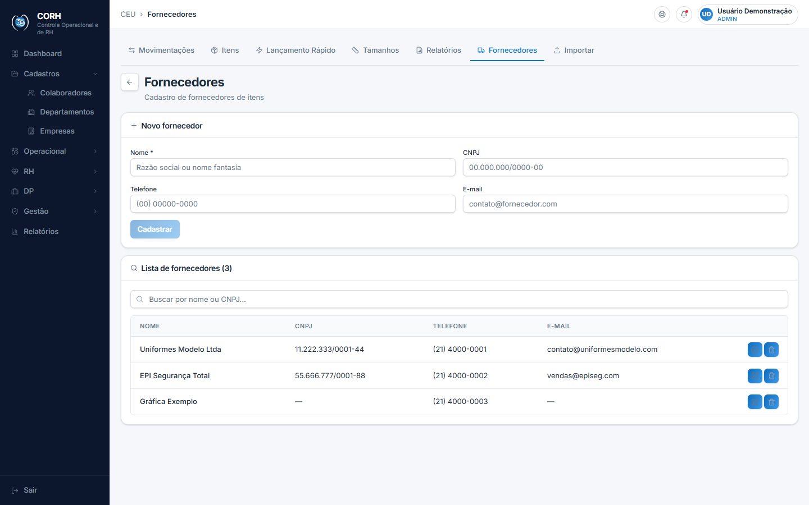
Tela: ceu-fornecedores (imagem com dados de exemplo)
Como fazer
Cadastrar um fornecedor
Preencha o Nome (obrigatório) e, se quiser, CNPJ, telefone e e-mail.
Clique em Cadastrar. O sistema mostra a mensagem verde "Fornecedor criado com sucesso" e o fornecedor aparece na lista.
Editar um fornecedor
Na linha do fornecedor, clique no ícone de lápis. Os dados sobem para o formulário, que passa a se chamar "Editar fornecedor".
Altere o que precisar e clique em Atualizar. O sistema mostra a mensagem verde "Fornecedor atualizado com sucesso".
Para desistir da edição, clique em Cancelar — o formulário volta ao modo de cadastro.
Excluir um fornecedor
Na linha do fornecedor, clique no ícone de lixeira.
A janela "Remover fornecedor?" avisa que a ação não pode ser desfeita.
Clique em Excluir. O sistema mostra a mensagem verde "Fornecedor removido com sucesso".
Encontrar um fornecedor
Digite no campo "Buscar por nome ou CNPJ..." — a lista se filtra sozinha a cada letra digitada, sem precisar de botão.
Campos e botões
Nome (obrigatório): razão social ou nome fantasia.
CNPJ: digite com a pontuação (00.000.000/0000-00).
Telefone: a formatação (00) 00000-0000 é aplicada automaticamente enquanto você digita.
E-mail: e-mail de contato do fornecedor.
Cadastrar / Atualizar: grava o fornecedor (o rótulo muda conforme o modo).
Cancelar: aparece só durante uma edição; limpa o formulário.
Lápis (por linha): carrega o fornecedor no formulário para edição.
Lixeira (por linha): exclui o fornecedor, com confirmação. A exclusão é definitiva.
Colunas da lista: Nome, CNPJ, Telefone e E-mail (campos vazios mostram "—").
O formulário e os botões de ação aparecem para Gestor, DP1 e DP2, além do Administrador. Os demais perfis só veem a lista.
---
Relatórios
Reúne cinco visões diferentes das movimentações e do estoque, para análise e acompanhamento. Todas respeitam os filtros aplicados no topo da tela, e todas podem ser exportadas para planilha.
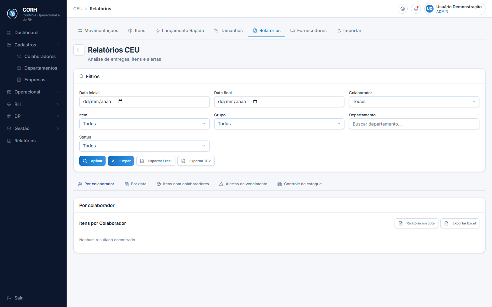
Tela: ceu-relatorios (imagem com dados de exemplo)
Como fazer
Gerar um relatório
No cartão Filtros, preencha o que quiser: período, colaborador, item, grupo, departamento ou status.
Clique em Aplicar. Nada muda enquanto você não clicar em Aplicar — se esquecer, o aviso amarelo "Alterações não aplicadas" aparece.
Clique na aba do relatório desejado:
Por colaborador: tudo o que cada pessoa recebeu, agrupado por colaborador, com o botão Gerar Recibo em cada bloco para reemitir os recibos daquela pessoa.
Por data: as entregas em ordem de data.
Itens com colaboradores: mostra quem está com cada item em aberto (ainda não devolvido) — útil para saber onde está cada equipamento.
Alertas de vencimento: duas listas — os CAs de EPI vencidos ou vencendo em até 30 dias, e os colaboradores com itens chegando ao fim do prazo de troca.
Controle de estoque: os itens que atingiram ou ficaram abaixo do estoque mínimo, do mais crítico ao menos crítico.
Exportar para planilha
Aplique os filtros e abra a aba desejada.
Clique em Exportar Excel (arquivo .xlsx) ou Exportar TSV (arquivo de texto que também abre no Excel).
O arquivo é baixado para o seu computador com as colunas da aba aberta e os dados filtrados.
Gerar os recibos de todo o relatório de uma vez
Na aba Por colaborador, aplique os filtros desejados.
Clique em Relatório em Lote.
O sistema mostra a mensagem verde com a quantidade de recibos gerados e baixa um único arquivo com todos os recibos, pronto para imprimir e colher assinaturas.
💡 DICA — Apesar do nome, o "Relatório em Lote" não gera uma planilha — ele gera os recibos de entrega para impressão, um por colaborador, dentro dos filtros aplicados.
Campos e botões
Data inicial / Data final: limitam o período analisado.
Colaborador: restringe a uma pessoa (padrão: Todos).
Item: restringe a um item (só aparecem itens que tiveram movimentação).
Grupo: filtra pelo tipo do item (EPI, Uniforme, Crachá etc.).
Departamento: digite e escolha o departamento na lista de sugestões.
Status: Todos, Em aberto ou Devolvido.
Aplicar / Limpar: aplicam ou zeram os filtros. Os filtros ficam guardados quando você sai da tela.
Exportar Excel / Exportar TSV: baixam os dados da aba aberta, com os filtros aplicados.
Relatório em Lote (aba Por colaborador): gera os recibos de todas as entregas filtradas em um único arquivo.
Gerar Recibo (em cada bloco de colaborador, aba Por colaborador): abre a janela de recibo daquela pessoa, com as versões colorida e P&B.
Nas tabelas, a coluna Status mostra o selo "Devolvido" ou "Em aberto"; nos alertas, os selos são "Vencido" e "Próximo do vencimento" (ou "Próximo da troca").
Se a consulta não encontrar nada, cada aba mostra seu próprio aviso (ex.: "Nenhum resultado encontrado.", "Nenhum item abaixo do estoque mínimo.").
---
Importar
Serve para cadastrar ou atualizar itens e fornecedores em massa, a partir de uma planilha, em vez de digitar um por um.
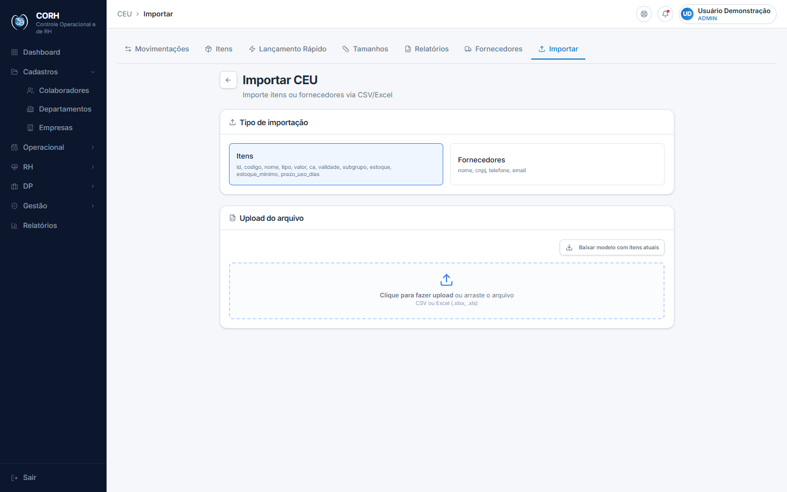
Tela: ceu-importar (imagem com dados de exemplo)
Como fazer
Importar itens
No cartão Tipo de importação, clique em Itens. A tela mostra as colunas que a planilha deve ter: id, codigo, nome, tipo, valor, ca, validade, subgrupo, estoque, estoque_minimo e prazo_uso_dias.
Se você quer alterar itens já cadastrados, clique primeiro em Baixar modelo com itens atuais: o sistema baixa uma planilha pronta com todos os itens. Edite nela e importe de volta — assim o sistema atualiza os itens em vez de criar duplicados.
Clique na área de upload (ou arraste o arquivo para ela) e escolha a planilha. São aceitos arquivos CSV e Excel (.xlsx, .xls); no Excel, apenas a primeira aba da planilha é lida.
Confira o Preview: a tela mostra quantas linhas estão válidas e quantas inválidas, com o motivo do erro em cada linha (ex.: "Nome obrigatório", "Tipo obrigatório"). Linhas inválidas ficam com fundo vermelho.
Clique em Importar válidos. Só as linhas válidas entram; as inválidas são ignoradas.
Ao final, o sistema mostra a mensagem verde com o total: "N registro(s) importado(s) com sucesso".
Para desistir, clique em Cancelar ou no X ao lado do nome do arquivo.
Importar fornecedores
No cartão Tipo de importação, clique em Fornecedores. Colunas da planilha: nome, cnpj, telefone e email.
Escolha o arquivo, confira o preview e clique em Importar válidos.
⚠️ ATENÇÃO — A importação de fornecedores sempre cria novos cadastros — ela não verifica duplicidade. Se você importar o mesmo arquivo duas vezes, os fornecedores ficarão duplicados.
💡 DICA — Para itens, a regra é diferente: se a linha tiver o id de um item existente ou um código igual ao de um item já cadastrado, o item é atualizado. Por isso o caminho seguro para alterações em massa é sempre: baixar o modelo, editar, importar de volta.
Campos e botões
Itens / Fornecedores (cartões do Passo 1): escolhem o tipo de importação. Trocar de tipo descarta o arquivo e o preview.
Baixar modelo com itens atuais (só no tipo Itens): baixa a planilha-modelo preenchida com os itens cadastrados. Fica desabilitado se ainda não houver nenhum item.
Área de upload ("Clique para fazer upload ou arraste o arquivo"): recebe arquivos CSV ou Excel (.xlsx, .xls).
X (ao lado do nome do arquivo): remove o arquivo escolhido.
Preview: tabela de conferência com o selo "Válido" ou "Inválido" em cada linha e a coluna Erros explicando o problema.
Cancelar: descarta o arquivo e o preview.
Importar válidos: executa a importação das linhas válidas (fica desabilitado se não houver nenhuma; se o arquivo estiver vazio ou ilegível, o sistema avisa "Arquivo vazio ou formato inválido").
O acesso à importação aparece para Gestor, DP1 e DP2, além do Administrador.
---
Dúvidas frequentes
Registrei uma entrega errada. Como corrijo?
Na tela Movimentações, clique na lixeira da entrega e confirme — depois registre novamente. Atenção: isso só funciona antes de o recibo ser emitido. Se o recibo já foi gerado, a exclusão fica bloqueada e você deve pedir ajuda ao Administrador.
O fabricante mudou o CA de um EPI. Os recibos antigos ficam errados?
Não. Cada recibo guarda o CA que o item tinha na data da entrega. Você pode atualizar o cadastro do item normalmente: as entregas futuras sairão com o CA novo, e os recibos antigos continuam mostrando o CA da época.
Por que o selo de tamanho ficou vermelho no Lançamento Rápido?
Porque o item escolhido tem tamanho diferente do cadastrado na aba Tamanhos (ex.: cadastro indica luva M e o item é G). É só um alerta para você conferir — o lançamento não é bloqueado. Se estiver certo mesmo, pode salvar; se a medida mudou, atualize a aba Tamanhos.
Posso datar o recibo no dia 1º do mês?
Sim. É a prática operacional da empresa: o campo "Data da entrega" é livre, e a própria tela de Nova Entrega lembra que a data de 1º do mês pode ser usada mesmo que o recibo seja preparado antes.
Como imprimir os recibos de um mês inteiro de uma vez?
Na tela Movimentações, clique em Emitir recibos em lote, informe o período e clique em Gerar recibos. O sistema baixa um único arquivo com todos os recibos agrupados por colaborador; abra o arquivo no navegador e imprima. O mesmo resultado pode ser obtido na aba Relatórios, botão Relatório em Lote, respeitando os filtros aplicados.
Capítulo 5 — Adicionais (Insalubridade, Periculosidade e Jornada)
O módulo Adicionais calcula quantos dias de insalubridade, periculosidade, adicional noturno, intrajornada (hora extra) e feriado cada colaborador tem direito no mês. Ele funciona em três passos: você cadastra os contratos (o que foi combinado com o cliente), liga os colaboradores a esses contratos (vínculos) e confere dia a dia quem trabalhou, faltou ou foi substituído (calendário). No fim, o relatório mostra o total de dias de cada adicional, pronto para enviar ao financeiro.
Quase todo o preenchimento do calendário é automático: basta importar o espelho de ponto em PDF do Flit na tela Importar Ponto. O mesmo arquivo também lança as ocorrências de faltas e atestados no módulo de Ocorrências.
O módulo tem seis abas, visíveis no topo de todas as telas: Contratos, Vínculos, Calendário, Feriados, Relatório e Importar Ponto.
💡 DICA — a ordem certa de trabalho é: 1) cadastrar o contrato, 2) criar os vínculos, 3) importar o ponto, 4) conferir o calendário e definir os substitutos, 5) tirar o relatório.
Contratos
É a tela onde você cadastra cada contrato de trabalho que tem adicional combinado (por exemplo, "Limpeza no Condomínio Solar"). Aqui você diz qual é o departamento, quantas pessoas o contrato prevê, qual é a escala (12x36, 6x1 etc.) e quais adicionais o contrato paga.
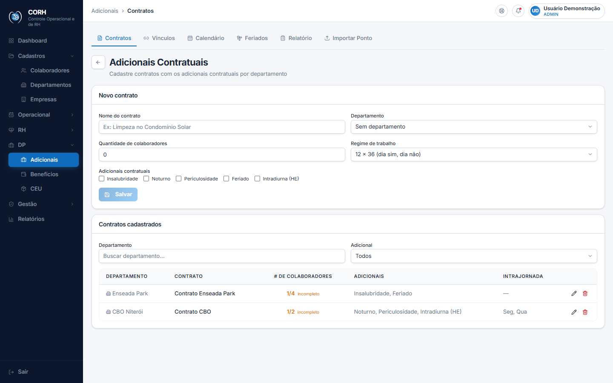
Tela: adicionais-contratos (imagem com dados de exemplo)
Como fazer
Cadastrar um contrato:
No cartão "Novo contrato", escreva o Nome do contrato.
Escolha o Departamento na lista (ou deixe "Sem departamento").
Informe a Quantidade de colaboradores prevista no contrato.
Escolha o Regime de trabalho.
Marque os Adicionais contratuais que o contrato paga. Se marcar "Intradiurna (HE)", aparece a lista de Dias de intrajornada — marque os dias da semana em que trabalhar gera a hora extra.
Clique em Salvar. O contrato aparece na lista "Contratos cadastrados".
Editar um contrato:
Na lista, clique no lápis do contrato.
O cartão do topo muda para "Editar contrato", já preenchido.
Altere o que precisar e clique em Atualizar. Para desistir, clique em Cancelar.
Excluir um contrato:
Clique na lixeira vermelha do contrato.
O sistema pergunta "Excluir contrato?" e avisa que a ação não pode ser desfeita.
Clique em Excluir para confirmar, ou em Cancelar.
Ver quem está vinculado ao contrato:
Na coluna "# de colaboradores", clique no número (por exemplo, 3/4).
Abre a janela "Colaboradores vinculados", com nome, período e matrícula de cada pessoa.
Clique em Fechar para sair.
Encontrar um contrato na lista:
Use o filtro Departamento para ver só os contratos de um departamento.
Use o filtro Adicional para ver só os contratos que pagam determinado adicional.
A lista se ajusta sozinha, assim que você escolhe o filtro.
Campos e botões
Nome do contrato: nome que identifica o contrato nas outras telas. Obrigatório — sem ele, o botão Salvar fica desabilitado.
Departamento: departamento ao qual o contrato pertence. Pode ficar "Sem departamento".
Quantidade de colaboradores: quantas pessoas o contrato prevê. Serve de conferência: na lista, o sistema compara com os vínculos criados.
Regime de trabalho: a escala do contrato. Opções: "12 × 36 (dia sim, dia não)", "6 × 1 (6 trabalhados, 1 folga)", "5 × 2 (seg a sex)" e "Personalizado (preencher dia a dia)". É ela que monta o calendário automaticamente.
Adicionais contratuais: caixas de marcação para Insalubridade, Noturno, Periculosidade, Feriado e Intradiurna (HE).
Dias de intrajornada: aparece só quando "Intradiurna (HE)" está marcada. São os dias da semana (Seg a Dom) e a opção "Feriado" em que trabalhar gera o adicional de intrajornada.
Salvar / Atualizar: grava o contrato. "Atualizar" aparece quando você está editando.
Cancelar: abandona a edição e limpa o cartão.
Filtro Departamento: campo de busca de departamento acima da lista.
Filtro Adicional: mostra só contratos que pagam o adicional escolhido (Noturno, Periculosidade, Insalubridade, Intrajornada ou Feriado).
Coluna "# de colaboradores": mostra vinculados/previstos (ex.: 3/4). Fica amarela com a palavra "incompleto" quando faltam vínculos. Clique no número para ver quem está vinculado.
Lápis: edita o contrato.
Lixeira vermelha: exclui o contrato (pede confirmação).
⚠️ ATENÇÃO — o cartão "Novo contrato" e os botões de editar e excluir só aparecem para os perfis Administrador, Gestor, DP2, Mesa e Financeiro. Os demais perfis apenas veem a lista.
Vínculos
Vínculo é a ligação entre um colaborador e um contrato, com data de início e fim. É o vínculo que faz o colaborador aparecer no Calendário e no Relatório: sem vínculo, a importação de ponto não grava os dias dele no calendário (só as ocorrências). O vínculo novo herda automaticamente os adicionais marcados no contrato.
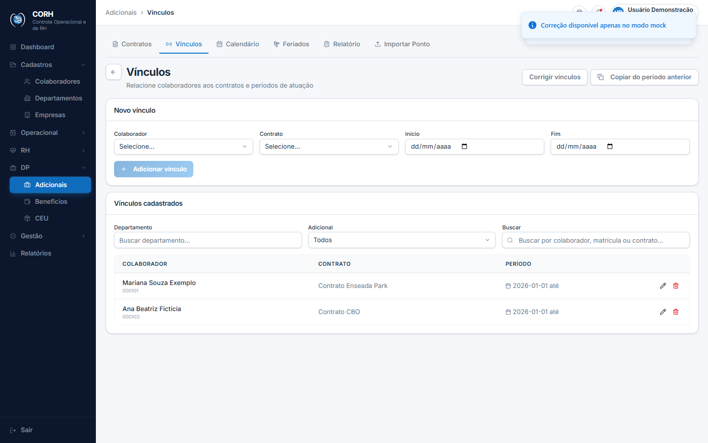
Tela: adicionais-vinculos (imagem com dados de exemplo)
Como fazer
Criar um vínculo:
No cartão "Novo vínculo", escolha o Colaborador (a lista mostra nome e matrícula).
Escolha o Contrato.
Preencha Início e Fim do período de atuação.
Clique em Adicionar vínculo. Ele aparece na lista abaixo.
Editar um vínculo:
Clique no lápis do vínculo.
Na janela "Editar vínculo" você pode trocar o contrato, ligar ou desligar adicionais só para aquela pessoa (caixas "Adicionais deste vínculo") e mudar as datas.
Clique em Salvar. Para desistir, clique em Cancelar.
Excluir um vínculo:
Clique na lixeira vermelha do vínculo.
O sistema avisa que o histórico de calendário daquele vínculo também será removido.
Clique em Excluir para confirmar, ou em Cancelar.
Copiar os vínculos para o mês seguinte:
Clique em Copiar do período anterior, no topo da tela.
O sistema explica que vai criar, no mês seguinte, vínculos iguais aos que estão ativos no mês atual — empurrando as datas um mês para frente. Vínculos que já existirem no destino são ignorados (não duplica).
Clique em Confirmar cópia. Durante o processo o botão mostra "Copiando...".
Corrigir vínculos antigos:
Clique em Corrigir vínculos, no topo da tela.
O sistema preenche automaticamente nome, matrícula e adicionais em vínculos antigos que foram gravados sem essas informações.
Encontrar um vínculo na lista:
Use os filtros Departamento e Adicional, ou digite no campo Buscar (aceita nome do colaborador, matrícula ou nome do contrato).
A lista se ajusta sozinha enquanto você digita.
Campos e botões
Colaborador: pessoa que será ligada ao contrato. A lista mostra nome e matrícula, em ordem alfabética.
Contrato: contrato ao qual a pessoa será ligada.
Início / Fim: período de atuação no contrato. Só os dias dentro desse período entram no calendário.
Adicionar vínculo: grava o vínculo. Fica desabilitado até preencher tudo.
Corrigir vínculos: botão do topo que conserta vínculos antigos gravados sem nome, matrícula ou adicionais.
Copiar do período anterior: botão do topo que replica os vínculos ativos para o mês seguinte.
Filtro Departamento: mostra só vínculos de contratos daquele departamento.
Filtro Adicional: mostra só vínculos que têm o adicional escolhido.
Buscar: procura por nome do colaborador, matrícula ou nome do contrato.
Lápis: abre a janela de edição (contrato, adicionais da pessoa e datas).
Lixeira vermelha: exclui o vínculo e o calendário dele (pede confirmação).
⚠️ ATENÇÃO — excluir um vínculo apaga também todos os dias já lançados para ele no Calendário. Se a pessoa continua no contrato e só mudou o período, prefira editar as datas.
💡 DICA — o cartão "Novo vínculo", o botão de salvar na edição e os botões "Corrigir vínculos" e "Copiar do período anterior" só aparecem para os perfis Administrador, DP1, DP2 e Mesa.
Calendário
É a tela principal do módulo. Aqui você vê, para cada colaborador vinculado, uma fileira de quadradinhos — um para cada dia do período — com a situação daquele dia: trabalhou, faltou, férias, afastado ou folga. É aqui também que você indica quem substituiu quem faltou ou saiu de férias, porque isso muda o cálculo dos adicionais.
O período exibido não é o mês fechado: vai do dia 20 de um mês ao dia 19 do seguinte (o período de apuração da folha). Use as setas "Período anterior" e "Próximo período" para navegar.
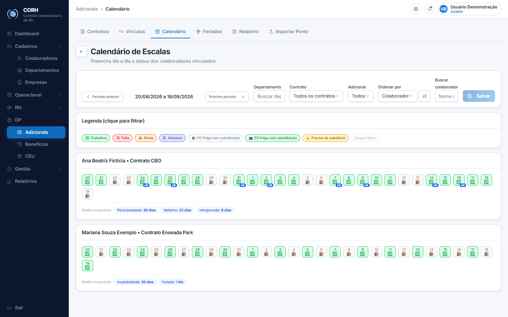
Tela: adicionais-calendario (imagem com dados de exemplo)
Como fazer
Mudar o status de um dia:
Encontre o cartão do colaborador (use os filtros ou a busca, se precisar).
Clique no quadradinho do dia.
Na janela "Alterar status do dia", clique na situação certa: ✅ Trabalhou, ❌ Falta, 🏖️ Férias, 🏥 Afastado, 🏠 FO Folga sem substituição ou 👥 FS Folga com substituição.
O sistema mostra o aviso "Status alterado... Clique em Salvar para confirmar" e o dia fica com borda amarela (alteração pendente).
Repita para os demais dias e, no fim, clique no botão Salvar no topo da tela. Ele mostra entre parênteses quantas alterações serão gravadas.
⚠️ ATENÇÃO — as mudanças de status só são gravadas quando você clica em Salvar. Se sair da tela antes, elas se perdem.
Definir o substituto de um dia:
Dias de falta, férias, afastamento ou folga com substituição ficam pulsando com um selo amarelo — é o sistema pedindo o substituto. Eles também aparecem no cartão "Substituições pendentes", no topo.
Clique no selo amarelo do dia (ou no próprio dia e escolha "FS Folga com substituição", que já abre a janela).
Na janela "Adicionar substituto", digite o nome ou a matrícula no campo de busca.
Clique na pessoa na lista (ela mostra nome, matrícula e departamento).
Clique em Confirmar substituição. O dia ganha um selo verde de substituto definido.
Definir o substituto de vários dias de uma vez (ideal para férias):
No cartão do colaborador que tem dias pendentes, clique em Definir substituto (N dias).
A janela já mostra todos os dias pendentes marcados. Clique em um dia para tirá-lo da lista, se preciso.
Busque e escolha o substituto.
Clique em Confirmar (N dias). O sistema mostra a mensagem verde "Fulano definido como substituto em N dia(s)".
Dispensar o substituto de um dia (ninguém cobriu mesmo):
Abra a janela "Adicionar substituto" do dia.
Clique em Ignorar. O alerta amarelo daquele dia some.
Apagar o lançamento de um dia:
Clique no dia e, na janela de status, clique em Remover lançamento.
Confirme em Sim, excluir. O dia volta ao padrão da escala.
Filtrar o que aparece na tela:
Use os filtros Departamento, Contrato, Adicional e Buscar colaborador (nome ou matrícula).
Na "Legenda (clique para filtrar)", clique num status para ver só os cartões que têm aquele tipo de dia — por exemplo, clique em "⚠️ Precisa de substituto" para ver só quem está pendente.
Clique em Limpar filtros para voltar a ver tudo.
Campos e botões
Período anterior / Próximo período: setas que mudam o período exibido (sempre de dia 20 a dia 19).
Departamento: filtra os cartões por departamento.
Contrato: filtra os cartões por contrato.
Adicional: mostra só vínculos com o adicional escolhido. Também faz o resumo "Direito no período" mostrar apenas esse adicional.
Ordenar por: organiza os cartões por Colaborador, Departamento ou Adicional. A setinha ao lado inverte a ordem (A → Z ou Z → A).
Buscar colaborador: procura por nome ou matrícula.
Salvar: grava todas as alterações pendentes. Mostra o número de alterações entre parênteses e fica com um anel amarelo enquanto há o que salvar.
Legenda (clique para filtrar): botões coloridos de cada status. Clicar filtra os cartões; clicar de novo desfaz.
⚠️ Precisa de substituto: filtro especial que mostra só os vínculos com dias sem substituto definido.
Quadradinho do dia: mostra o número do dia e um emoji (✅ trabalhou, ❌ falta, 🏖️ férias, 🏥 afastado, 🏠 folga, 👥 folga com substituição). Passe o mouse para ver a explicação. Borda amarela = alteração ainda não salva; borda tracejada cinza = dia não preenchido (vale o padrão da escala).
Selo verde no canto do dia: há substituto definido (ou a pessoa está substituindo alguém nesse dia).
Selo amarelo no canto do dia: falta definir o substituto. Clique nele para abrir a janela.
Selo azul "HE": naquele dia, trabalhar gera o adicional de intrajornada (hora extra), conforme os dias configurados no contrato.
Definir substituto (N dias): botão no topo do cartão do colaborador, abre a janela de substituição em lote.
Remover lançamento: dentro da janela de status, apaga o lançamento do dia.
Ignorar: dentro da janela de substituto, dispensa a cobertura daquele dia.
Direito no período: faixa no rodapé de cada cartão que mostra o cálculo do titular — por exemplo, "Insalubridade: 28 dias".
Como o sistema calcula o direito do titular e do substituto
Titular do posto: recebe o adicional pelos 30 dias do mês, descontando as faltas e os dias de férias ou afastamento em que alguém o substituiu. Se ninguém substituiu, o titular não perde nada.
Escala 12x36: quando o substituto cobre um dia de escala do titular, o sistema desconta do titular o dia trabalhado mais a folga do dia seguinte (a folga "pareada"). Por isso cada dia coberto no 12x36 vale dois no desconto.
Substituto — insalubridade: recebe pelos dias em que cobriu férias ou afastamento e também pelas coberturas de falta e de folga.
Substituto — periculosidade: recebe apenas pelos dias em que cobriu férias ou afastamento. Cobrir falta não gera periculosidade para o substituto.
Feriado: conta só para quem tem o adicional de feriado marcado no contrato e cuja escala previa trabalho naquele dia. Quem cobriu um feriado como substituto não recebe — não estava escalado.
Noturno e intrajornada: contam os dias efetivamente trabalhados (a intrajornada, só nos dias configurados no contrato).
💡 DICA — marcar o dia como férias ou afastado sem definir substituto não desconta nada do titular. O desconto só acontece quando você confirma quem cobriu.
Feriados
Lista das datas que geram o adicional de feriado. Os feriados nacionais já vêm cadastrados; aqui você acrescenta os municipais e as datas específicas de cada contrato (por exemplo, aniversário da cidade ou feriado do condomínio).
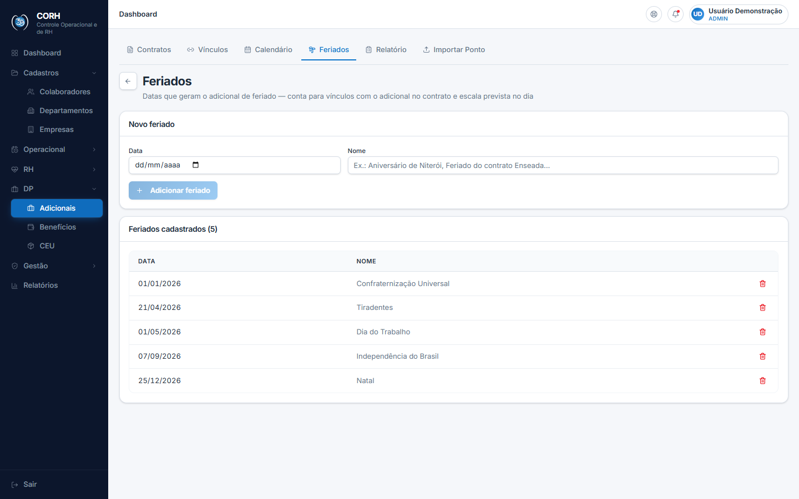
Tela: adicionais-feriados (imagem com dados de exemplo)
Como fazer
Cadastrar um feriado:
No cartão "Novo feriado", escolha a Data.
Escreva o Nome (ex.: "Aniversário de Niterói").
Clique em Adicionar feriado. O sistema mostra a mensagem verde "Feriado XX/XX/XXXX cadastrado" e a data aparece na lista.
Excluir um feriado (só Administrador):
Clique na lixeira vermelha da linha.
O sistema avisa que o relatório de adicionais deixará de contar aquela data.
Clique em Sim, excluir para confirmar.
Campos e botões
Data: dia do feriado.
Nome: como o feriado aparece na lista.
Adicionar feriado: grava a data. Fica desabilitado até preencher data e nome.
Lista "Feriados cadastrados (N)": mostra data e nome de todos os feriados, com o total entre parênteses.
Lixeira vermelha: exclui o feriado. Só aparece para o Administrador.
⚠️ ATENÇÃO — o feriado só gera adicional para o vínculo cujo contrato tem o adicional "Feriado" marcado e cuja escala previa trabalho naquele dia. Substituto que cobre um feriado não recebe o adicional.
Relatório
Consolida o período em uma tabela: uma linha por colaborador e contrato, com os totais de dias de cada adicional, além de folgas, faltas, férias e afastamentos. É o resultado final do módulo, pronto para exportar em Excel ou CSV e mandar para o financeiro. Quem trabalhou como substituto aparece com linha própria no contrato que cobriu, com os dias calculados pela regra do substituto.
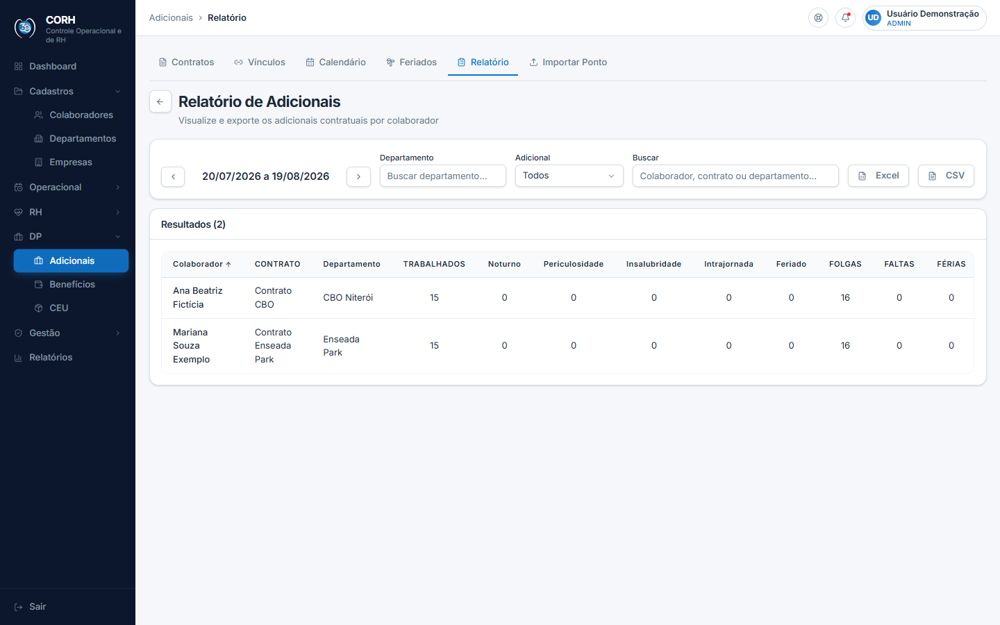
Tela: adicionais-relatorio (imagem com dados de exemplo)
Como fazer
Consultar o período:
Use as setas ao lado das datas para trocar o período (sempre de dia 20 a dia 19).
A tabela se recalcula sozinha.
Filtrar o resultado:
Use Departamento para ver só um departamento.
Use Adicional para ver só as linhas de contratos que pagam aquele adicional.
Use Buscar para procurar por colaborador, contrato ou departamento.
Ordenar a tabela:
Clique no título da coluna: Colaborador, Departamento, Noturno, Periculosidade, Insalubridade, Intrajornada ou Feriado.
Clique de novo para inverter a ordem. Nas colunas de números, o primeiro clique ordena do maior para o menor.
Exportar:
Clique em Excel para baixar o arquivo relatorio_adicionais.xlsx, ou em CSV para baixar relatorio_adicionais.csv.
O arquivo sai com as mesmas linhas que você está vendo na tela (filtros aplicados).
Campos e botões
Setas de período: mudam o mês de apuração (dia 20 a dia 19).
Departamento: filtra por departamento.
Adicional: filtra por contratos que pagam o adicional escolhido.
Buscar: procura por colaborador, contrato ou departamento.
Excel: baixa a planilha com os resultados filtrados.
CSV: baixa o arquivo de texto com os mesmos dados.
Coluna Colaborador: nome da pessoa. Clicável para ordenar.
Coluna Contrato: contrato do vínculo (ou do posto coberto, no caso do substituto).
Coluna Departamento: departamento do contrato. Clicável para ordenar.
Trabalhados: dias trabalhados no período.
Noturno: dias com direito ao adicional noturno. Clicável para ordenar.
Periculosidade: dias de direito — para o titular, 30 menos faltas e dias transferidos ao substituto; para o substituto, só os dias de férias/afastamento cobertos. Clicável para ordenar.
Insalubridade: mesma regra do titular; o substituto soma também as coberturas de falta e folga. Clicável para ordenar.
Intrajornada: dias trabalhados que caem nos dias de intrajornada configurados no contrato. Clicável para ordenar.
Feriado: feriados do período em que a pessoa estava escalada e o contrato paga o adicional. Clicável para ordenar.
Folgas / Faltas / Férias / Afastados: contagens de conferência do período.
Importar Ponto
É a tela que alimenta o módulo automaticamente. Você exporta do Flit o relatório "CORH - Adicionais e Ocorrências" em PDF e envia aqui. O sistema lê o espelho de ponto de cada colaborador, localiza a pessoa no cadastro pelo CPF, preenche o Calendário de quem tem vínculo e ainda lança as ocorrências de faltas e atestados no módulo de Ocorrências — tudo com um único arquivo.
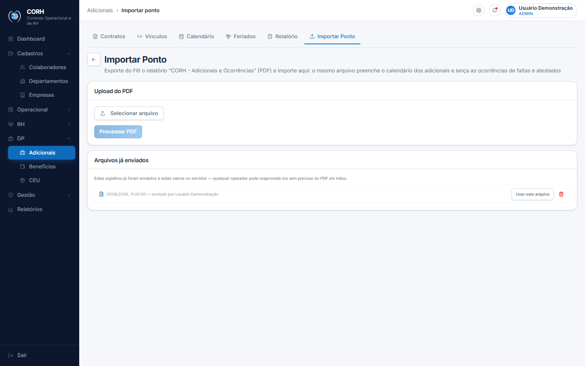
Tela: adicionais-importar-ponto (imagem com dados de exemplo)
Como fazer
Importar um novo PDF:
Clique em Selecionar arquivo e escolha o PDF exportado do Flit.
O nome do arquivo aparece ao lado do botão. Clique em Processar PDF.
Se esse mesmo arquivo já tiver sido enviado antes, o sistema pergunta o que fazer: Usar o que está no sistema (aproveita o registro antigo), Reenviar arquivo (grava de novo) ou Cancelar.
O sistema analisa o PDF e mostra uma mensagem para cada colaborador: verde quando encontrado, amarela quando o nome diverge do cadastro (o CPF bateu, então vale), vermelha quando não encontrado.
Confira o cartão "Resumo dos colaboradores do PDF" e a "Pré-visualização" (veja abaixo como revisar).
Clique em Confirmar importação. O botão mostra "Importando..." durante o processo.
No fim, o sistema mostra a mensagem verde com o resumo: "X dia(s) importado(s), Y ocorrência(s) criada(s), Z duplicada(s) ignorada(s)" — e avisos amarelos se houve colaborador não encontrado ou sem vínculo.
Reutilizar um PDF que outra pessoa já enviou:
Sem nenhum arquivo selecionado, procure o cartão "Arquivos já enviados".
Ele lista os espelhos salvos, com data, nome de quem enviou e tamanho.
Clique em Usar este arquivo. O sistema baixa o PDF e processa como se você tivesse acabado de enviar.
Excluir um arquivo salvo (só Administrador):
No cartão "Arquivos já enviados", clique na lixeira vermelha do arquivo.
Confirme em Excluir. O arquivo some e não pode mais ser reutilizado.
Revisar a pré-visualização antes de confirmar:
Cada colaborador do PDF vira um cartão com nome, CPF parcialmente oculto, matrícula e o resultado da localização: ✅ Encontrado, ⚠️ Nome diverge (casado pelo CPF) ou ⚠️ Não encontrado. Aparece também "🔗 Com vínculo" ou "⚠️ Sem vínculo (só ocorrências)".
Os selos coloridos do cartão resumem o espelho: ✅ trabalhados, 🏠 folgas, ❌ faltas, 🏖️ férias, 🏥 afastados e ⚠️ dias para revisar.
Clique no cartão para abrir a tabela dia a dia, com os horários e o status de cada dia.
Para corrigir um dia, mude o Status na lista da linha (trabalhou, falta, férias, afastado ou folga). As alterações já valem para a importação — inclusive criam ou cancelam ocorrências.
Se aparecer o aviso amarelo "Existem dias marcados para revisão", procure as linhas com a palavra "Revisar" e confira antes de confirmar.
Importar só alguns colaboradores:
Na pré-visualização, desmarque a caixa de seleção ao lado do nome de quem não deve entrar.
Colaboradores desmarcados ficam esmaecidos, com o aviso "⏭️ Dias não serão importados" — e, para eles, o calendário do período não é apagado nem alterado.
Use Marcar todos / Desmarcar todos para mudar todos de uma vez.
Conferir as ocorrências que serão lançadas:
No cartão "Opções", a caixa "Lançar ocorrências automaticamente para Faltas e Atestados" já vem marcada. Desmarque se quiser importar só o calendário.
O cartão "Ocorrências que serão lançadas" lista cada ocorrência: colaborador, tipo, período, quantidade de dias e status inicial.
Desmarque a caixa da linha para não lançar aquela ocorrência. Linhas esmaecidas já existem no sistema e serão ignoradas automaticamente (não duplica).
Campos e botões
Selecionar arquivo: abre a janela para escolher o PDF do Flit.
Nome do arquivo com X: mostra o arquivo escolhido; o X vermelho limpa a seleção e a pré-visualização.
Processar PDF: lê o arquivo e monta a pré-visualização. Mostra "Processando..." durante a leitura.
Arquivos já enviados: cartão com os PDFs salvos no sistema, disponíveis para qualquer operador reutilizar.
Usar este arquivo: baixa e processa um PDF já enviado, sem precisar do arquivo em mãos.
Lixeira do arquivo salvo: exclui o PDF do sistema. Só aparece para o Administrador.
Resumo dos colaboradores do PDF: lista colorida — verde (encontrado), amarelo (nome diverge, casado pelo CPF), vermelho (não encontrado). Quem não é encontrado não recebe dias nem ocorrências; confira o cadastro dele.
Pré-visualização: cartões dos colaboradores com caixa de seleção (marca quem terá os dias importados), resumo de dias e tabela dia a dia ao clicar.
Status (na tabela do dia): lista para corrigir a situação de cada dia antes de importar.
Lançar ocorrências automaticamente para Faltas e Atestados: caixa do cartão "Opções". Só aparece para quem pode lançar ocorrências (Administrador, Gestor, RH, DP1, DP2, Mesa e Financeiro).
Ocorrências que serão lançadas (N): lista com caixa de seleção por linha. O status inicial mostra "Ativa", "Pendente (aguarda anexo)" ou "Já existe — será ignorada".
Marcar todas / Desmarcar todas: atalho para as caixas da lista de ocorrências.
Confirmar importação: grava os dias no Calendário e lança as ocorrências marcadas.
Cancelar: descarta a pré-visualização e limpa a tela.
⚠️ ATENÇÃO — reimportar o mesmo período apaga os lançamentos manuais e os substitutos do calendário dos colaboradores marcados, voltando tudo ao estado do PDF. Depois de reimportar, refaça os substitutos pela aba Calendário (o botão "Definir substituto" cobre as férias de uma vez).
💡 DICA — o aviso "X colaborador(es) sem vínculo de adicional" significa que a pessoa foi encontrada, mas não tem vínculo cobrindo as datas do espelho — os dias dela não vão para o calendário (as ocorrências são lançadas normalmente). Crie o vínculo na aba Vínculos e importe de novo.
Dúvidas frequentes
Por que o período vai do dia 20 ao dia 19, e não do dia 1 ao 30?
Esse é o período de apuração usado para o fechamento da folha. O Calendário, o Relatório e a importação de ponto seguem todos essa mesma faixa de datas.
Reimportei o PDF do ponto e os substitutos sumiram. E agora?
É o comportamento esperado: reimportar devolve o período ao estado do espelho, apagando lançamentos manuais e substitutos dos colaboradores marcados. Vá à aba Calendário, filtre por "⚠️ Precisa de substituto" e refaça as coberturas — o botão "Definir substituto (N dias)" resolve as férias de uma vez.
O colaborador apareceu no PDF, mas não ganhou dias no calendário. Por quê?
Ele não tem vínculo cobrindo as datas do espelho. A importação só grava dias para quem tem vínculo ativo — sem vínculo, vão só as ocorrências. Crie o vínculo na aba Vínculos e processe o arquivo de novo (pode usar o botão "Usar este arquivo" no cartão "Arquivos já enviados").
O substituto que cobriu uma falta recebe periculosidade por esse dia?
Não. Para o substituto, a periculosidade só conta nos dias em que ele cobriu férias ou afastamento do titular. Já a insalubridade conta nas duas situações: cobertura de férias/afastamento e também de faltas e folgas.
Quem pode excluir feriados e os PDFs já enviados?
Apenas o Administrador. A lixeira da aba Feriados e a do cartão "Arquivos já enviados" na tela Importar Ponto não aparecem para os demais perfis.
Capítulo 6 — Extras (Faltas, Coberturas e Pagamentos)
O módulo de Extras é onde a empresa registra as faltas dos colaboradores e quem cobriu cada posto. A partir desses lançamentos, o sistema monta o balanço diário para enviar no WhatsApp, consolida os valores para pagamento e emite os recibos que o colaborador assina. É aqui que começa e termina todo o processo de pagamento de extras.
O módulo aparece no menu lateral como Extras e tem as abas: Lançamentos, Novo, Balanço Diário, Relatório Semanal, Recibos, Categorias e Mobile.
⚠️ ATENÇÃO — a pergunta "Gera extra?" só tem duas respostas: Sim e Não. Não significa que o colaborador não recebe pelo serviço — o registro fica só para controle (aparece no balanço diário do WhatsApp, mas não entra no pagamento nem nos recibos) e o valor é sempre gravado como R$ 0,00.
Lançamentos
É a tela principal do módulo: a lista de todos os extras lançados em um período. Aqui você consulta o que foi registrado, edita lançamentos, exclui registros feitos por engano e vê o total pendente de pagamento.
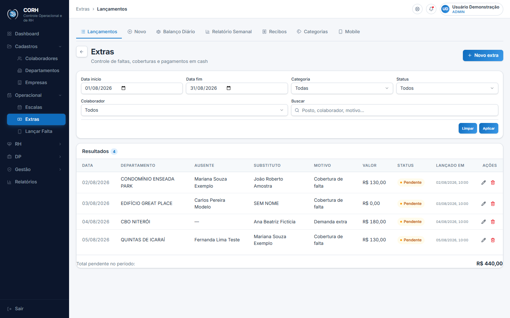
Tela: extras-lancamentos (imagem com dados de exemplo)
Ao abrir, a tela já mostra os lançamentos do mês atual (do dia 1 até o último dia do mês). Os filtros que você usar ficam guardados: se sair da tela e voltar, eles continuam os mesmos.
Como fazer
Filtrar os lançamentos:
Ajuste os campos de filtro (período, categoria, status, colaborador ou a busca por texto). A lista já se atualiza sozinha conforme você muda os campos.
Se preferir, clique em Aplicar para confirmar.
Para voltar ao padrão (mês atual, sem filtros), clique em Limpar.
Editar um lançamento:
Na linha do registro, clique no ícone de lápis (✏️).
O sistema abre o formulário com os dados preenchidos — veja a seção Novo Extra.
Altere o que precisar e clique em Atualizar. Você volta para a lista.
Excluir um lançamento feito por engano:
Na linha do registro, clique no ícone de lixeira (vermelho).
O sistema pergunta "Excluir extra? O registro será removido permanentemente."
Clique em Sim, excluir para confirmar, ou em Cancelar para desistir.
⚠️ ATENÇÃO — a lixeira só aparece para os perfis Administrador, Mesa e Inspetoria — são eles que podem excluir um lançamento errado. A exclusão é permanente e não pode ser desfeita.
💡 DICA — no rodapé da lista, o sistema mostra o Total pendente no período — a soma dos valores de todos os lançamentos com status "Pendente" visíveis na tela. É uma forma rápida de saber quanto falta pagar.
Campos e botões
Novo extra (botão no topo): abre o formulário de lançamento. Aparece para quem pode lançar (Administrador, Mesa, Inspetoria).
Data início / Data fim: período da consulta. Começa no mês atual.
Categoria: filtra por tipo de serviço (Limpeza, Portaria, Operacional, Zelador, Jardinagem, Medidas disciplinares, Outros) ou "Todas".
Status: filtra por Pendente, Pago, Cancelado ou "Todos".
Colaborador: filtra por um colaborador específico (lista os ativos) ou "Todos".
Buscar: campo de texto livre — procura no posto, no nome do ausente, no nome do substituto e no motivo.
Aplicar: confirma os filtros escolhidos.
Limpar: volta os filtros ao padrão (mês atual, tudo liberado).
Tabela de resultados, com as colunas:
Data: dia da ocorrência.
Departamento: posto onde aconteceu.
Ausente: quem faltou ("—" quando não há ausente).
Substituto: quem cobriu (ou "SEM NOME" quando ninguém cobriu).
Motivo: motivo do lançamento.
Valor: valor a pagar, em reais.
Status: selo colorido — amarelo "Pendente", verde "Pago", vermelho "Cancelado".
Lançado em: data e hora em que o registro foi feito no sistema.
Ações: lápis (editar) e lixeira (excluir), conforme o seu perfil.
Novo Extra
Formulário para registrar uma falta, uma cobertura ou um reforço. A mesma tela serve para criar (botão "Novo extra") e para editar (lápis na lista) — quando é edição, ela abre com os dados preenchidos e o botão final se chama "Atualizar".
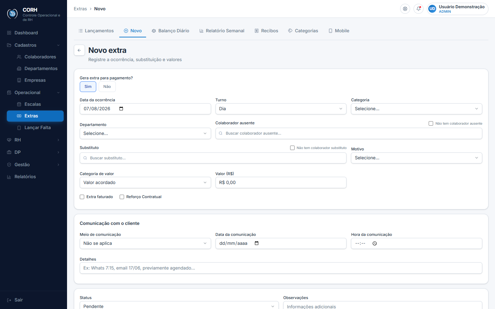
Tela: extras-novo (imagem com dados de exemplo)
Como fazer
Lançar um novo extra:
Na aba Lançamentos, clique em Novo extra (ou vá direto na aba Novo).
Responda "Gera extra para pagamento?":
Sim — o substituto vai receber pelo serviço. Informe o valor (pode ser R$ 0,00).
Não — é só um registro de controle (falta anotada, sem pagamento). O campo de valor zera e fica travado.
Preencha a data da ocorrência, o turno, a categoria e o departamento (posto).
Informe quem faltou (ou marque "Não tem colaborador ausente", quando for só um reforço, sem ninguém faltando).
Informe quem substituiu (ou marque "Não tem colaborador substituto", quando a falta ficou sem cobertura).
Escolha o motivo.
Escolha a categoria de valor (ela preenche o valor automaticamente) ou deixe em "Valor acordado" e digite o valor.
Marque Extra faturado se o serviço será cobrado do cliente, e Reforço Contratual se for um reforço previsto em contrato.
Preencha a seção Comunicação com o cliente, se o cliente foi avisado.
Revise e clique em Salvar. O sistema grava e leva você de volta para a lista de Lançamentos.
⚠️ ATENÇÃO — Extra faturado e Gera extra são coisas diferentes. "Gera extra" é o pagamento ao colaborador; "Extra faturado" é a cobrança feita ao cliente. Um colaborador pode não receber pelo serviço (Gera extra = Não) e mesmo assim o serviço ser faturado ao cliente. Os dois campos são independentes.
💡 DICA — se tentar salvar sem departamento, categoria ou motivo, o sistema mostra um aviso vermelho ("Selecione o departamento", etc.) e não grava — basta completar o campo indicado.
Duplicidade: ao salvar, o sistema verifica se já existe lançamento do mesmo colaborador, no mesmo departamento e na mesma data. Se existir, aparece o aviso "Já existe um extra lançado para..." e o registro não é gravado. A única exceção: com "Gera extra = Sim" e "Não tem colaborador ausente", o sistema permite vários lançamentos no mesmo posto e data — é o caso de uma equipe extra trabalhando junta, sem substituir ninguém.
Campos e botões
Gera extra para pagamento? (botões Sim/Não, no topo): define se há pagamento ao colaborador. Com Não, o valor zera, fica travado e é gravado R$ 0,00; o registro só aparece no balanço diário. Um texto abaixo explica isso quando o "Não" está marcado.
Data da ocorrência: dia em que a falta/cobertura aconteceu. Obrigatório.
Turno: Dia, Manhã, Tarde, Noite ou Noite anterior.
Categoria: tipo de serviço (Limpeza, Portaria, Operacional, Zelador, Jardinagem, Medidas disciplinares, Outros). Obrigatório.
Departamento: posto onde aconteceu. Ao trocar o departamento, o sistema limpa os campos de ausente e substituto. Obrigatório.
Colaborador ausente: campo de busca — digite o nome e escolha na lista. Sugere primeiro os colaboradores do departamento escolhido. Se não achar o nome, pode digitar um nome novo (não cadastrado).
Não tem colaborador ausente (caixa de marcar): use quando é só um reforço, sem ninguém faltando. O campo de busca some.
Substituto: campo de busca — quem cobriu o posto.
Não tem colaborador substituto (caixa de marcar): use quando a falta ficou sem cobertura. O registro sai como SEM NOME nos relatórios e esse grupo não gera recibo (não há quem assinar).
Motivo: Atestado, Falta sem justificativa, Folga, Férias, Extra faturado, Reforço estratégico, Reforço faturado, Limpeza interna, Cobertura férias extra faturadas, Outros, Treinamento ou Movimentação Operacional. Obrigatório.
Categoria de valor: "Valor acordado" (você digita o valor) ou uma das categorias cadastradas na aba Categorias — ao escolher uma, o valor padrão dela preenche o campo Valor automaticamente.
Valor (R$): valor a pagar ao substituto. Aceita R$ 0,00. Fica travado quando "Gera extra" está em Não.
Extra faturado (caixa de marcar): o serviço será cobrado do cliente. Independe do pagamento ao colaborador.
Reforço Contratual (caixa de marcar): a cobertura é um reforço previsto em contrato — sai marcado no balanço diário.
Comunicação com o cliente:
Meio de comunicação: WhatsApp, Email ou "Não se aplica".
Data da comunicação: quando o cliente foi avisado.
Status: Pendente, Pago ou Cancelado. Todo lançamento novo nasce "Pendente".
Observações: texto livre com informações adicionais.
Salvar (ou Atualizar, na edição): grava o registro e volta para a lista.
Cancelar: volta para a lista sem gravar nada.
Balanço Diário
Monta automaticamente a mensagem de texto do Balanço Operacional do dia, pronta para colar no WhatsApp. O sistema junta todos os extras da data escolhida, organiza por categoria e por departamento, e inclui no final as ocorrências do turno "Noite anterior" do dia anterior.
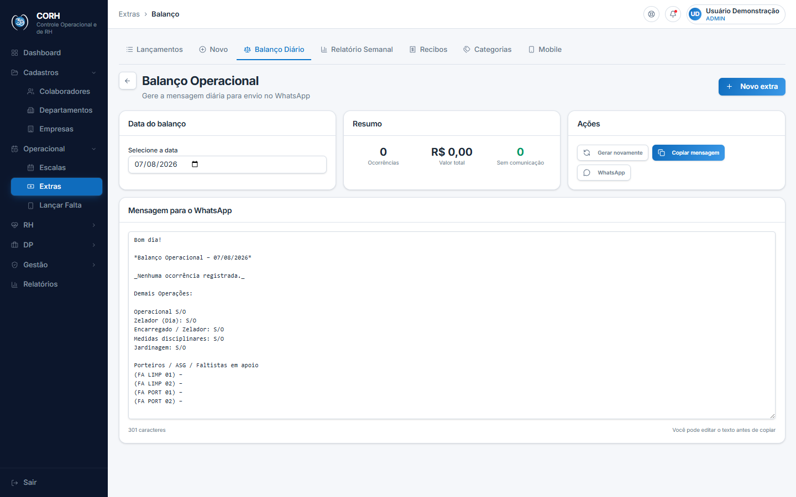
Tela: extras-balanco (imagem com dados de exemplo)
Como fazer
Gerar e enviar o balanço do dia:
Escolha a data em Data do balanço (vem com o dia de hoje). A mensagem é montada sozinha, a cada mudança.
Confira o Resumo: número de ocorrências, valor total e quantas estão sem comunicação ao cliente (o número fica vermelho quando há pendências).
Se precisar, edite o texto diretamente no quadro Mensagem para o WhatsApp.
Clique em Copiar mensagem — o sistema mostra o aviso "Mensagem copiada para a área de transferência". Depois é só colar no grupo do WhatsApp.
Ou clique em WhatsApp para abrir o WhatsApp (aplicativo ou web) já com o texto pronto para escolher o destinatário.
💡 DICA — se você editou o texto e quer voltar à versão montada pelo sistema, clique em Gerar novamente.
💡 DICA — quando a mensagem fica muito longa para abrir direto no WhatsApp, o sistema envia só o começo e avisa "Mensagem muito longa; enviada parte inicial pelo WhatsApp". Nesse caso, use Copiar mensagem e cole manualmente.
⚠️ ATENÇÃO — o que está como "Gera extra = Não" também aparece no balanço (é o relatório diário de ocorrências). Já os lançamentos do turno "Noite anterior" entram no balanço do dia seguinte, não do próprio dia — por isso o balanço de hoje traz a seção "Noite anterior" de ontem no final.
Campos e botões
Novo extra (botão no topo): atalho para o formulário de lançamento.
Data do balanço: a data de referência da mensagem.
Resumo:
Ocorrências: total de registros do dia (incluindo a noite anterior).
Valor total: soma dos valores.
Sem comunicação: quantos registros estão sem aviso ao cliente (vermelho quando há, verde quando zerado).
Ações:
Gerar novamente: refaz a mensagem automática, descartando edições manuais.
Copiar mensagem: copia o texto para colar onde quiser.
WhatsApp: abre o WhatsApp com o texto pronto.
Mensagem para o WhatsApp: quadro de texto com o balanço completo, editável. Embaixo, o sistema mostra a quantidade de caracteres. No final da mensagem vai um rodapé fixo com as demais operações ("Operacional S/O", porteiros/faltistas em apoio etc.).
Relatório Semanal
Consolidação dos extras de um período (por padrão, a semana atual), pensada para a conferência de pagamentos e para a emissão de recibos. Mostra o total geral, o quanto é faturado ao cliente e o quanto não é, e permite exportar tudo para o Excel.
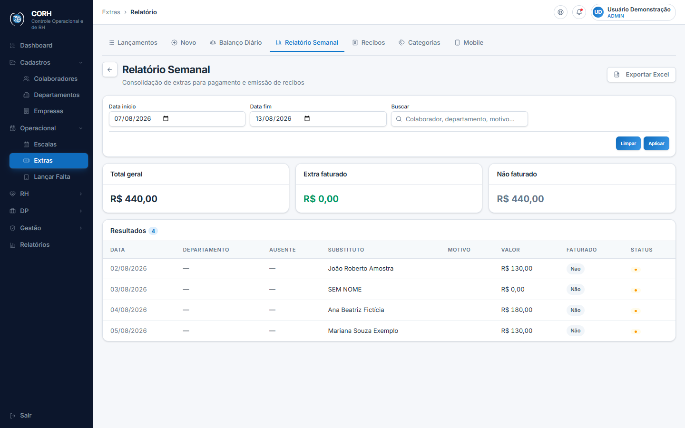
Tela: extras-relatorio (imagem com dados de exemplo)
Como fazer
Consultar o relatório:
Ajuste Data início e Data fim (vêm preenchidos com a semana atual).
Use o campo Buscar para procurar por colaborador (ausente ou substituto), departamento ou motivo.
Confira os cartões de totais no topo e a tabela com todos os registros do período, em ordem de data.
Exportar para o Excel:
Com os filtros prontos, clique em Exportar Excel (botão no topo).
O sistema baixa o arquivo relatorio_semanal_extras_<início>_a_<fim>.xlsx com exatamente o que está na tela e mostra o aviso verde "N registro(s) exportado(s) para Excel."
Se não houver nenhum registro no período, o sistema avisa "Nenhum registro para exportar."
Campos e botões
Exportar Excel (botão no topo): gera a planilha com as mesmas linhas e colunas da tela.
Data início / Data fim: período da consulta (padrão: semana atual).
Buscar: texto livre — procura no nome do ausente, do substituto, do departamento e no motivo.
Aplicar / Limpar: botões do painel de filtros. Limpar esvazia a busca.
Cartões de totais:
Total geral: soma de todos os valores do período.
Extra faturado (verde): soma só dos serviços cobrados do cliente.
Não faturado: soma dos serviços não faturados.
Tabela de resultados, com as colunas: Data, Departamento, Ausente, Substituto, Motivo, Valor, Faturado (selo "Sim"/"Não") e Status (selo colorido).
Recibos
Tela de pagamento: aqui os extras do período são agrupados por colaborador (o substituto que vai receber), e você gera o recibo de pagamento, colhe a assinatura na tela e marca os extras como pagos.
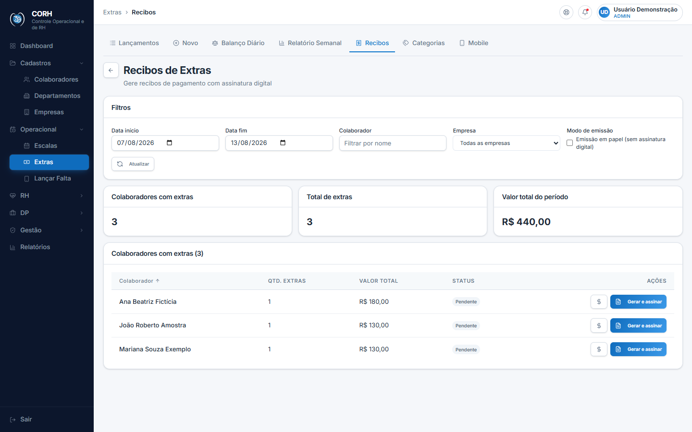
Tela: extras-recibos (imagem com dados de exemplo)
O fluxo completo é: gerar o recibo → o colaborador assina na tela → o PDF sai com a assinatura → marcar como pago.
Como fazer
Gerar um recibo e colher a assinatura:
Escolha o período em Data início e Data fim (padrão: semana atual). A lista mostra um colaborador por linha, com a quantidade de extras e o valor total a receber.
Na linha do colaborador, clique em Gerar e assinar. O sistema cria o recibo e abre a janela de assinatura.
Confira o resumo (quantidade de extras, valor total e a lista de extras do período).
Peça para o colaborador assinar no quadro com o dedo (na tela sensível ao toque) ou com o mouse. Se errar, clique em Limpar assinatura para refazer.
Se quiser já dar baixa no pagamento, marque "Marcar os extras como Pago após assinar".
Clique em Confirmar e gerar PDF. O sistema grava a assinatura e baixa o recibo em PDF.
⚠️ ATENÇÃO — sem assinatura no quadro, o botão de confirmar mostra o aviso "É necessário assinar antes de confirmar" e nada é gravado.
Emitir o recibo em papel (sem assinatura digital):
Marque a opção "Emissão em papel (sem assinatura digital)" nos filtros.
O botão da linha passa a se chamar Gerar para impressão.
Clique nele: o sistema cria o recibo e já baixa o PDF com a linha de assinatura em branco, para imprimir e colher a assinatura à caneta. O sistema mostra o aviso "Recibo para impressão gerado".
Marcar os extras como pagos:
Na linha do colaborador, clique no botão de cifrão (💲).
O sistema só deixa prosseguir se já existir um recibo assinado (digital ou em papel) do colaborador no período, e se os extras baterem com o recibo. Caso contrário, avisa que é preciso gerar o recibo antes.
Confirme em Sim, marcar. Os extras passam para o status "Pago" e o sistema mostra o aviso "N extra(s) marcado(s) como Pago".
⚠️ ATENÇÃO — marcar como pago exige recibo assinado — é a prova do pagamento. Se os extras mudarem depois do recibo (alguém editou ou excluiu um lançamento), o sistema bloqueia com o aviso "Os extras atuais não correspondem ao recibo assinado. Gere um novo recibo antes de marcar como pago." — exclua o recibo antigo e gere outro.
Reemitir ou consultar um recibo já assinado:
Na seção Recibos assinados (embaixo da lista), localize o recibo.
Clique em Detalhes para ver a lista de extras que o recibo cobre (somente leitura).
Clique em PDF para baixar o recibo novamente, com a assinatura.
Para remover um recibo, clique na lixeira e confirme em Sim, excluir.
⚠️ ATENÇÃO — o grupo "SEM NOME" (falta sem ninguém cobrindo) não aparece nesta tela — não há quem assinar o recibo. Também não aparecem registros com "Gera extra = Não" (não há pagamento) nem grupos com total R$ 0,00.
💡 DICA — perfis com acesso a esta tela: gerar/assinar recibos — Administrador, Mesa, DP1, Financeiro e Inspetoria; marcar como pago — Administrador, Financeiro e Inspetoria; excluir recibo — Administrador e Financeiro.
Campos e botões
Filtros:
Data início / Data fim: período dos extras (padrão: semana atual).
Colaborador: filtra a lista por parte do nome.
Empresa: filtra por empresa (ou "Todas as empresas").
Emissão em papel (sem assinatura digital): troca o modo de emissão para recibo de imprimir.
Atualizar: recarrega os dados da tela.
Cartões de totais: Colaboradores com extras (quantidade de pessoas a receber), Total de extras (quantidade de lançamentos) e Valor total do período.
Tabela "Colaboradores com extras":
Colaborador: nome de quem vai receber. Clique no título da coluna para inverter a ordem alfabética (seta para cima/baixo).
Qtd. extras: quantos lançamentos a pessoa tem no período.
Valor total: quanto ela tem a receber.
Status: selo "Pendente" (nada pago), "Parcial" (parte paga) ou "Pago" (tudo pago).
Ações: botão de cifrão (marcar como pago), Gerar e assinar / Gerar para impressão, ou o selo verde "Recibo já emitido" quando o recibo do período já existe.
Tabela "Recibos assinados": colunas Colaborador, Período, Qtd., Valor, Data assinatura e ações (Detalhes, PDF, lixeira).
Janela de assinatura:
Resumo: quantidade de extras e valor total.
Extras do período: tabela com data, turno, departamento, motivo e valor de cada extra.
Assinatura do colaborador: quadro para desenhar a assinatura.
Marcar os extras como Pago após assinar: dá baixa automática no pagamento.
Limpar assinatura: apaga o desenho para refazer.
Confirmar e gerar PDF: grava a assinatura e baixa o recibo (o botão mostra "Assinando..." durante o processo).
Categorias
Cadastro das categorias de valor — os preços padrão dos extras (ex.: "ASG 7:20 hs" — R$ 120,00). Ao lançar um extra e escolher uma categoria, o valor padrão dela preenche o campo Valor sozinho, agilizando o lançamento.
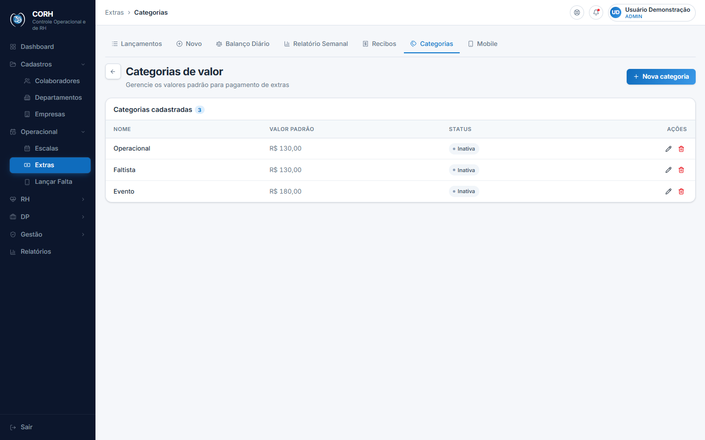
Tela: extras-categorias (imagem com dados de exemplo)
Como fazer
Cadastrar uma categoria:
Clique em Nova categoria (botão no topo).
Preencha o Nome e o Valor padrão (R$) e deixe a caixa Ativa marcada.
Clique em Salvar. A categoria entra na lista e passa a aparecer no campo "Categoria de valor" dos formulários.
⚠️ ATENÇÃO — se o nome estiver vazio, o sistema avisa "Informe o nome da categoria" e não grava.
Editar uma categoria:
Clique no ícone de lápis na linha da categoria.
O formulário abre preenchido no topo. Altere e clique em Salvar (ou Cancelar para desistir).
Excluir uma categoria:
Clique na lixeira vermelha na linha da categoria.
Confirme em Sim, excluir. A remoção é permanente.
Desativar sem excluir: edite a categoria e desmarque a caixa Ativa. Ela fica com o selo "Inativa" e deixa de ser sugerida, sem perder o histórico.
💡 DICA — quem pode criar e editar categorias: Administrador, Mesa, Inspetoria e Financeiro. Quem pode excluir: Administrador, Mesa e Financeiro.
Campos e botões
Nova categoria (botão no topo): abre o formulário de cadastro.
Formulário (Nova/Editar categoria):
Nome: nome da categoria (ex.: "ASG 7:20 hs"). Obrigatório.
Valor padrão (R$): preço que preenche o lançamento automaticamente.
Ativa (caixa de marcar): define se a categoria está disponível para uso.
Salvar: grava. Cancelar: fecha o formulário sem gravar.
Tabela "Categorias cadastradas": colunas Nome, Valor padrão, Status (selo "Ativa"/"Inativa") e Ações (lápis e lixeira, conforme o perfil).
Registro de Plantão
Formulário simplificado para lançar vários extras em sequência durante o plantão: ao salvar, o formulário se limpa sozinho e já fica pronto para o próximo registro. Tem campos grandes, pensado também para uso em tela menor.
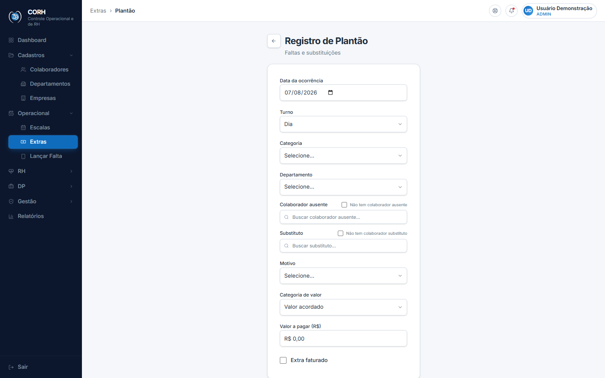
Tela: extras-plantao (imagem com dados de exemplo)
Como fazer
Preencha data, turno, categoria e departamento.
Informe quem faltou (ou marque "Não tem colaborador ausente") e quem substituiu (ou marque "Não tem colaborador substituto" — sai como SEM NOME).
Escolha o motivo, a categoria de valor (preenche o valor sozinha) e confira o valor a pagar.
Marque Extra faturado se o serviço será cobrado do cliente.
Preencha a comunicação com o cliente (meio, data, hora e detalhes), se houve aviso.
Escreva observações, se preciso.
Clique em Salvar registro. O sistema mostra o aviso verde "Registro salvo com sucesso" e limpa o formulário — pode lançar o próximo.
Use Novo registro para limpar o formulário manualmente a qualquer momento, ou Voltar para retornar aos Lançamentos.
⚠️ ATENÇÃO — diferente do formulário "Novo Extra", aqui o substituto é obrigatório: se não escolher ninguém nem marcar "Não tem colaborador substituto", o sistema avisa e não grava. Departamento, categoria e motivo também são obrigatórios.
Campos e botões
Data da ocorrência, Turno, Categoria, Departamento, Colaborador ausente (com "Não tem colaborador ausente"), Substituto (com "Não tem colaborador substituto") e Motivo: mesmos campos do formulário Novo Extra.
Categoria de valor: "Valor acordado" ou uma categoria cadastrada — preenche o valor automaticamente.
Valor a pagar (R$): valor do extra.
Extra faturado (caixa de marcar): serviço cobrado do cliente.
Comunicação com o cliente: Meio de comunicação (WhatsApp, Email ou "Não se aplica"), Data, Hora e Detalhes.
Observações: texto livre.
Salvar registro: grava e limpa o formulário para o próximo lançamento.
Novo registro: limpa todos os campos sem gravar.
Voltar: retorna à lista de Lançamentos.
Lançar Falta no celular
Tela feita para o inspetor registrar a falta direto do celular, no fim de semana ou no plantão, sem abrir o sistema inteiro. O endereço é https://plena-corh.netlify.app/mobile/falta e a tela também fica na aba Mobile do módulo Extras. É um assistente em 5 passos: Ocorrência → Pessoas → Valor → Comunicação → Revisar.
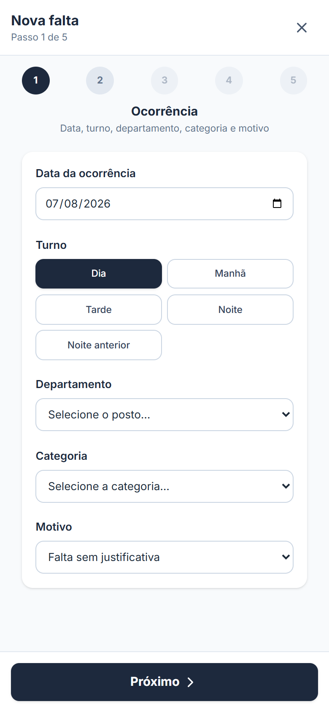
Tela: mobile-falta (imagem com dados de exemplo)
Instale na tela inicial do celular (faz uma vez só):
Android (Chrome): abra o endereço, faça login, toque no menu ⋮ → "Instalar app" ou "Adicionar à tela inicial". Segurando o dedo no ícone do CORH, aparece o atalho "Lançar falta".
iPhone (Safari): abra o endereço no Safari, faça login, toque em Compartilhar → "Adicionar à Tela de Início".
O login fica salvo — você não digita a senha toda vez.
Como fazer
Passo 1 — Ocorrência: informe a data, toque no turno (Dia, Manhã, Tarde, Noite ou Noite anterior), escolha o departamento (posto), a categoria e o motivo. Toque em Próximo.
Passo 2 — Pessoas: selecione quem faltou — o campo mostra primeiro os colaboradores do departamento escolhido ("Deste departamento"); digite o nome ou a matrícula para buscar em todos. Se for só um reforço, escolha a opção "Não tem colaborador ausente" no topo da lista. Depois selecione quem substituiu — ou a opção "Não tem colaborador substituto" quando ninguém cobriu (a falta fica anotada como SEM NOME).
Passo 3 — Valor: responda "Gera extra para pagamento?":
Sim → escolha a categoria de valor (preenche o valor sozinha) ou deixe em "Valor acordado" e digite o valor (pode ser R$ 0,00). Depois responda o tipo: "Extra normal" ou "Extra faturado" (cobrança do cliente).
Não → a falta fica só registrada para controle: aparece no balanço diário do WhatsApp, mas não entra no pagamento nem nos recibos. O campo de valor fica travado em R$ 0,00.
Por fim, responda "Reforço Contratual?" — marque Sim 🪙 quando a cobertura for um reforço previsto em contrato.
Passo 4 — Comunicação: toque no meio de comunicação (WhatsApp, Email ou "Não se aplica"). Se o cliente foi avisado, preencha data, hora e detalhes (ex.: "WhatsApp às 7h15"). Escreva observações, se preciso.
Passo 5 — Revisar: confira o resumo completo (inclusive se está "Extra (com pagamento)" ou "Não gera extra (sem pagamento)") e toque em Salvar.
Deu certo: aparece a tela verde com ✓ e a mensagem "Registro salvo!". Nela você pode tocar em Novo registro (lançar outra falta), Ver lançamentos ou Voltar ao início.
⚠️ ATENÇÃO — não lance o mesmo registro duas vezes. Se tentar repetir o mesmo colaborador + departamento + data, o sistema avisa "Já existe um extra lançado para..." — nesse caso, não insista e fale com a mesa de operações.
⚠️ ATENÇÃO — se aparecer mensagem de erro, não tente de novo várias vezes — anote o que aconteceu e avise a responsável, pois o registro pode ter sido salvo mesmo assim. E precisa de internet para salvar: se estiver sem sinal, anote e lance quando tiver conexão.
💡 DICA — se faltar preencher algo obrigatório, o sistema mostra o aviso "Preencha os campos obrigatórios" e marca o campo em vermelho. Dá para tocar nas bolinhas numeradas do topo para voltar a um passo anterior e corrigir.
Campos e botões
Cabeçalho: título "Nova falta", contador "Passo X de 5" e botão X (sair, voltando aos Lançamentos).
Bolinhas numeradas (1 a 5): mostram o progresso. As verdes (com ✓) são passos já concluídos — toque para voltar a eles.
Passo 1: Data da ocorrência, Turno (botões), Departamento, Categoria e Motivo (listas de seleção).
Passo 2: Colaborador ausente e Substituto — campos de busca com as opções especiais "Não tem colaborador ausente" e "Não tem colaborador substituto".
Passo 3: Gera extra para pagamento? (Sim/Não), Categoria de valor, Valor a pagar (R$), Tipo (Extra normal / Extra faturado) e Reforço Contratual? (Não / Sim 🪙).
Passo 4: Meio de comunicação (WhatsApp, Email, Não se aplica), Data, Hora, Detalhes e Observações.
Passo 5: resumo de tudo que foi preenchido, para conferência.
Voltar: retorna ao passo anterior.
Próximo: avança (valida os campos obrigatórios do passo).
Salvar (botão verde, no passo 5): grava o registro. Enquanto grava, mostra "Salvando...".
Dúvidas frequentes
Lancei um extra errado. Como corrijo?
Se for erro de preenchimento, clique no lápis na tela Lançamentos e edite. Se o lançamento não deveria existir, peça a alguém dos perfis Mesa ou Inspetoria (ou Administrador) para excluir pela lixeira — só esses perfis podem excluir.
Qual a diferença entre "Gera extra = Não" e "Extra faturado"?
"Gera extra" controla o pagamento ao colaborador: Não = ninguém recebe, o valor grava R$ 0,00 e o registro só aparece no balanço diário. "Extra faturado" controla a cobrança do cliente e independe do pagamento — um serviço pode não ser pago ao colaborador e mesmo assim ser faturado ao cliente.
Ninguém cobriu a falta. O que eu marco no campo Substituto?
Marque a opção "Não tem colaborador substituto". O registro sai como SEM NOME nos relatórios, para a falta ficar anotada em vez de parecer esquecimento. Esse grupo não gera recibo — não há quem assinar.
Posso pagar sem recibo assinado?
Não. O botão de marcar como pago (cifrão, na tela Recibos) só libera depois que existe um recibo assinado do colaborador no período — digital (assinatura na tela) ou em papel. E os extras precisam bater exatamente com o recibo; se algo mudou, gere um novo recibo.
O inspetor lançou pelo celular e deu erro. O que fazer?
Não lance de novo no automático: o registro pode ter sido salvo. Confira primeiro na tela Lançamentos (filtre pela data e pelo posto). Se não estiver lá, aí sim refaça o lançamento.
Capítulo 7 — Escalas (Locais de Trabalho Diários)
O módulo Escalas mostra, dia a dia, em qual local de trabalho (posto) cada colaborador esteve. O sistema lê o arquivo Excel de marcações do Flit e descobre sozinho o local de cada pessoa em cada dia. O que ele não conseguir descobrir fica marcado como "Não identificado" e espera a sua confirmação na mão.
O módulo tem quatro abas, que aparecem no topo de todas as telas: Escalas (o diário), Importar, Locais e Mapeamento.
💡 DICA — antes de importar pela primeira vez, cadastre os locais na aba Locais e ensine o sistema na aba Mapeamento. Assim a importação já sai quase toda identificada automaticamente.
Escalas (Diário de escalas)
Esta é a tela principal do módulo. Ela mostra uma lista com uma linha para cada dia de cada colaborador: dia, nome, função e o local de trabalho daquele dia. Quando o sistema não conseguiu descobrir o local, a linha aparece como "Não identificado" (em itálico) e o botão da linha se chama "Confirmar". Quando o local já está definido, o botão se chama "Alterar" e serve para corrigir.
No topo há um painel de filtros para escolher o período e refinar a lista. A competência padrão vai do dia 20 de um mês ao dia 19 do mês seguinte — a própria tela mostra o intervalo exato logo abaixo do mês escolhido.
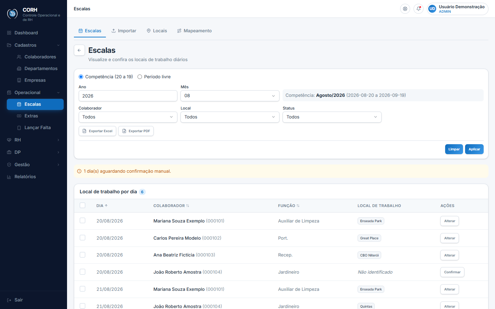
Tela: escalas (imagem com dados de exemplo)
Como fazer
Ver a escala de uma competência
No painel de filtros, deixe marcada a opção "Competência (20 a 19)".
Escolha o Ano e o Mês. A tela mostra logo abaixo o intervalo exato (por exemplo, de 20/06/2026 a 19/07/2026).
Clique em Aplicar. A lista é atualizada com os dias daquela competência.
Ver um período qualquer
Marque a opção "Período livre".
Preencha Data início e Data fim.
Clique em Aplicar.
💡 DICA — para ver só o que falta confirmar, mude o filtro Status para "Não identificados" e clique em Aplicar.
Confirmar um dia que ficou "Não identificado"
Na linha do dia, clique no botão Confirmar.
Na janela que abre, o sistema mostra o nome do colaborador, a matrícula e a data. Se o colaborador já trabalhou em alguns locais recentemente, eles aparecem como botões prontos na parte de cima da janela — clique em um deles para preencher o local com um toque.
Se preferir, escolha o local na lista Local de Trabalho.
Se quiser, escreva uma Observação (por exemplo: "Confirmado via geolocalização no Flit").
Clique em Salvar. O sistema mostra a mensagem verde "Local confirmado", a janela fecha e a linha passa a exibir o local escolhido.
💡 DICA — confirmações feitas na mão nunca são apagadas ao reimportar o Excel. Pode confirmar sem medo.
Alterar o local de um dia já identificado
Na linha do dia, clique em Alterar.
Escolha o novo local, ajuste a observação se quiser e clique em Salvar.
Confirmar vários dias de uma vez (em lote)
Marque a caixinha de seleção no início de cada linha que você quer confirmar. Para marcar tudo de uma vez, clique na caixinha do cabeçalho da tabela.
Ao marcar a primeira linha, aparece acima da tabela a barra "Aplicar local em N dia(s)".
Escolha o local na lista da barra e, se quiser, escreva uma observação.
Clique em Confirmar em lote. O sistema mostra a mensagem verde "N dia(s) atualizado(s)" e as linhas marcadas passam a exibir o local escolhido.
Ordenar a tabela
Clique no título da coluna Dia, Colaborador ou Função para ordenar em ordem crescente.
Clique de novo para inverter a ordem. Uma setinha ao lado do título indica a direção atual.
Exportar para Excel
Aplique os filtros desejados primeiro.
Clique em Exportar Excel. O navegador baixa o arquivo escalas_AAAA-MM-DD.xlsx com as colunas Dia, Colaborador, Local de Trabalho, Fonte e Observação, e o sistema avisa quantos registros foram exportados.
Exportar para PDF
Aplique os filtros desejados primeiro.
Clique em Exportar PDF. O navegador baixa o arquivo escalas_AAAA-MM-DD.pdf, com uma página por mês de competência e as colunas Dia, Colaborador, Local de Trabalho e Fonte.
⚠️ ATENÇÃO — se não houver nenhum registro nos filtros aplicados, o sistema avisa "Nenhum registro para exportar. Aplique um filtro primeiro." e não baixa nada.
Campos e botões
Competência (20 a 19): opção de período que usa a regra da folha — do dia 20 do mês escolhido ao dia 19 do mês seguinte.
Período livre: opção de período para escolher datas de início e fim manualmente.
Ano / Mês: ano e mês base da competência (só aparecem com "Competência" marcada). Logo abaixo, a tela mostra o intervalo exato calculado.
Data início / Data fim: datas do período livre (só aparecem com "Período livre" marcado).
Colaborador: filtra a lista por uma pessoa. A opção "Todos" mostra todos.
Local: filtra a lista por um local de trabalho. A opção "Todos" mostra todos.
Status: "Todos", "Identificados" (dias com local definido) ou "Não identificados" (dias pendentes de confirmação).
Aplicar: botão que executa a pesquisa com os filtros escolhidos.
Limpar: volta os filtros ao padrão (competência atual, todos os colaboradores e locais).
Exportar Excel: baixa a lista filtrada em planilha.
Exportar PDF: baixa a lista filtrada em PDF, uma página por mês.
Aviso amarelo "N dia(s) aguardando confirmação manual": aparece acima da tabela quando há dias não identificados na lista atual.
Caixinha de seleção (cada linha e cabeçalho): marca dias para a confirmação em lote.
Barra "Aplicar local em N dia(s)": aparece quando há linhas marcadas; nela você escolhe o local, escreve uma observação e clica em Confirmar em lote.
Confirmar em lote: grava o local escolhido em todos os dias marcados. Fica desabilitado até você escolher um local.
Confirmar / Alterar (botão de cada linha): abre a janela para definir ou corrigir o local daquele dia.
Janela de confirmação — Locais usados recentemente: botões com os últimos locais daquele colaborador (com a quantidade de vezes entre parênteses); clicar em um deles preenche o local automaticamente.
Janela de confirmação — Local de Trabalho: lista para escolher o local do dia.
Janela de confirmação — Observação: campo livre para anotar como o local foi confirmado.
Cancelar / Salvar (na janela): fecha sem gravar ou grava o local escolhido. O botão Salvar fica desabilitado até escolher um local.
Importar escala: botão que aparece quando a lista está vazia; leva direto para a aba Importar.
Importar
Esta tela recebe o arquivo Excel de marcações do Flit e grava os dias no sistema. Ao importar, o sistema tenta descobrir sozinho o local de cada dia, seguindo esta ordem de pistas:
Dispositivo fixo — em qual aparelho "Flit Multi" a pessoa bateu o ponto;
Perímetro — a cerca virtual (geolocalização) registrada na marcação;
Nome do horário (turno) — o nome da escala do dia, que costuma trazer o posto;
Departamento — o cadastro da pessoa, usado como conferência final.
A ordem faz diferença: quem é faltista tem departamento fixo e genérico, mas trabalha em postos diferentes a cada dia — por isso o turno é lido antes do departamento. O que nenhuma pista resolver fica como "Não identificado" para você confirmar na aba Escalas.
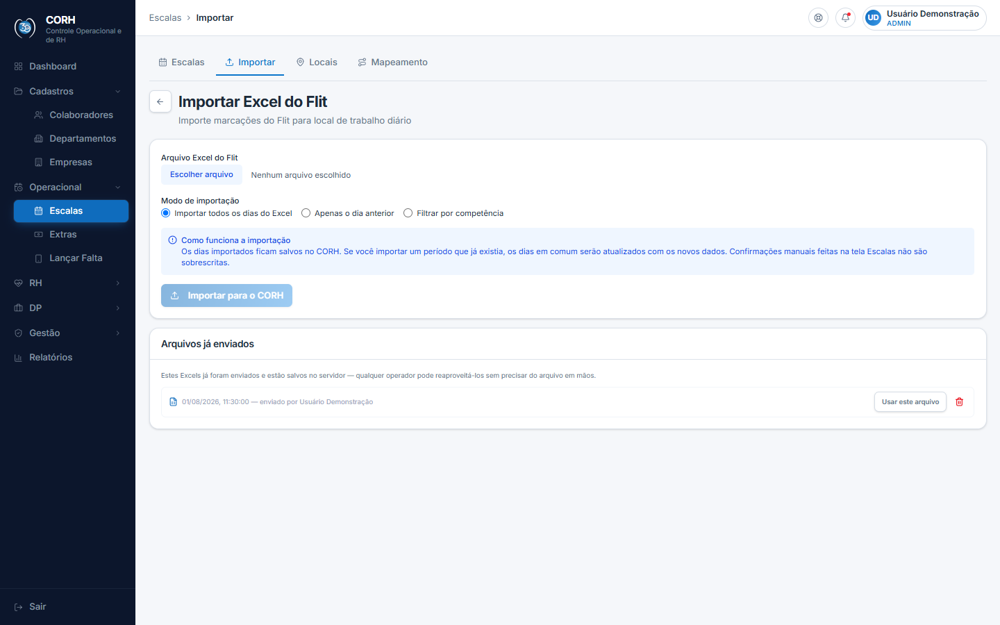
Tela: escalas-importar (imagem com dados de exemplo)
Como fazer
Importar um Excel novo
Clique no campo Arquivo Excel do Flit e escolha o arquivo (.xlsx ou .xls) no seu computador. A tela mostra uma pré-visualização com as primeiras linhas (colaborador, matrícula, data, local e dispositivo) para você conferir se é o arquivo certo.
Escolha o Modo de importação:
Importar todos os dias do Excel: grava tudo o que está no arquivo;
Apenas o dia anterior: grava só as marcações de ontem (útil para a rotina diária);
Filtrar por competência: grava só os dias dentro da competência escolhida — preencha Ano e Mês base e confira o intervalo exato que a tela mostra (dia 20 a dia 19).
Clique em Importar para o CORH. Enquanto processa, o botão mostra "Importando...".
Ao terminar, aparece o cartão Resumo da importação com: quantos dias foram importados, quantos foram identificados automaticamente, quantos ficaram não identificados e, quando for o caso, quantas confirmações manuais foram preservadas. Se algum nome do Excel não existir no cadastro do CORH, ele aparece na lista "Colaboradores não encontrados no CORH".
⚠️ ATENÇÃO — reimportar um período já importado não apaga as confirmações feitas na mão na aba Escalas. Os dias em comum são atualizados com os dados novos, mas o que você confirmou manualmente é preservado (o resumo mostra quantas confirmações foram preservadas).
Reaproveitar um Excel já enviado
Sem escolher arquivo novo, olhe o cartão Arquivos já enviados. Ele lista cada Excel enviado, com data, nome de quem enviou e tamanho.
Clique em Usar este arquivo na linha desejada. O sistema baixa o arquivo do servidor e o carrega como se você tivesse anexado — aparece a pré-visualização e você segue o passo a passo normal de importação, sem precisar do arquivo em mãos.
💡 DICA — todo Excel importado fica salvo no servidor automaticamente. Qualquer operador pode reaproveitá-lo depois — útil quando outra pessoa fez o primeiro envio.
Excluir um arquivo salvo (somente Administrador)
No cartão Arquivos já enviados, clique na lixeira vermelha na linha do arquivo.
Confirme em Excluir na janela que abre. O arquivo é removido do servidor e não pode mais ser reutilizado. O sistema mostra a mensagem "Arquivo removido".
Campos e botões
Arquivo Excel do Flit: seletor de arquivo; aceita .xlsx e .xls. Ao escolher, a pré-visualização das primeiras linhas aparece na hora.
Modo de importação — Importar todos os dias do Excel: grava todos os dias presentes no arquivo.
Modo de importação — Apenas o dia anterior: grava somente as marcações de ontem.
Modo de importação — Filtrar por competência: grava só os dias dentro da competência informada.
Ano / Mês base: ano e mês da competência (só aparecem no modo "Filtrar por competência"); abaixo, a tela mostra o intervalo exato de 20 a 19.
Caixa azul "Como funciona a importação": lembrete de que os dias importados ficam salvos, que reimportar atualiza os dias em comum e que confirmações manuais não são sobrescritas.
Importar para o CORH: inicia a importação. Fica desabilitado sem arquivo, enquanto importa ou se o arquivo tiver erro de leitura.
Pré-visualização (primeiras linhas): tabela com colaborador, matrícula, data, local de trabalho e dispositivo das primeiras linhas do arquivo. Se o arquivo estiver ilegível, aparece no lugar um aviso vermelho com o motivo.
Arquivos já enviados: cartão com os Excels salvos no servidor (nome, data de envio, quem enviou e tamanho).
Usar este arquivo: baixa o Excel salvo e o carrega para uma nova importação.
Lixeira (no cartão de arquivos): exclui o arquivo salvo. Só aparece para o Administrador.
Resumo da importação: cartão com o resultado — dias importados, identificados automaticamente, não identificados, confirmações manuais preservadas e a lista de colaboradores não encontrados no cadastro.
Locais
Aqui você cadastra os locais de trabalho (postos) que o sistema usa nas escalas. Cada local tem um nome completo e um nome curto, que é a forma abreviada exibida nas listas e relatórios. O botão "Importar de Departamentos" cria locais automaticamente a partir dos departamentos já cadastrados no sistema, pulando os que já existem com nome parecido.
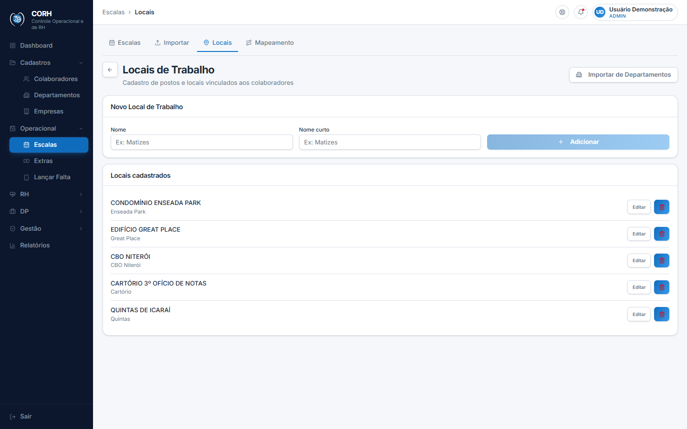
Tela: escalas-locais (imagem com dados de exemplo)
Como fazer
Cadastrar um local
No cartão Novo Local de Trabalho, preencha o Nome (por exemplo: "Matizes").
Se quiser, preencha o Nome curto (a forma curta que aparece nas telas). Se deixar em branco, o sistema usa o próprio nome.
Clique em Adicionar. O sistema mostra a mensagem verde "Local de trabalho criado" e o local aparece na lista abaixo.
Importar locais dos departamentos
Clique em Importar de Departamentos, no topo da tela.
O sistema cria como locais os departamentos ativos que têm nome curto e que ainda não existem como local (nomes parecidos são ignorados para não duplicar).
Ao final, uma mensagem informa quantos locais foram importados e quantos foram ignorados por já existirem.
Editar um local
Na lista Locais cadastrados, clique em Editar na linha do local.
A linha vira dois campos editáveis: nome e nome curto. Ajuste o que precisar.
Clique em Salvar para gravar (mensagem "Local de trabalho atualizado") ou Cancelar para desistir.
Excluir um local
Clique na lixeira vermelha na linha do local.
Na janela de confirmação, clique em Sim, excluir. O local é removido permanentemente e o sistema mostra a mensagem "Local de trabalho removido".
⚠️ ATENÇÃO — a exclusão é permanente e não pode ser desfeita. Se o local já foi usado em escalas, pense antes de excluir — prefira editar o nome quando for só uma correção.
Campos e botões
Nome: nome completo do local de trabalho. Obrigatório — sem ele o botão Adicionar fica desabilitado.
Nome curto: forma abreviada exibida nas listas e relatórios. Se ficar vazio, o sistema repete o nome completo.
Adicionar: grava o novo local.
Importar de Departamentos (topo da tela): cria locais a partir dos departamentos ativos com nome curto, sem duplicar os que já existem.
Locais cadastrados: lista com todos os locais ativos, mostrando nome completo e nome curto.
Editar: transforma a linha em campos editáveis (nome e nome curto).
Salvar / Cancelar (na linha em edição): grava ou descarta a alteração.
Lixeira: exclui o local, após confirmação.
Mapeamento
A aba Mapeamento é onde você ensina o sistema: quando o Excel do Flit trouxer determinado texto, o local de trabalho é tal. Cada mapeamento liga um valor que aparece no Flit a um local cadastrado na aba Locais. Quanto melhores os mapeamentos, menos dias caem como "Não identificado" na importação.
Existem três tipos de mapeamento, correspondentes às pistas que o sistema usa na inferência:
Dispositivo (Flit Multi): o nome do aparelho de ponto fixo onde a pessoa bateu (a pista mais forte);
Perímetro: o nome da cerca virtual de geolocalização registrada na marcação;
Turno contém Departamento: um texto que aparece no nome do horário (turno) ou no departamento da pessoa.
O sistema compara os textos sem ligar para maiúsculas/minúsculas e acentos, e basta o texto do Flit conter o valor cadastrado. Por exemplo: o mapeamento "CBO - MACAÉ" casa com o turno "08X17 CBO - MACAÉ".
⚠️ ATENÇÃO — não cadastre valores genéricos demais. Um mapeamento só com "CBO" casaria tanto com "CBO - NITERÓI" quanto com "CBO - MACAÉ" — e os dois postos brigariam pelo mesmo texto. Quanto mais específico o valor (mais longo, com o detalhe que distingue o posto), melhor. Traços e pontos ajudam a diferenciar: "CBO -" já separa Niterói de Macaé.
💡 DICA — turnos de função (como "Faltista ASG" ou "Inspetor Diurno") não indicam lugar — eles dizem o que a pessoa faz, não onde ela está. Os dias desses colaboradores ficam para confirmação manual mesmo, por desenho do sistema.
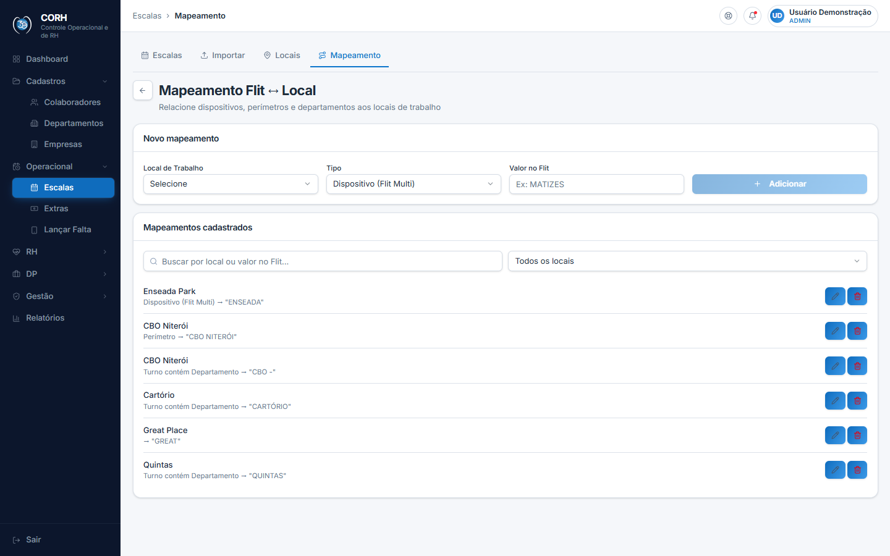
Tela: escalas-mapeamento (imagem com dados de exemplo)
Como fazer
Cadastrar um mapeamento
No cartão Novo mapeamento, escolha o Local de Trabalho na lista.
Escolha o Tipo: Dispositivo (Flit Multi), Perímetro ou Turno contém Departamento.
Em Valor no Flit, escreva o texto exatamente como aparece no Excel do Flit (por exemplo: "MATIZES" ou "CBO - MACAÉ").
Clique em Adicionar. O sistema mostra a mensagem verde "Mapeamento criado" e a regra aparece na lista.
💡 DICA — se já existir um mapeamento com o mesmo tipo e o mesmo valor, o sistema avisa "Este mapeamento já existe (mesmo tipo e valor no Flit)" e não duplica.
Procurar um mapeamento na lista
Digite no campo de busca (a lupa) um trecho do nome do local ou do valor no Flit — a lista filtra na hora, sem precisar de botão.
Ou use a lista ao lado para mostrar só os mapeamentos de um local específico.
Quando houver filtro, a tela mostra "Exibindo X de Y mapeamento(s)" logo acima da lista.
Editar um mapeamento
Clique no lápis na linha do mapeamento.
A linha vira campos editáveis: local, tipo e valor no Flit. Ajuste o que precisar.
Clique em Salvar (mensagem "Mapeamento atualizado") ou Cancelar para desistir.
Excluir um mapeamento
Clique na lixeira vermelha na linha do mapeamento.
Na janela de confirmação, clique em Sim, excluir. O mapeamento é removido permanentemente e o sistema mostra a mensagem "Mapeamento removido". Dias já importados não mudam — a exclusão só afeta importações futuras.
Campos e botões
Local de Trabalho: local que será atribuído quando o texto aparecer no Flit. Obrigatório.
Tipo: onde o sistema procura o texto — Dispositivo (Flit Multi), Perímetro ou Turno contém Departamento.
Valor no Flit: texto que deve aparecer no Excel do Flit. Obrigatório — sem ele (ou sem local) o botão Adicionar fica desabilitado.
Adicionar: grava o novo mapeamento.
Campo de busca (lupa): filtra a lista por trecho do nome do local ou do valor no Flit, na hora.
Lista "Todos os locais": filtra a lista para mostrar só os mapeamentos de um local.
Mapeamentos cadastrados: lista mostrando o nome curto do local e a regra no formato "Tipo → valor".
Lápis: edita o mapeamento na própria linha.
Salvar / Cancelar (na linha em edição): grava ou descarta a alteração.
Lixeira: exclui o mapeamento, após confirmação.
Dúvidas frequentes
Reimportei o Excel e perdi as confirmações que fiz na mão?
Não. Dias confirmados manualmente são preservados em qualquer reimportação. O resumo da importação mostra quantas confirmações foram preservadas.
Por que um dia ficou como "Não identificado"?
Porque nenhuma das quatro pistas (dispositivo, perímetro, turno, departamento) casou com um mapeamento cadastrado. Confirme o dia na mão na aba Escalas e, se for um caso que se repete, crie o mapeamento correspondente na aba Mapeamento para as próximas importações saírem identificadas.
O que é a "competência 20 a 19"?
É o período usado pela folha: começa no dia 20 de um mês e termina no dia 19 do mês seguinte. Ao escolher ano e mês, a própria tela mostra o intervalo exato das datas.
O Excel que outra pessoa importou sumiu para mim?
Não. Todo Excel importado fica salvo no servidor. Abra a aba Importar sem escolher arquivo novo e use o cartão "Arquivos já enviados" — o botão "Usar este arquivo" reimporta sem precisar anexar de novo.
Cadastrei o mapeamento "CBO" e os postos saíram trocados. Como corrijo?
O valor "CBO" é genérico demais e casa com mais de um posto. Edite ou exclua esse mapeamento e cadastre valores específicos, como "CBO - NITERÓI" e "CBO - MACAÉ". Depois, corrija na mão os dias que já foram importados com o local errado.
Capítulo 8 — Férias
O módulo Férias mostra a situação das férias de todos os colaboradores ativos em um só lugar. A partir da data de admissão e dos períodos já gozados, o sistema calcula o prazo máximo que a lei (CLT) dá para cada colaborador sair de férias e avisa quem está perto de estourar esse prazo. As férias em si vêm da planilha exportada do Flit (controle de ponto) e entram no sistema pela aba Importar; além disso, o RH pode registrar previsões de planejamento e anotar os avisos de férias já comunicados.
Cada colaborador pode ter períodos de férias em três situações: em gozo (está de férias agora ou já gozou), agendadas (data já marcada no Flit) e previstas (planejamento lançado pelo próprio RH dentro do CORH).
O módulo tem três abas, no topo da tela: Visão geral, Importar e Notificações.
Visão geral
É a tela principal do módulo. No topo, cinco cartões resumem o quadro geral: quantos colaboradores estão de férias hoje, quantos têm férias agendadas, quantos estão com previsão do RH, quantos estão com o prazo legal perto do fim (60 dias ou menos) e quantos já passaram do prazo. Abaixo, uma tabela lista um colaborador por linha, com o último período gozado, a previsão do RH, o próximo período agendado, o limite concessivo e a situação de cada um.
O limite concessivo é a data máxima que a lei dá para o colaborador sair de férias do período mais antigo ainda não gozado. Quando essa data está a 60 dias ou menos, a situação vira A vencer; quando já passou, vira Vencido — e aí a empresa precisa agir rápido.
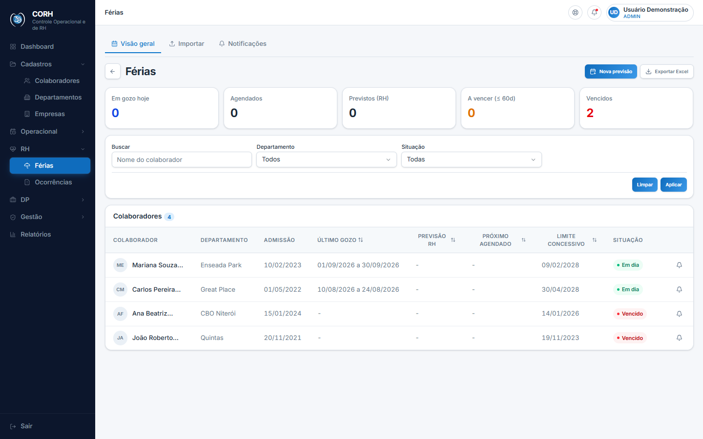
Tela: ferias (imagem com dados de exemplo)
Como fazer
Consultar a situação de um colaborador:
Abra o módulo Férias pelo menu lateral. A aba Visão geral já é a primeira.
No painel de filtros, digite o nome no campo Buscar.
Clique em Aplicar. A tabela mostra só os nomes que batem com a busca.
Leia a situação na última coluna: o selo colorido indica Em gozo, Agendado, Previsto, A vencer, Vencido, Em dia ou Sem dados.
Filtrar por departamento ou situação:
No painel de filtros, escolha um Departamento e/ou uma Situação (por exemplo, "Vencido" para ver só os casos urgentes).
Clique em Aplicar.
Para voltar à lista completa, clique em Limpar e depois em Aplicar.
Ordenar a tabela por data:
Clique no título da coluna Último gozo, Previsão RH, Próximo agendado ou Limite concessivo.
A lista é reordenada pela data. Clique de novo para inverter a ordem (mais antiga primeiro ou mais recente primeiro). Linhas sem data ficam sempre no final.
Cadastrar uma nova previsão de férias (planejamento do RH):
Clique no botão Nova previsão, no canto superior direito.
Na janela que abre, digite o nome no campo Colaborador e selecione na lista (apenas colaboradores ativos aparecem).
Preencha Início previsto. O sistema já sugere automaticamente o Fim previsto 30 dias depois (padrão CLT); ajuste se precisar.
Se quiser, escreva uma Observação (ex.: "previsão informada ao contrato em reunião").
Clique em Salvar previsão. A janela fecha e o colaborador aparece na tabela com a situação Previsto e o período na coluna Previsão RH.
💡 DICA — quando o período for confirmado no sistema de ponto e chegar pela importação do Flit, a previsão é baixada automaticamente — você não precisa apagar à mão.
Excluir uma previsão lançada errado:
Na linha do colaborador, clique no ícone de lixeira (ele só aparece quando existe uma previsão ativa).
Na janela de confirmação, confira o nome e o período e clique em Excluir.
A previsão some da tabela. Apenas previsões do RH podem ser excluídas aqui; os períodos que vieram do Flit não têm lixeira.
Registrar um aviso de férias direto da linha do colaborador:
Na linha do colaborador, clique no ícone de sino.
A janela de notificação abre já com o colaborador preenchido. Escolha para quem o aviso foi enviado (o colaborador ou o responsável pelo contrato), confira a data, escreva uma observação se quiser e clique em Registrar.
O aviso fica guardado na aba Notificações.
Exportar a lista para Excel:
Aplique os filtros que quiser (ou deixe tudo em "Todos" para exportar a lista completa).
Clique em Exportar Excel, no canto superior direito.
O navegador baixa o arquivo ferias_AAAA-MM-DD.xlsx com as mesmas colunas da tabela, e o sistema mostra a mensagem verde com a quantidade de registros exportados.
⚠️ ATENÇÃO — se não houver nenhum registro na lista filtrada, o sistema avisa "Nenhum registro para exportar. Aplique um filtro primeiro." e nenhum arquivo é baixado.
Campos e botões
Cartões de resumo (topo da tela):
Em gozo hoje: quantos colaboradores estão de férias neste momento (número azul).
Agendados: quantos têm férias com data marcada futura.
Previstos (RH): quantos têm previsão de planejamento lançada pelo RH.
A vencer (≤ 60d): quantos têm o limite concessivo a 60 dias ou menos de vencer (número amarelo).
Vencidos: quantos já passaram do limite concessivo (número vermelho) — exigem providência imediata.
Filtros:
Buscar: procura pelo nome do colaborador.
Departamento: restringe a lista a um departamento. A opção "Todos" mostra tudo.
Situação: restringe a uma situação (Em gozo, Agendado, Previsto, A vencer, Vencido, Em dia ou Sem dados).
Aplicar: aplica os filtros escolhidos à tabela.
Limpar: apaga os filtros e volta à lista completa.
Colunas da tabela:
Colaborador: nome, com as iniciais num círculo cinza.
Departamento: departamento do colaborador.
Admissão: data de admissão (base de todos os cálculos de prazo).
Último gozo: período das férias mais recentes já gozadas (início a fim). Um traço (-) indica que nunca gozou.
Previsão RH: próximo período previsto lançado pelo RH, se houver.
Próximo agendado: próximo período de férias já confirmado no Flit, se houver.
Limite concessivo: data máxima legal para o colaborador sair de férias do período mais antigo ainda não gozado.
Situação: selo colorido com o estado atual — Em gozo (azul), Agendado (azul), Previsto (cinza), A vencer (amarelo), Vencido (vermelho), Em dia (verde) ou Sem dados (cinza).
Botões e ícones:
Nova previsão (botão azul, topo): abre a janela para lançar uma previsão de férias. Aparece para os perfis Administrador, Gestor, RH, DP1 e DP2.
Exportar Excel (botão, topo): baixa a lista filtrada em Excel. Aparece para os perfis Administrador, Gestor, RH, DP1, DP2 e Mesa.
Sino (na linha): abre a janela para registrar um aviso de férias para aquele colaborador.
Lixeira (na linha): exclui a previsão de férias daquele colaborador, após confirmação. Só aparece quando há previsão ativa e para perfis que podem gerenciar férias.
Janela "Nova previsão de férias":
Colaborador: campo de busca por nome (apenas ativos).
Início previsto: data de início das férias previstas.
Fim previsto: data de fim — preenchida automaticamente com 30 dias a partir do início, mas editável.
Observação (opcional): texto livre para anotar detalhes da previsão.
Salvar previsão: grava a previsão. Se faltar colaborador ou datas, o sistema mostra o aviso em vermelho dentro da janela (ex.: "A data fim não pode ser anterior à data início").
Cancelar: fecha a janela sem salvar.
Importar
É a tela onde entram no CORH as férias de verdade — os períodos gozados e agendados. O sistema lê a planilha de férias exportada do Flit (controle de ponto), casa cada nome com o cadastro de colaboradores e mostra uma prévia antes de gravar qualquer coisa. Ao reimportar, os períodos anteriores que vieram do Flit dos mesmos colaboradores são substituídos pelos novos — nunca ficam duplicados.
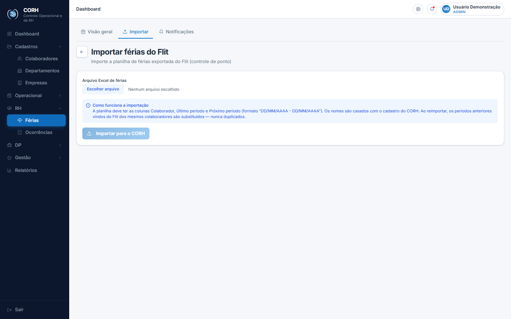
Tela: ferias-importar (imagem com dados de exemplo)
A planilha precisa ter as colunas Colaborador, Último período e Próximo período, com os períodos no formato "DD/MM/AAAA - DD/MM/AAAA" (ex.: 01/03/2026 - 30/03/2026). O último período entra como férias gozadas e o próximo período como férias agendadas. A tela também aceita as colunas de descrição (Últ. descrição e Próx. descrição), que são guardadas junto com cada período.
Como fazer
Importar a planilha de férias do Flit:
No Flit, exporte a planilha de férias (Excel, .xlsx ou .xls).
No CORH, abra Férias e clique na aba Importar.
Clique no seletor de arquivo e escolha a planilha no seu computador.
O sistema lê o arquivo e mostra a Pré-visualização: quantos colaboradores foram encontrados no cadastro e quantos períodos de gozo e agendados serão importados. Confira as listas de avisos (nomes não encontrados, nomes duplicados e períodos não interpretados).
Clique em Importar para o CORH. O botão mostra "Importando..." enquanto grava.
Ao terminar, aparece a mensagem verde com a quantidade de períodos importados e o quadro Resumo da importação: períodos importados, colaboradores atualizados e, quando houver, quantas previsões do RH foram baixadas automaticamente porque o período confirmado chegou do Flit.
⚠️ ATENÇÃO — os nomes na planilha precisam ser iguais aos do cadastro do CORH. Nomes que não casam com ninguém e nomes duplicados no cadastro ficam de fora da importação e aparecem nas listas amarelas da prévia — corrija o cadastro (ou a planilha) e importe de novo.
💡 DICA — se a pré-visualização mostrar "Erro ao ler o arquivo", confira se a planilha tem a coluna de nome do colaborador — a mensagem de erro lista as colunas que o sistema encontrou.
Campos e botões
Arquivo Excel de férias: seletor do arquivo da planilha (.xlsx ou .xls). Ao escolher, a leitura e a prévia acontecem na hora, antes de gravar.
Quadro "Como funciona a importação": lembrete fixo do formato esperado (colunas Colaborador, Último período e Próximo período) e da regra de substituição sem duplicar.
Importar para o CORH: grava os períodos da prévia no sistema. Fica desabilitado enquanto não há arquivo válido lido ou enquanto a importação está em andamento. Aparece para os perfis Administrador, Gestor, RH, DP1, DP2 e Mesa; os demais perfis veem o aviso "Seu perfil não tem permissão para importar férias."
Pré-visualização (aparece após escolher o arquivo):
Colaboradores encontrados no cadastro: quantos nomes da planilha casaram com o cadastro.
Períodos de gozo e agendados a importar: quantidade de cada tipo que será gravada.
Não encontrados no CORH: nomes da planilha sem cadastro correspondente — não são importados.
Nomes duplicados no cadastro — não importados: quando há mais de um colaborador ativo com o mesmo nome, o sistema não arrisca e pula a linha.
Períodos não interpretados: nomes cujo texto de período não estava no formato esperado.
Resumo da importação (aparece após importar): períodos importados, colaboradores atualizados e previsões do RH baixadas automaticamente.
Notificações
É o diário de avisos de férias. Toda vez que o RH comunica um colaborador sobre suas férias (o aviso de 30 dias, por exemplo) ou avisa o responsável pelo contrato de um cliente, o registro é lançado aqui — com data, destinatário e observação. Serve para provar que a comunicação foi feita e para ninguém avisar duas vezes.
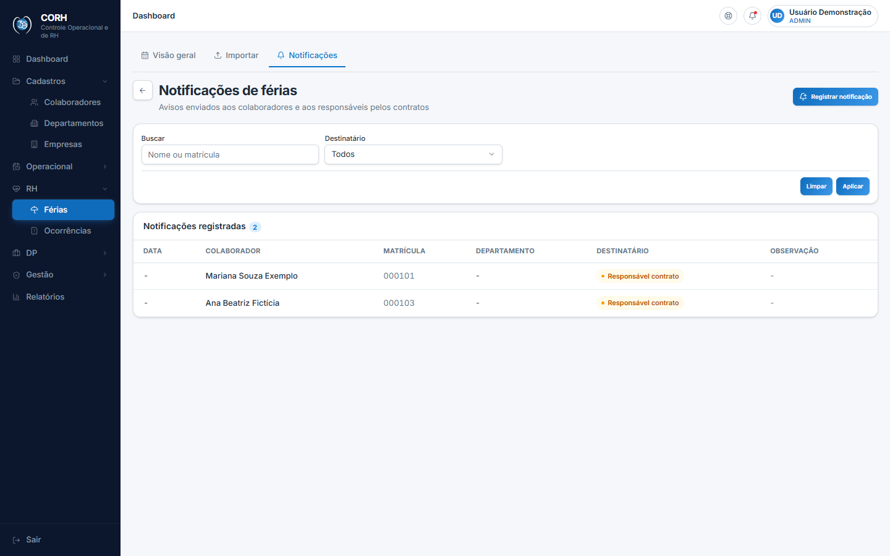
Tela: ferias-notificacoes (imagem com dados de exemplo)
Como fazer
Registrar uma notificação:
Abra a aba Notificações.
Clique em Registrar notificação, no canto superior direito.
Na janela, busque e selecione o Colaborador (apenas ativos).
Em Enviada para, marque se o aviso foi para o colaborador ou para o responsável pelo contrato.
Confira a Data da notificação — já vem preenchida com o dia de hoje, mas você pode mudar se o aviso foi enviado antes.
Se quiser, escreva uma Observação (ex.: "aviso de 30 dias enviado por e-mail").
Clique em Registrar. A janela fecha e o aviso aparece na lista.
💡 DICA — também dá para registrar o aviso sem sair da Visão geral — clique no ícone de sino na linha do colaborador. Nesse caso, a janela já abre com o nome preenchido e vinculada ao período de férias mais próximo dele.
Procurar notificações antigas:
No painel de filtros, digite o nome ou a matrícula no campo Buscar e/ou escolha o Destinatário (Ao colaborador ou Responsável pelo contrato).
Clique em Aplicar. A lista mostra só os registros que batem com o filtro.
Para ver tudo de novo, clique em Limpar.
Campos e botões
Filtros:
Buscar: procura pelo nome ou pela matrícula do colaborador.
Destinatário: restringe a lista a avisos enviados "Ao colaborador" ou ao "Responsável pelo contrato". A opção "Todos" mostra os dois.
Aplicar: aplica os filtros à lista.
Limpar: apaga os filtros e volta à lista completa.
Colunas da tabela:
Data: data em que o aviso foi enviado.
Colaborador: nome do colaborador avisado.
Matrícula: matrícula do colaborador.
Departamento: departamento do colaborador.
Destinatário: selo que indica para quem foi o aviso — "Colaborador" (azul) ou "Responsável contrato" (amarelo).
Observação: anotação livre registrada no lançamento.
Botões:
Registrar notificação (botão azul, topo): abre a janela de novo registro. Aparece para os perfis Administrador, Gestor, RH, DP1 e DP2.
Janela "Registrar notificação de férias":
Colaborador: campo de busca por nome (apenas ativos). Quando a janela é aberta pelo sino da Visão geral, o nome já vem preenchido e fixo.
Enviada para: escolha entre "O colaborador" e "O responsável pelo contrato".
Data da notificação: data do envio do aviso (vem com hoje).
Observação (opcional): texto livre sobre como o aviso foi feito.
Registrar: grava o aviso. Se faltar colaborador ou data, o sistema mostra o aviso em vermelho dentro da janela.
Cancelar: fecha a janela sem salvar.
Dúvidas frequentes
O que é o limite concessivo?
É a data máxima que a CLT dá para o colaborador sair de férias do período mais antigo ainda não gozado. O sistema calcula essa data sozinho a partir da admissão e dos períodos já gozados. Passou dessa data sem o colaborador gozar as férias, a situação vira "Vencido" e a empresa precisa agir.
Um colaborador aparece como "Sem dados". O que faço?
Significa que o sistema não conseguiu calcular o prazo — em geral porque a data de admissão está vazia no cadastro ou não há nenhum período de férias registrado. Confira o cadastro do colaborador e importe a planilha de férias do Flit na aba Importar.
Importei a planilha e alguns nomes ficaram de fora. Por quê?
Dois motivos possíveis: o nome na planilha não é igual ao do cadastro do CORH, ou há mais de um colaborador ativo com o mesmo nome (o sistema não arrisca e pula). Os dois casos aparecem nas listas amarelas da pré-visualização. Corrija o cadastro ou a planilha e importe de novo — reimportar não duplica nada.
Lancei uma previsão errada. Como apago?
Na Visão geral, clique no ícone de lixeira na linha do colaborador e confirme. Só dá para excluir previsões do RH; os períodos que vieram do Flit só são atualizados por uma nova importação.
O que acontece com a previsão do RH quando as férias são confirmadas?
Quando o período confirmado chega do Flit pela importação, a previsão é baixada automaticamente e o colaborador passa a aparecer como "Agendado" — o resumo da importação mostra quantas previsões foram baixadas.
Capítulo 9 — Vale Refeição (VR)
O módulo de Vale Refeição calcula quantos dias de vale cada colaborador tem direito em um mês e gera os arquivos para enviar à operadora do cartão (VR PAT) e à contabilidade (Alterdata). O cálculo cruza o espelho de ponto do Flit (PDF) com a planilha de escalas (Excel) e mostra a elegibilidade de cada pessoa. Cada mês de referência é um "projeto" separado, e os arquivos usados ficam guardados como comprovante.
O acesso é restrito: por padrão, o perfil DP1 pode visualizar os projetos e os resultados, e o DP2 pode criar projetos, importar arquivos, calcular e exportar. O Administrador vê e faz tudo.
Projetos de VR
É a tela inicial do módulo, com a lista de todos os projetos (meses de referência) já criados. Daqui você abre um projeto existente, cria um novo ou exclui um que foi feito por engano.
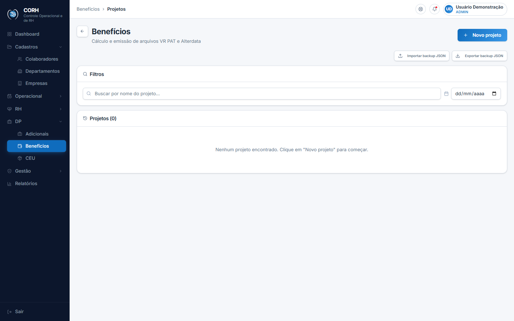
Tela: vr-projetos (imagem com dados de exemplo)
Como fazer
Abrir um projeto:
Clique em qualquer lugar da linha do projeto na lista.
O sistema abre a tela de detalhe do projeto, com o cálculo e os arquivos.
Criar um projeto novo:
Clique no botão Novo projeto, no canto superior direito.
O sistema abre a tela de cadastro (veja a seção "Novo projeto" abaixo).
Editar um projeto:
Na linha do projeto, clique no ícone de lápis.
O sistema abre a mesma tela de cadastro, já preenchida com os dados atuais.
Excluir um projeto:
Na linha do projeto, clique no ícone de lixeira.
O sistema pergunta "Excluir projeto VR? Esta ação não pode ser desfeita."
Clique em Excluir para confirmar, ou em Cancelar para desistir.
Ao confirmar, o projeto some da lista.
⚠️ ATENÇÃO — a exclusão é definitiva. O projeto e os resultados salvos dele não podem ser recuperados.
Encontrar um projeto na lista:
No cartão Filtros, digite parte do nome no campo Buscar por nome do projeto.... A lista já vai se filtrando conforme você digita.
Se quiser, escolha também uma data de corte no campo de data ao lado. A lista mostra só os projetos daquela data.
Para ver tudo de novo, apague o que digitou e limpe a data.
Guardar uma cópia de segurança (backup) dos projetos:
Clique em Exportar backup JSON.
O sistema baixa um arquivo no seu computador com todos os projetos e mostra a mensagem "Backup de projetos exportado".
Restaurar projetos a partir de um backup:
Clique em Importar backup JSON e escolha o arquivo de backup no seu computador.
O sistema recria cada projeto do arquivo com o sufixo "(restaurado)" no nome e mostra quantos foram restaurados.
Campos e botões
Novo projeto: abre a tela de cadastro de um projeto novo.
Importar backup JSON: restaura projetos a partir de um arquivo de backup salvo antes.
Exportar backup JSON: baixa um arquivo com todos os projetos, para guardar como cópia de segurança.
Buscar por nome do projeto...: campo de texto que filtra a lista pelo nome, enquanto você digita.
Campo de data (filtro): mostra só os projetos com aquela data de corte.
Coluna Projeto: nome do projeto (clique na linha para abrir o detalhe).
Coluna Data de corte: data de corte do mês de referência.
Coluna Efetivação: data em que o valor será creditado no cartão.
Coluna VR: valor diário do vale definido no projeto.
Ícone de lápis: abre o projeto para edição.
Ícone de lixeira: exclui o projeto (pede confirmação).
Novo projeto
Tela de cadastro do projeto de VR. É aqui que você define o nome, as datas, o valor diário do vale e os dados da empresa que vão nos arquivos enviados à operadora do cartão. A mesma tela serve para editar um projeto existente — nesse caso ela já abre preenchida.
Os campos de endereço e entrega já vêm preenchidos com os dados padrão da Plena. Só mexa neles se algo mudar de verdade (endereço, interlocutor etc.).
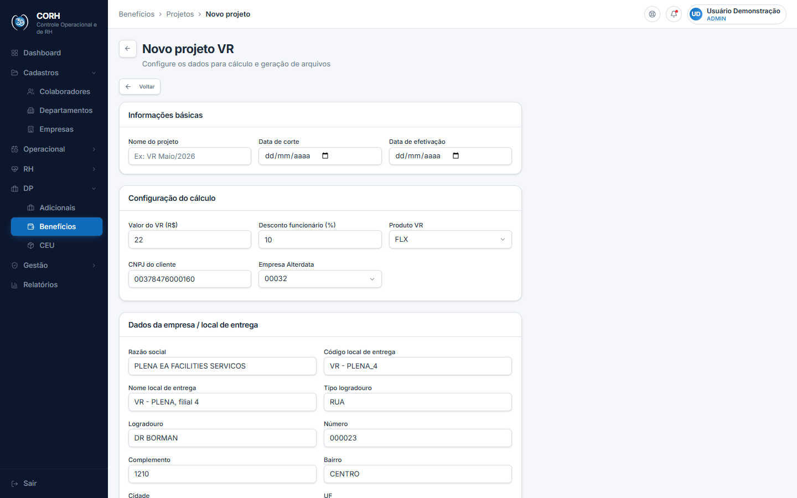
Tela: vr-projeto-novo (imagem com dados de exemplo)
Como fazer
Cadastrar um projeto:
Preencha o Nome do projeto (ex.: "VR Maio/2026").
Escolha a Data de corte (o mês de referência do cálculo) e a Data de efetivação (quando o valor cai no cartão).
Confira o Valor do VR (R$) e o Desconto funcionário (%).
Confira o Produto VR, o CNPJ do cliente e a Empresa Alterdata.
Confira os dados da empresa e do local de entrega.
Clique em Salvar e continuar.
O sistema grava o projeto e abre direto a tela de detalhe, onde você importa os arquivos e faz o cálculo.
Editar um projeto existente:
Abra a tela de edição pelo lápis na lista de projetos (ou pelo botão Editar configuração na tela de detalhe).
Altere o que for preciso e clique em Salvar e continuar.
O sistema salva e volta para a tela de detalhe do projeto.
⚠️ ATENÇÃO — se o CNPJ estiver com dígitos errados, o sistema mostra a mensagem "CNPJ do cliente inválido. Verifique os dígitos." e não salva. Corrija e tente de novo.
⚠️ ATENÇÃO — valores não podem ser negativos, e o desconto precisa estar entre 0 e 100%. Fora disso, o sistema avisa e não salva.
Campos e botões
Informações básicas:
Nome do projeto: nome que aparece na lista. Use algo que identifique o mês, como "VR Maio/2026". Obrigatório.
Data de corte: data de referência do cálculo do mês. Obrigatória.
Data de efetivação: data prevista para o crédito no cartão. Obrigatória.
Configuração do cálculo:
Valor do VR (R$: valor de cada dia de vale (ex.: 22,00). Obrigatório.
Desconto funcionário (%): percentual descontado do colaborador na folha (ex.: 10). Vai no arquivo da Alterdata. Obrigatório.
Produto VR: código do produto da operadora do cartão (opções: FLX, VBR, AXR, VBA, AXA, VCA, VBV, MBF, RAD, MNT).
CNPJ do cliente: CNPJ da empresa que contrata o benefício. O sistema coloca a máscara sozinho enquanto você digita e confere se o número é válido.
Empresa Alterdata: código da empresa no sistema da contabilidade (opções: 00032 ou 00035).
Dados da empresa / local de entrega (vão no arquivo enviado à operadora; já vêm preenchidos com os dados da Plena):
Razão social: nome jurídico da empresa.
Código local de entrega: código do local de entrega dos cartões.
Nome local de entrega: nome do local de entrega.
Tipo logradouro: ex.: RUA, AVENIDA.
Logradouro: nome da rua.
Número: número do endereço.
Complemento: complemento do endereço (sala, andar etc.).
Bairro: bairro.
Cidade: cidade.
UF: estado (duas letras, ex.: RJ).
CEP: CEP do endereço.
Nome do interlocutor: pessoa de contato da empresa.
Nome impressão cartão: nome que sai impresso no cartão.
Botões:
Voltar: retorna à lista de projetos sem salvar.
Salvar e continuar: grava o projeto e abre a tela de detalhe. Enquanto grava, o botão mostra "Salvando...".
Detalhe do projeto (cálculo e comprovantes)
É a tela principal do módulo. Aqui você importa os arquivos do mês, roda o cálculo, confere a elegibilidade de cada colaborador, ajusta o que for preciso e gera todos os arquivos e comprovantes.
O cálculo funciona assim: o sistema conta os dias trabalhados no PDF de ponto do mês de corte, soma os dias a trabalhar previstos na planilha de escala e desconta as faltas do mês anterior (abatimentos, lidas do PDF do mês anterior). O resultado são os dias elegíveis de cada pessoa. O valor de cada um é: dias elegíveis × valor diário do VR, mais um eventual valor extra.
Cada arquivo importado fica guardado anexado ao projeto, como comprovante do que foi usado no cálculo. O trabalho também fica salvo automaticamente no seu navegador enquanto você não clica em "Salvar resultados" — se fechar a página sem querer, ao voltar o sistema recupera o rascunho.
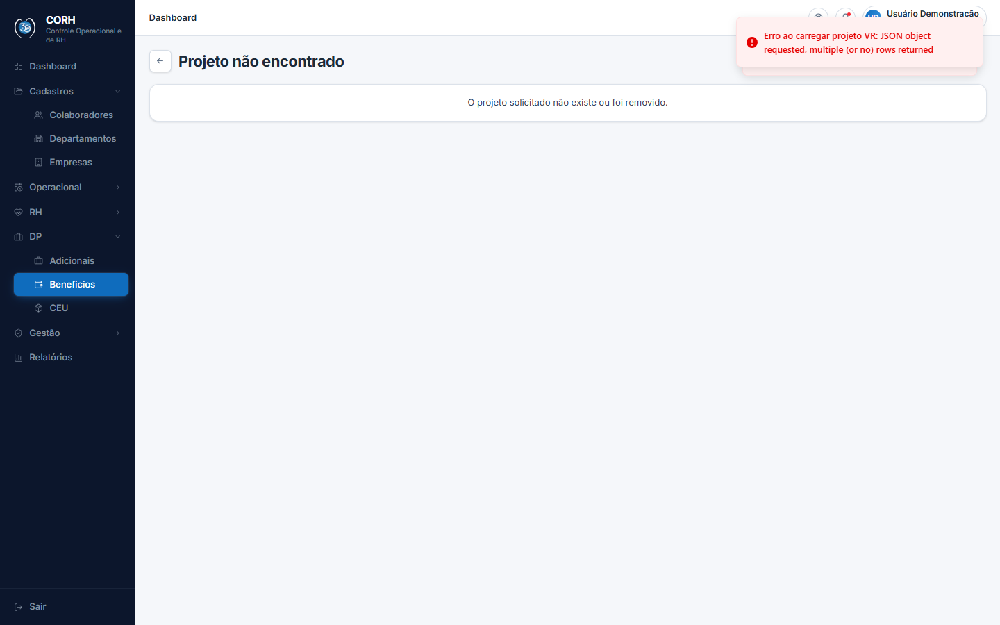
Tela: vr-projeto-detalhe (imagem com dados de exemplo)
Como fazer
Importar os arquivos e calcular (fluxo completo do mês):
No cartão PDF anterior (abatimentos), clique em Importar PDF e escolha o espelho de ponto do mês anterior. O sistema lê as faltas para abatimento.
No cartão PDF atual (dias trabalhados), clique em Importar PDF e escolha o espelho de ponto do mês de corte.
No cartão Escala futura, clique em Importar escala e escolha a planilha de escalas (arquivo Excel, .xlsx ou .xls).
No cartão Base matrícula/nascimento, clique em Importar base e escolha a planilha com matrícula, nome, CPF e data de nascimento dos colaboradores.
A cada arquivo, o sistema mostra a mensagem verde com o nome do arquivo processado e o cartão passa a exibir o nome do arquivo e quantos colaboradores foram encontrados.
Clique em Calcular VR. O botão mostra "Calculando..." e, ao terminar, a tela exibe os cartões de resumo e a tabela de resultados.
💡 DICA — importe os quatro arquivos antes de calcular. Sem o PDF atual e a escala, o cálculo sai incompleto.
⚠️ ATENÇÃO — se aparecer o aviso amarelo "Arquivo processado, mas não foi possível anexá-lo ao projeto", o cálculo funcionou normalmente — só a cópia de comprovante não ficou guardada. Avise o Administrador.
Conferir e ajustar os resultados:
Use o campo Buscar por nome ou CPF... para achar uma pessoa na tabela.
Use o seletor de Status para ver só Elegível, Parcial ou Não elegível.
Clique na setinha no início da linha para abrir os detalhes do cálculo daquela pessoa (quantos dias vieram do PDF, da escala, dos abatimentos e a conta final).
Se precisar corrigir, clique no número da coluna Elegíveis e digite o valor certo, ou preencha a coluna Extra (R$) para somar um valor. O sistema recalcula o valor total da pessoa na hora.
Para tirar alguém da lista, clique na lixeira da linha.
⚠️ ATENÇÃO — as colunas Elegíveis e Extra, a lixeira e os botões de importar, calcular e exportar só funcionam para o DP2 e o Administrador. O DP1 vê a tabela, mas não altera nada.
Remover quem ficou com 0 dias:
Se houver pessoas com 0 dias elegíveis, a tela mostra um aviso amarelo explicando que elas podem estar de férias, afastadas ou de folga.
Só se tiver certeza de que elas não devem constar no arquivo do mês, clique em Remover 0 dias.
O sistema pede confirmação. Clique em Remover para confirmar ou Cancelar para desistir.
Ao confirmar, as linhas somem e o sistema mostra quantas foram removidas.
⚠️ ATENÇÃO — depois de recarregar a página, não dá para desfazer a remoção. Na dúvida, não remova.
Salvar os resultados:
Depois de conferir e ajustar, clique em Salvar resultados.
O sistema grava os resultados no projeto, para que qualquer pessoa do DP veja os mesmos números ao abrir a tela.
Gerar os arquivos do mês:
Clique em TXT PAT para baixar o arquivo que vai para a operadora do cartão VR.
Clique em TXT Alterdata para baixar o arquivo com o desconto do vale para a contabilidade. O sistema mostra quantas linhas foram geradas e avisa se alguém foi pulado por não ter matrícula.
Clique em Conferência para baixar uma planilha com o resumo de todos (dias do PDF, da escala, elegíveis, ausências e valores), para conferência interna.
Gerar comprovantes e recibos:
Clique em Comprovantes para baixar um arquivo com o comprovante de todos os colaboradores de uma vez.
Clique em Todos os recibos para baixar os recibos em lote, prontos para impressão e assinatura.
Para o comprovante de uma pessoa só, clique no ícone de seta para baixo na linha dela. O sistema baixa o comprovante individual.
Ler o painel de validação:
Logo após o cálculo, se houver problemas, aparece o cartão Validação dos dados.
Itens em vermelho ("Erro") precisam de correção — ex.: CPF inválido, nome ou matrícula ausente, valor zero.
Itens em amarelo ("Aviso") pedem revisão antes de exportar — ex.: pessoa sem dias no PDF nem na escala, ou com mais de 31 dias elegíveis.
Campos e botões
Cartões de importação (só DP2 e Administrador):
PDF anterior (abatimentos) → Importar PDF: espelho de ponto do mês anterior; o sistema lê as faltas para descontar.
PDF atual (dias trabalhados) → Importar PDF: espelho de ponto do mês de corte.
Escala futura → Importar escala: planilha Excel com os dias que cada um ainda vai trabalhar no mês.
Base matrícula/nascimento → Importar base: planilha Excel com matrícula, nome, CPF e data de nascimento; completa dados que faltam nos outros arquivos.
Ações principais:
Calcular VR: roda o cruzamento dos arquivos importados e monta a tabela de resultados (só DP2 e Administrador).
Salvar resultados: grava os resultados no projeto (só DP2 e Administrador).
Todos os recibos: baixa os recibos de todos os colaboradores em lote.
TXT PAT: baixa o arquivo para a operadora do cartão VR (só DP2 e Administrador).
TXT Alterdata: baixa o arquivo de desconto para a contabilidade (só DP2 e Administrador).
Conferência: baixa a planilha de conferência com o resumo do cálculo (só DP2 e Administrador).
Comprovantes: baixa o comprovante geral de todos os colaboradores.
Cartões de resumo:
Total de colaboradores: quantas pessoas estão na tabela.
Dias elegíveis: soma dos dias de vale de todos.
Valor total: soma dos valores a creditar.
Tabela de resultados:
Buscar por nome ou CPF...: filtra a tabela enquanto você digita.
Status: filtra por Todos, Elegível, Parcial ou Não elegível.
Remover 0 dias: tira da lista quem ficou com 0 dias elegíveis, com confirmação (só DP2 e Administrador).
Bolinha colorida no nome: verde = elegível (recebe tudo); amarela = parcial (recebe menos dias do que trabalhou); vermelha = não elegível (0 dias).
Setinha no início da linha: abre/fecha os detalhes do cálculo da pessoa.
Coluna PDF: dias trabalhados lidos do PDF do mês de corte.
Coluna Escala: dias a trabalhar lidos da planilha de escala.
Coluna Abat.: abatimentos (faltas do mês anterior).
Coluna Elegíveis: dias finais de vale; editável (só DP2 e Administrador).
Coluna Extra (R$): valor extra somado ao total da pessoa; editável (só DP2 e Administrador).
Coluna Valor: valor total a creditar (dias elegíveis × valor do VR + extra).
Ícone de seta para baixo: baixa o comprovante individual da pessoa.
Lixeira da linha: remove a pessoa da lista (só DP2 e Administrador).
Outros:
Voltar: retorna à lista de projetos.
Editar configuração: abre a tela de edição do projeto (só DP2 e Administrador).
Dúvidas frequentes
Quais arquivos eu preciso para calcular o VR do mês?
Quatro: o PDF de ponto do mês anterior (para abater faltas), o PDF de ponto do mês de corte (dias trabalhados), a planilha de escala futura (dias a trabalhar) e a base com matrícula e data de nascimento. Importe os quatro e clique em Calcular VR.
Fechei a página sem salvar. Perdi o cálculo?
Provavelmente não. O sistema guarda um rascunho automático no seu navegador: ao abrir o projeto de novo, os resultados e os arquivos importados reaparecem. Para gravar definitivamente, clique em Salvar resultados.
Por que uma pessoa aparece com 0 dias elegíveis?
Ela pode estar de férias, afastada ou só de folga no período, ou teve muitas faltas abatidas. Abra os detalhes da linha dela (setinha) para ver a conta. Só use "Remover 0 dias" se tiver certeza de que ela não deve constar no arquivo do mês.
O valor de alguém está errado. Posso corrigir?
Sim, se você for DP2 ou Administrador. Clique no número da coluna Elegíveis e digite o valor certo, ou use a coluna Extra (R$) para somar um valor. O total é recalculado na hora. Depois, clique em Salvar resultados.
Qual arquivo eu envio para onde?
O TXT PAT vai para a operadora do cartão VR (crédito do benefício). O TXT Alterdata vai para a contabilidade (desconto do colaborador na folha). A planilha Conferência e os Comprovantes/Recibos são para conferência interna e assinatura.
Capítulo 10 — Gestão: e-Contador, Auditoria, Permissões, Configurações e Relatórios
Este capítulo reúne as telas de administração do sistema. É aqui que você importa colaboradores do sistema contábil, consulta o histórico de ações dos usuários, define o que cada perfil pode fazer e encontra os atalhos para todos os relatórios. Em geral, essas telas são usadas pelo Administrador e por perfis de gestão.
Importação e-Contador
A tela e-Contador traz empresas e funcionários diretamente do sistema contábil Alterdata para dentro do CORH, sem digitação manual. Você informa o token de acesso uma única vez, escolhe a empresa e importa os funcionários com poucos cliques. Somente os perfis Administrador, DP1 e DP2 acessam esta tela.
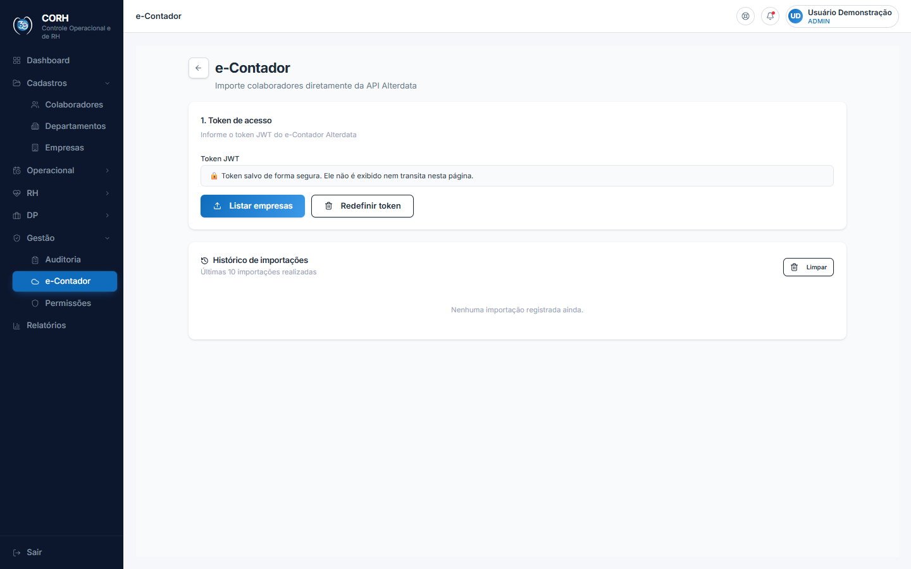
Tela: importar-econtador (imagem com dados de exemplo)
A tela é organizada em passos numerados: primeiro o token, depois a empresa, depois a lista de funcionários.
⚠️ ATENÇÃO — o token de acesso fica salvo de forma segura e nunca aparece na tela. Depois de salvo, a tela mostra apenas o aviso "🔒 Token salvo de forma segura. Ele não é exibido nem transita nesta página."
Como fazer
Salvar o token pela primeira vez:
No passo 1. Token de acesso, cole o token do e-Contador Alterdata no campo Token JWT (o texto digitado fica oculto, como uma senha).
Clique em Salvar token e listar empresas.
O sistema mostra a mensagem verde "Token salvo" e, em seguida, carrega as empresas no passo 2. Se nenhuma empresa for encontrada, aparece o aviso "Nenhuma empresa Plena encontrada no e-Contador com este token".
Importar funcionários de uma empresa:
Com o token salvo, clique em Listar empresas (nas próximas vezes o token já estará gravado, não precisa digitar de novo).
No passo 2. Selecionar empresa, clique no botão com o nome da empresa desejada. O sistema carrega os funcionários e mostra uma barra de progresso com a contagem de registros.
Se quiser, escolha no seletor Importar o tipo de lista: todos, somente ativos, demitidos nos últimos 15 dias ou admitidos nos últimos 15 dias. A lista é recarregada conforme a escolha.
Opcional: use o campo de busca para localizar funcionários por nome, matrícula, CPF ou departamento.
Opcional: marque a caixinha de cada funcionário que deseja importar (ou a caixinha do cabeçalho para marcar todos da página). Se nenhum estiver marcado, o sistema importa todos da lista.
Clique no botão azul Importar ... funcionários (o texto mostra a quantidade que será importada).
Ao final, o sistema mostra etiquetas coloridas com o resultado: verde para "novos", azul para "atualizados" e vermelho para "erros". Se houver erros, uma caixa vermelha chamada Detalhes dos erros lista o nome do colaborador e o motivo.
💡 DICA — quem já existe no sistema é atualizado com os dados novos; quem não existe é cadastrado. Por isso você pode repetir a importação sem medo de duplicar cadastros.
Reimportar a partir do histórico:
No cartão Histórico de importações, localize a linha da importação desejada.
Clique em Reimportar. O sistema refaz a importação daquela empresa e mostra o resultado na tela.
Exportar a lista sem importar:
Carregue os funcionários da empresa.
Clique em Excel ou CSV. O arquivo é baixado pelo navegador com a lista exibida na tela (o CPF sai parcialmente oculto, por segurança).
Redefinir o token:
Com o token salvo, clique em Redefinir token no passo 1.
O sistema mostra "Token removido", o campo de digitação volta a aparecer e a lista de empresas é limpa.
Cole o novo token e salve novamente.
Limpar o histórico da tela:
Clique em Limpar no cartão do histórico.
Na janela "Limpar histórico?", clique em Limpar para confirmar (ou Cancelar para desistir).
O sistema avisa que o histórico foi limpo apenas da tela; os registros continuam guardados no sistema.
Campos e botões
Token JWT: campo para colar o token de acesso do e-Contador. Some depois de salvo, dando lugar ao aviso de cadeado.
Salvar token e listar empresas: grava o token e já busca as empresas disponíveis.
Listar empresas: aparece quando o token já está salvo; apenas recarrega a lista de empresas.
Redefinir token: apaga o token salvo para permitir informar outro.
Botões de empresa (passo 2): cada botão mostra o nome e o código da empresa; clicar carrega os funcionários dela.
Importar (seletor): escolhe o recorte da lista — "Importar todos", "Importar somente ativos", "Importar demitidos nos últimos 15 dias" ou "Importar admitidos nos últimos 15 dias".
Campo de busca: filtra a lista por nome, matrícula, CPF ou departamento, conforme você digita.
Excel: baixa a lista exibida em planilha Excel (matrícula, nome, CPF, departamento, status, cargo, admissão, cidade e e-mail).
CSV: baixa a lista exibida em arquivo CSV (matrícula, nome, CPF, departamento, status, cargo e admissão).
Caixinhas de seleção: marcam funcionários específicos para importar; a caixinha do cabeçalho marca/desmarca todos da página.
Setas de página: navegam pela lista, que mostra 50 funcionários por página.
Importar ... funcionários: botão azul que grava os funcionários no sistema; mostra a quantidade de selecionados ou o total da lista.
Cartões de resumo (topo da tela): mostram o total de funcionários da lista, quantos foram novos e quantos foram atualizados na última importação.
Histórico de importações: tabela com as últimas 10 importações (data, empresa, quantidade, novos, atualizados e erros).
Reimportar: refaz a importação da linha escolhida no histórico.
Limpar (histórico): oculta o histórico da tela, com confirmação antes.
Auditoria
A tela Auditoria mostra quem fez o quê dentro do sistema: cada inclusão, alteração, exclusão e cancelamento fica registrado com data, hora e o nome do usuário. Serve para conferir alterações e investigar dúvidas sobre um cadastro. Somente os perfis Gestor e Administrador acessam esta tela.
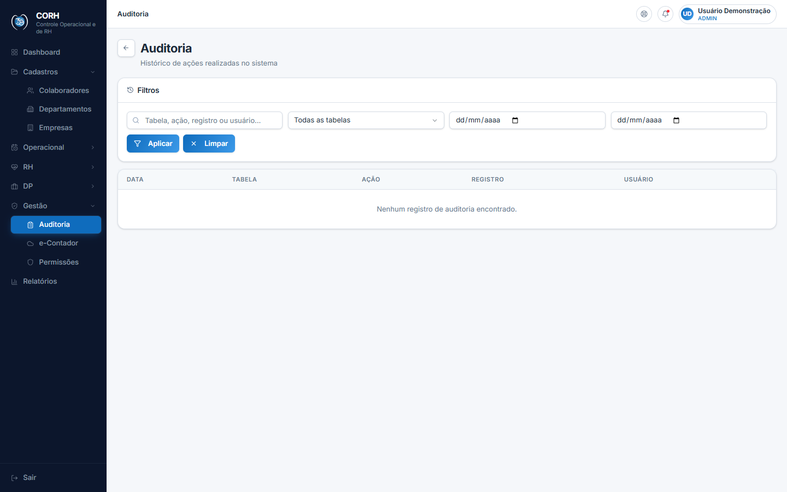
Tela: auditoria (imagem com dados de exemplo)
Como fazer
Consultar o histórico:
A tabela já abre com os registros mais recentes. Cada linha mostra a data, a área alterada (coluna Tabela), o tipo de ação, o código do registro e o usuário.
O tipo de ação aparece em etiquetas coloridas: verde para Criação, azul para Atualização, vermelho para Exclusão e amarelo para Cancelamento.
Clique em uma linha para abrir o detalhe: o sistema mostra lado a lado os Dados anteriores e os Dados novos, para você ver exatamente o que mudou. Clique de novo para fechar.
Use as setas de paginação no rodapé para ver registros mais antigos (50 por página).
Filtrar os registros:
Digite no campo de busca um termo de tabela, ação, registro ou nome de usuário.
Escolha uma área no seletor Tabela (Colaboradores, Empresas, Departamentos, Ocorrências, Extras, Recibos de extras, Categorias de extras, Contratos adicionais, Vínculos adicionais, Calendário adicionais, Itens CEU, Entregas CEU — ou "Todas as tabelas").
Se quiser limitar o período, preencha as datas Data inicial e Data final.
Clique em Aplicar. A tabela é recarregada com os filtros.
Para voltar a ver tudo, clique em Limpar.
💡 DICA — a busca também funciona pelo nome do usuário — útil para ver tudo o que uma pessoa fez em um período.
Campos e botões
Busca: campo livre que procura por tabela, ação, registro ou usuário. Apertar Enter também aplica o filtro.
Tabela: seletor com as áreas do sistema; filtra os registros de uma área só. Trocar a área já atualiza a lista na hora.
Data inicial: mostra só registros a partir desta data.
Data final: mostra só registros até esta data.
Aplicar: aplica a busca e as datas digitadas.
Limpar: apaga todos os filtros e volta a lista completa.
Seta da linha (última coluna): abre/fecha o detalhe com os dados anteriores e novos do registro.
Paginação (rodapé): mostra o total de registros e os botões de página anterior/próxima.
Permissões
A tela Permissões é onde o Administrador liga e desliga cada permissão de cada perfil de acesso. Cada item tem uma caixinha: marcada, o perfil pode fazer aquela ação; desmarcada, não pode. Somente o Administrador acessa esta tela.
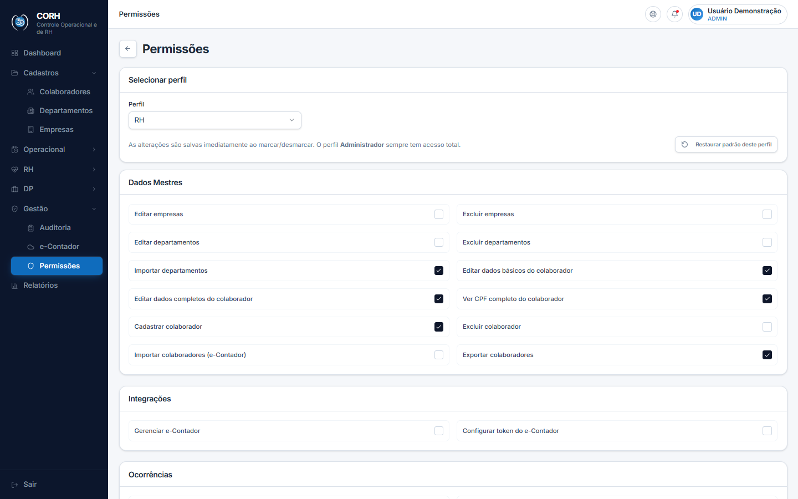
Tela: permissoes (imagem com dados de exemplo)
⚠️ ATENÇÃO — a mudança vale na hora. Ao marcar ou desmarcar uma caixinha, o sistema salva imediatamente e mostra "Permissões salvas com sucesso". Enquanto grava, aparece um aviso escuro "Salvando..." no canto inferior direito.
⚠️ ATENÇÃO — o perfil Administrador sempre tem acesso total e não pode ser alterado por esta tela.
Como fazer
Alterar uma permissão:
No cartão Selecionar perfil, escolha o perfil desejado na lista (Gestor, RH, DP1, DP2, Mesa, Inspetoria, Financeiro ou Visualizador).
Percorra os cartões de grupos — Dados Mestres, Integrações, Ocorrências, Extras, VR, Adicionais, Alertas / Configurações, Escalas, CEU, Férias, Menus e Rotas.
Marque ou desmarque a caixinha do item desejado. O sistema salva na hora e confirma com a mensagem verde.
Repita para cada permissão que quiser ajustar.
Voltar um perfil ao padrão:
Selecione o perfil na lista.
Clique em Restaurar padrão deste perfil.
Na janela de confirmação, clique em Restaurar padrão (ou Cancelar para desistir).
O sistema mostra a mensagem verde "Permissões do perfil ... restauradas para o padrão" e as caixinhas voltam à configuração original.
💡 DICA — os grupos Menus e Rotas controlam o que aparece no menu lateral e quais telas o perfil consegue abrir. Se alguém reclamar que um menu sumiu, é aqui que se ajusta.
Campos e botões
Perfil: seletor com os perfis de acesso editáveis; define qual perfil está sendo configurado.
Restaurar padrão deste perfil: devolve todas as permissões do perfil selecionado à configuração original, após confirmação.
Caixinhas de permissão: ligam/desligam cada permissão, agrupadas por assunto:
Dados Mestres: editar/excluir empresas, editar/excluir/importar departamentos, editar dados básicos e completos do colaborador, ver CPF completo, cadastrar, excluir, importar (e-Contador) e exportar colaboradores.
Integrações: gerenciar e-Contador e configurar o token do e-Contador.
Ocorrências: criar, editar, cancelar, ver detalhes, aprovar, anexar arquivos, adicionar testemunhas, gerar PDF e gerenciar modelos.
Extras: criar/editar, excluir, editar e excluir categorias de valor, gerenciar recibos, marcar como pago, cancelar/excluir recibo, ver relatório, ver balanço e enviar comunicação.
VR: visualizar e gerenciar projetos.
Adicionais: editar contratos, editar vínculos, editar calendário e ver relatório.
Alertas / Configurações: gerenciar alertas, ver configurações e ver auditoria.
Escalas: visualizar, editar locais de trabalho, mapear Flit ↔ Local, importar Excel do Flit, confirmar local manualmente e editar local de um dia.
CEU: registrar entrega, registrar devolução, excluir entrega, emitir recibos, cadastrar/editar itens, excluir itens, gerenciar fornecedores, importar planilha e ver relatórios.
Férias: importar planilha do Flit, exportar visão geral para Excel e lançar previsões/notificações.
Menus: mostram ou escondem cada item do menu lateral (Dashboard, Colaboradores, Empresas, Departamentos, e-Contador, Ocorrências, Extras, Benefícios (VR), CEU, Adicionais, Alertas, Auditoria, Permissões, Relatórios e Férias).
Rotas: liberam ou bloqueiam a abertura de cada tela (colaboradores, empresas, departamentos, ocorrências, extras, VR, CEU, adicionais, importação e-Contador, configurações, auditoria, permissões, alertas, relatórios, férias e lançamento mobile de falta).
Configurações
A tela Configurações reúne opções gerais do sistema. No momento ela não tem nenhuma configuração ativa: ao abrir, você vê apenas o aviso "Nenhuma configuração ativa no momento" e a orientação de que a configuração do token do e-Contador foi movida para a tela de importação.
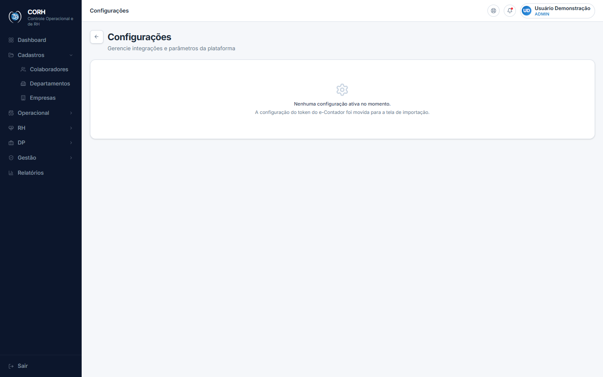
Tela: configuracoes (imagem com dados de exemplo)
Como fazer
Não há tarefas nesta tela no momento. Para configurar o token do e-Contador, use a tela Importação e-Contador (passo 1, descrito no início deste capítulo).
Campos e botões
Não há campos nem botões ativos — apenas a mensagem informativa central.
Relatórios
A tela Relatórios é o ponto de partida para as exportações do sistema. Ela mostra cartões-atalho para o relatório de cada módulo, agrupados por assunto. Você só enxerga os cartões das telas que o seu perfil tem permissão de abrir.
Tela: relatorios (imagem com dados de exemplo)
Como fazer
Abrir um relatório:
Localize o grupo do módulo desejado (Extras, Adicionais, CEU, Férias, Escalas, Benefícios (VR) ou Gestão).
Clique no cartão do relatório. O sistema abre a tela correspondente, onde você filtra o período e exporta o arquivo.
Se o seu perfil não tiver acesso a nenhuma tela de relatório, a página mostra o aviso "Nenhum relatório disponível".
Campos e botões
Relatório Semanal (Extras): extras por período com totais por colaborador e categoria; exporta em Excel.
Balanço Operacional (Extras): resumo diário da operação (faltas, coberturas e reforços) para o relatório de WhatsApp.
Recibos de Pagamento (Extras): geração, assinatura e controle de pagamento dos recibos de extras.
Relatório de Adicionais (Adicionais): insalubridade, periculosidade e feriados por vínculo e período; exporta CSV e Excel.
Relatórios do CEU (CEU): entregas por colaborador, data, item, vencimento e estoque; exporta em Excel.
Painel CLT de Férias (Férias): situação de cada colaborador (em gozo, agendado, a vencer, vencido); exporta em Excel.
Local de Trabalho Diário (Escalas): onde cada colaborador trabalhou em cada dia, com exportação do período.
Projetos de VR (Benefícios): resultados do cálculo de vale-refeição e comprovantes por projeto.
Auditoria (Gestão): atalho para a trilha de ações dos usuários, descrita neste capítulo.
Dúvidas frequentes
Importei os funcionários errados. E agora?
Quem já existia no sistema é apenas atualizado, não duplicado. Se precisar corrigir um cadastro, ajuste na tela de Colaboradores ou refaça a importação com a lista certa.
O token do e-Contador venceu. Como troco?
Na tela Importação e-Contador, clique em Redefinir token, cole o novo token e clique em Salvar token e listar empresas.
Consigo apagar registros da Auditoria?
Não. A Auditoria é um histórico de consulta — serve justamente para preservar o rastro de quem fez o quê. Você pode filtrar e expandir os registros, mas não editá-los nem excluí-los pela tela.
Desmarquei uma permissão por engano. Como volto atrás?
Marque a caixinha de novo — a mudança é imediata nos dois sentidos. Se não lembrar como estava, use Restaurar padrão deste perfil para voltar tudo ao original daquele perfil.
Por que não vejo todos os cartões na tela Relatórios?
Os cartões aparecem conforme a permissão do seu perfil. Se um relatório que você precisa não aparece, peça ao Administrador para liberar o acesso na tela Permissões.
Anexo — Como gravar vídeos de treinamento
Além deste manual, você pode gravar vídeos curtos mostrando as telas em movimento. Não é preciso nenhum programa pago: o próprio Windows já tem um gravador de tela.
Gravando com o Windows (sem instalar nada)
1. Abra o sistema CORH na tela que você quer mostrar.
2. Pressione as teclas Windows + G para abrir a barra de gravação do Windows.
3. Clique no botão de gravar (a bolinha) e faça a tarefa na tela, falando o que está fazendo.
4. Para terminar, pressione Windows + Alt + R. O vídeo fica salvo na pasta Vídeos > Capturas do computador.
Dicas para bons vídeos de treinamento
Um vídeo por tarefa: prefira vários vídeos curtos (1 a 3 minutos) a um vídeo longo. Ex.: "Como lançar um extra", "Como importar o ponto".
Siga o manual: use o passo a passo do capítulo correspondente como roteiro do que mostrar na tela.
Use dados de exemplo: evite gravar informações pessoais reais (CPF, salários) nos vídeos.
Fale devagar e aponte: diga em voz alta o nome do botão antes de clicar nele.